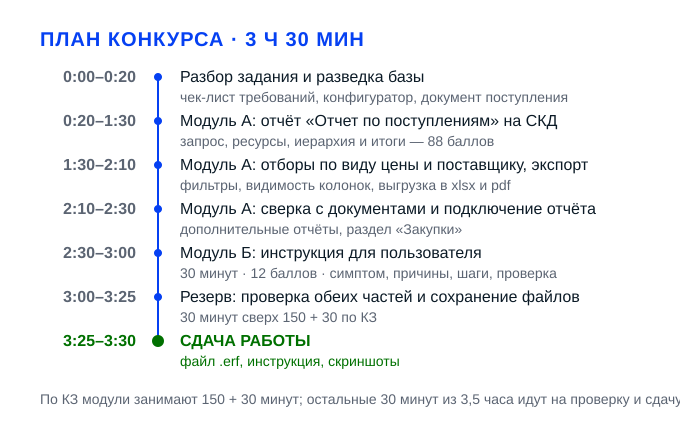
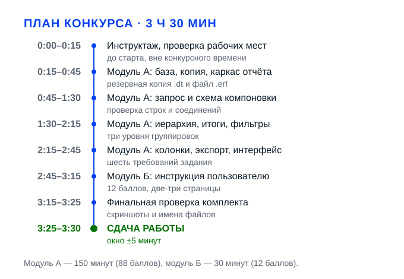
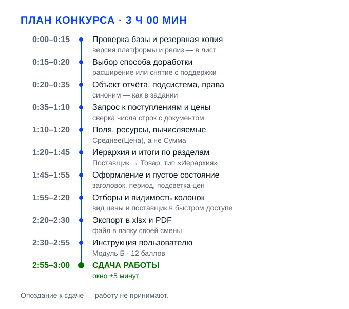

Специалист по типовым решениям 1С (Р,О)
Задания ниже — официальные файлы «Абилимпикс» (источник: abilympics-russia.ru), разложенные по категориям. Решения написаны по тексту задания, регламенту и критериям оценки; в них указано, что именно проверяет эксперт.
Школьник
14–16 лет, базовый уровень заданияВыдержка из официального конкурсного задания: страницы, относящиеся к категории «Школьник» (стр. 3–6 источника).
Пошаговое решение
Конкурсное задание категории «Школьники» состоит из двух модулей и занимает три с половиной часа. В модуле А, на который отведено 150 минут и 88 баллов из 100, нужно доработать типовое решение «1С:Управление нашей фирмой» редакции 3.0 — создать новый отчёт «Отчет по поступлениям», который показывает цены товаров из документов поступления, строится с иерархической структурой, выводит итоги по разделам, умеет отбирать данные по виду цены и поставщику, сохраняется в файл и позволяет включать и выключать колонки. В модуле Б за 30 минут и 12 баллов нужно написать инструкцию для пользователя, который столкнулся с проблемой в работе программы: инструкция должна быть такой, чтобы человек без подготовки прошёл по ней и всё исправил. Ниже задание разобрано на четыре задачи и сорок семь шагов в порядке их выполнения на площадке; у каждого шага объяснено, что смотрит эксперт и где теряются баллы.

Задача 1. Разобрать постановку и подготовить базу к доработкеМодуль А · 88 баллов (общая оценка отчёта)
Прежде чем что-то создавать, нужно понять, что именно просят, и убедиться, что рабочая база открывается в нужном режиме. На этом этапе вы выписываете требования из задания в виде проверяемого списка, открываете конфигуратор, находите документ, которым в типовом решении оформляются поступления, и запоминаете точные имена таблиц и реквизитов. Ошибка, допущенная здесь, стоит дороже всего: если вы угадываете имена полей вместо того, чтобы посмотреть их в дереве конфигурации, запрос придётся переписывать, а время модуля А уже израсходовано.
Действие 1.1. Прочитать задание и превратить его в чек-лист
Шаг 1.1.1
Берём выданное задание и читаем его целиком, не приступая к работе: сначала весь текст, чтобы понять общий замысел, и только потом по частям. Затем выписываем на лист бумаги или в блокнот каждое требование к отчёту отдельной строкой: имя отчёта «Отчет по поступлениям», источник данных — документы поступления, иерархическая структура, итоги по разделам, фильтр по виду цены, фильтр по поставщику, экспорт в файл, настройка видимости колонок. Напротив каждой строки оставляем место, куда будем ставить галочку после проверки, — так к концу модуля видно, что закрыто, а что ещё нет.
Требования в этом задании перечислены в описании модуля А, и каждый пункт из этого перечня потом проверяется экспертом отдельно: иерархия — один критерий, итоги — другой, отборы — третий, экспорт и видимость колонок — четвёртый. Если делать отчёт «в целом красивым» и не сверяться со списком, легко получить работающий отчёт, в котором нет половины обязательных возможностей, и потерять десятки баллов из 88.
В списке семь-восемь строк, и каждая сформулирована так, что результат можно проверить глазами: например, «в отчёте есть группировка по номенклатуре с раскрытием групп» или «в отчёте есть поле отбора «Поставщик», и при его заполнении строки других поставщиков исчезают». Если формулировка не позволяет проверить результат, переписываем её.
Частая ошибка — прочитать задание по диагонали, увидеть слова «отчёт по поступлениям» и сразу сесть за конфигуратор: в итоге отчёт строится без итогов по разделам и без отбора по виду цены — без двух критериев из четырёх. Вторая ошибка — держать требования в голове: к третьему часу участник додумывает задание вместо того, чтобы его выполнять.
Эксперт на этом шаге ничего не измеряет, но дальше он сверяет сдачу именно с перечнем требований, и наличие письменного чек-листа на столе видно сразу — по нему участник идёт до конца и не мечется между недоделанными функциями.
Шаг 1.1.2
Отдельно выписываем ограничения: время модуля А — 150 минут, модуля Б — 30 минут, общее время 3,5 часа, вес модуля А — 88 баллов, вес инструкции — 12 баллов. Дальше делим 150 минут на четыре части примерно так: 20 минут на разбор и подготовку, 70 минут на отчёт и запрос, 40 минут на оформление, отборы и экспорт, 20 минут на проверку на контрольных данных и сохранение. Цифры записываем рядом с часами или на видном месте, чтобы в середине работы одним взглядом понимать, идёте вы по графику или отстаёте.
Модуль А весит 88 баллов против 12 у инструкции, поэтому именно он определяет результат, и тратить на него больше 150 минут нельзя даже при хорошем ходе работы: недоделанный отчёт с идеальной инструкцией даст в лучшем случае 12 баллов из 100. Разбивка по времени нужна ещё и потому, что отчёт делается итерациями: сначала работающий минимум, потом украшения, — и без графика легко застрять на оформлении, не имея данных.
К моменту старта у вас есть план с четырьмя контрольными точками и понимание, что считается «работающим минимумом»: запрос отдаёт строки, отчёт открывается, данные совпадают с документами. Если к контрольной точке минимум не готов, вы бросаете оформление и возвращаетесь к данным, а не наоборот.
Классическая ошибка — планировать «сделаю всё за два часа и полчаса проверю»: проверка съедает больше времени, чем кажется, потому что каждый отбор надо прокликать вручную. Вторая — отдать все 150 минут отчёту и начать инструкцию за пять минут до сдачи, потеряв 12 баллов почти без борьбы.
Эксперт видит дисциплину по времени косвенно: по тому, сдана ли работа в окно сдачи и есть ли в ней обе части. Работа без инструкции оценивается максимум в 88 баллов, даже если отчёт идеален.
Шаг 1.1.3
Проверяем, что задание понято правильно, по трём вопросам, на которые отвечаем письменно одним предложением каждый: что показывает отчёт (цены товаров из документов поступления, а не остатки и не продажи), в каком разрезе он строится (товар и его группа, с итогами по разделам), и чем управляет пользователь (вид цены, поставщик, период, набор видимых колонок). Если хотя бы на один вопрос ответ получается расплывчатым, возвращаемся к тексту задания и ищем нужный абзац — он там есть, в описании результата модуля А.
Эти три вопроса — фактически техническое задание на запрос и на настройки. Из первого ответа следует, что источником должны быть таблицы документов поступления, а не регистр остатков; из второго — что в структуре отчёта нужна группировка с иерархией по справочнику номенклатуры; из третьего — что в схеме должны появиться параметры и отборы, доступные пользователю, а не зашитые в запрос условия.
Ответы записаны и не противоречат друг другу: например, если в первом ответе появилось слово «остатки», а во втором — «движения», значит, задание ещё не разобрано, и надо вернуться к чтению. Проверьте также, что в ответах нет слов «наверное» и «примерно» — они означают, что требование не понято.
Ошибка — свести всё к «надо сделать отчёт по ценам» и не разделить цены и суммы: в задании речь о ценах товаров из документов поступления, и отчёт только с суммами формально строится, но анализа не даёт. Вторая — решить, что при словах «иерархическая структура» достаточно включить итоги: иерархия и итоги — разные настройки, и обе нужны.
Эксперт при защите работы может задать вопрос «что показывает ваш отчёт и зачем он нужен закупщику» — на этом шаге вы готовите ответ на него, и за внятное объяснение назначения отчёта баллы тоже начисляются.
Действие 1.2. Открыть базу и подготовить рабочее место в конфигураторе
Шаг 1.2.1
Запускаем «1С:Предприятие», в окне списка информационных баз выбираем ту, которая указана в задании (обычно это база «Управление нашей фирмой» с демонстрационными данными), и входим в неё в режиме «Конфигуратор», а не в режиме «1С:Предприятие». Если база открыта в пользовательском режиме, закрываем её и запускаем заново, выбрав в диалоге запуска именно конфигуратор. В конфигураторе сразу открываем меню «Конфигурация» и проверяем, что пункт «Открыть конфигурацию» доступен.
Создание отчёта, у которого есть схема компоновки данных и запрос, физически делается в конфигураторе: в пользовательском режиме нет ни дерева метаданных, ни конструктора запроса. Кроме того, в конфигураторе видно, стоит ли конфигурация на поддержке и включена ли возможность изменения — от этого зависит, имеете ли вы право править типовые объекты или обязаны делать внешний отчёт.
Конфигуратор открылся, в заголовке окна видно имя базы, дерево конфигурации загружено и раскрывается без ошибок. Если вместо дерева появилось сообщение о несовпадении конфигурации базы данных, нажимаем «Принять» и дожидаемся загрузки — работать в состоянии, когда дерево не совпадает с базой, нельзя.
Ошибка — открыть конфигуратор «на чужой» базе, например на пустой учебной, и потом искать свои документы в демо-данных, которых там нет. Вторая — начать работу до окончания загрузки дерева конфигурации и увидеть пустые ветки, решив, что база битая.
Эксперт обходит рабочие места в начале конкурса и отмечает, кто работает в правильном режиме: участник, который полчаса ищет, где создаётся отчёт, теряет время, а не баллы, но времени у него потом не хватает.
Шаг 1.2.2
Проверяем статус поддержки: выделяем корень дерева конфигурации, открываем контекстное меню и смотрим «Поддержка → Настройка поддержки». Если конфигурация стоит на поддержке с запретом изменения, типовые объекты править нельзя, и это нормальный, правильный сценарий: доработка делается внешним отчётом, который хранится отдельным файлом и не ломает типовое решение при обновлении. Убеждаемся, что у нас есть право создавать внешние отчёты и обработки, и что база не находится в монопольном режиме, который помешает потом проверить результат.
Правила оформления модификаций типовых конфигураций — отдельное требование к квалификации в конкурсном задании, и звучит оно так: типовое решение не переписывают, а расширяют. Внешний отчёт — самый чистый способ: он не требует снятия с поддержки, его можно передать заказчику одним файлом, и он не исчезнет при обновлении конфигурации, а именно это и происходит с правками, внесёнными прямо в типовой объект.
В дереве видно, что конфигурация на поддержке, и вы не собираетесь менять её объекты. В списке внешних отчётов и обработок (в пользовательском режиме это «НСИ и администрирование → Настройки → Дополнительные отчёты и обработки») видно, что можно добавить новый файл, — значит, механизм доступен.
Грубая ошибка — снять конфигурацию с поддержки и начать править типовой отчёт или справочник: на конкурсе это нарушение правил кастомизации, а на практике — потеря возможности обновляться. Вторая ошибка — сделать внешний отчёт, но не сохранить его в файл, а оставить только в памяти конфигуратора: после перезапуска работа исчезнет.
Эксперт проверяет, каким способом выполнена доработка: внешний отчёт с файлом .erf и записью в дополнительных отчётах оценивается как правильное решение, правка типовой конфигурации — как нарушение.
Шаг 1.2.3
Создаём папку для работы на диске, например C:\Конкурс\1С, и сразу сохраняем в неё всё, что будем делать: файл внешнего отчёта, текст инструкции, скриншоты. Имя файла отчёта делаем латиницей и без пробелов — «OtchetPoPostupleniyam.erf», потому что русские имена иногда ломаются при передаче работы на флешку или в сетевую папку. В конфигураторе открываем «Файл → Новый → Внешний отчёт» и сохраняем заготовку в эту папку, чтобы дальнейшая работа шла уже в файле, а не в несохранённом объекте.
Сохранение в файл — это и способ не потерять работу при сбое, и требование сдачи: эксперту нужен файл, который он откроет в своей базе. Практика чемпионатов показывает, что несколько баллов регулярно теряются именно на том, что участник сделал отчёт, но не смог его показать, потому что работа осталась в памяти конфигуратора или в папке, которую он не помнит.
В папке появился файл отчёта, в заголовке окна конфигуратора стоит имя этого файла. Нажмите «Сохранить» ещё раз после первых изменений и убедитесь, что дата изменения файла обновилась. Размер файла — не нулевой, иначе сохранение не прошло.
Ошибка — работать с объектом, созданным внутри конфигурации, а не внешним: внешний отчёт создаётся командой «Файл → Новый → Внешний отчёт», и в дереве он выглядит как отдельное окно, а не как ветка конфигурации. Вторая — сохранять в «Мои документы» или на рабочий стол, а потом не найти файл при сдаче.
Эксперт при сдаче просит открыть файл отчёта и загрузить его в базу; если файла нет, работа считается несданной, сколько бы ни было сделано в конфигураторе.
Действие 1.3. Найти документ поступления и запомнить имена таблиц
Шаг 1.3.1
В дереве конфигурации раскрываем ветку «Документы» и ищем тот документ, которым в «Управлении нашей фирмой» оформляются поступления товаров: в редакции 3.0 это «Приходная накладная», в интерфейсе он может называться «Поступление товаров и услуг». Не угадываем по названию: открываем документ двойным щелчком и смотрим вкладку «Данные» — там перечислены реквизиты (шапка) и табличные части. Записываем на лист точное имя документа так, как оно написано в дереве, и точное имя табличной части со строками товаров.
Имя объекта и имя табличной части — это то, что вы потом напишете в запросе, и любая опечатка обернётся ошибкой «поле не найдено» или, что хуже, пустым отчётом без сообщения об ошибке. В конкурсном задании есть отдельное требование уметь работать с прикладными объектами ссылочного вида — справочниками и документами, — и начинается оно именно с умения читать структуру объекта по дереву метаданных.
На листе записаны три имени: документ, его табличная часть, справочник номенклатуры. Проверить себя просто: откройте «Конструктор запроса», найдите эти объекты в списке и убедитесь, что они находятся поиском по тем именам, которые вы записали.
Ошибка — взять первый документ, в названии которого есть слово «Поступление», например «Поступление денежных средств»: он не содержит товаров, и запрос по нему даст пустой отчёт. Вторая — писать в запросе русское название «Приходная накладная» вместо имени объекта: в запросе используются имена метаданных без пробелов.
Эксперт смотрит, как участник ориентируется в дереве конфигурации: уверенный поиск нужного документа за минуту и попытки открыть всё подряд — разные уровни владения средой разработки.
Шаг 1.3.2
Открываем табличную часть документа и выписываем её колонки: номенклатура, количество, цена, сумма, ставка НДС, сумма НДС. Отдельно смотрим шапку: дата, номер, контрагент (он же поставщик), склад, валюта, вид цены — если реквизит «Вид цены» в документе есть, это лучший источник для фильтра, потому что он хранится прямо в документе и не требует соединений. Если такого реквизита нет, вид цены придётся брать из регистра сведений «Цены номенклатуры» на дату документа, и это надо выяснить сейчас, а не на середине написания запроса.
От способа получить вид цены зависит вся конструкция запроса: с реквизитом документа это одно поле, без него — левое соединение с регистром сведений по трём измерениям и условию на период, то есть втрое больше кода и заметно больше шансов на ошибку. Задание требует фильтра по виду цены, и отчёт без него теряет часть баллов, поэтому вопрос решается на этапе разведки, а не в конце.
В списке реквизитов найдено либо поле вида цены в шапке или в строках, либо подтверждено, что его нет и нужен регистр сведений. Результат записан: например, «вид цены — реквизит шапки ВидЦены» или «берём из ЦеныНоменклатуры на дату». Дальше в запросе вы идёте по записанному решению.
Ошибка — решить, что вид цены «где-то есть», и писать запрос наугад: конструктор подскажет поле, только если оно принадлежит таблице, и участник перебирает варианты, теряя по десять минут на каждый. Вторая — взять цену из регистра сведений без условия на дату: тогда в отчёт попадёт сегодняшняя цена, и данные разойдутся с документами.
Эксперт при проверке отчёта сверяет цену в отчёте с ценой в документе; если они расходятся, критерий по достоверности данных не зачитывается, как бы хорошо ни выглядел отчёт.
Шаг 1.3.3
Смотрим справочник номенклатуры: есть ли у него иерархия (реквизит «Родитель» и признак «Иерархический»), как называются группы, есть ли реквизит «Вид номенклатуры». В демонстрационной базе номенклатура почти всегда разложена по группам — «Товары», «Услуги», «Материалы», — и именно эти группы дают «разделы», по которым задание требует итоги. Заодно смотрим справочник контрагентов: поставщик в документе — это ссылка на контрагента, и в отчёте понадобится как минимум его наименование.
Иерархическая структура и итоги по разделам в задании — это не украшение, а прямое следствие того, что номенклатура в типовом решении иерархическая. Если построить отчёт плоским списком, требование не выполнено: эксперт раскрывает отчёт и ищет группы, внутри которых лежат товары, и итоговую строку по каждой группе. Без понимания структуры справочника эти настройки делаются наугад.
Вы знаете, по какому полю строится иерархия и что оно иерархическое. Проверьте это в пользовательском режиме: откройте список номенклатуры, и если в нём есть раскрывающиеся группы со значком папки, иерархия в справочнике действительно есть.
Ошибка — строить иерархию по произвольному строковому полю, например по виду номенклатуры, и получить плоский список с группировками вместо дерева: визуально похоже, но требование «иерархическая структура» не выполнено. Вторая — не проверить, что у товаров заполнен родитель: если в базе товары лежат в корне, дерева не будет ни при каких настройках.
Эксперт раскрывает отчёт и смотрит на дерево: есть ли треугольники раскрытия у групп и совпадают ли суммы в группах с суммой входящих в них строк. Проверка занимает у него меньше минуты, и обмануть её нельзя.
Шаг 1.3.4
Открываем в пользовательском режиме любой документ поступления за известную дату и записываем на лист три-четыре контрольные точки: дату, поставщика, товар и цену из первой строки, а также общую сумму документа. Эти данные понадобятся в конце для проверки: построив отчёт, вы сравните его строки с этим документом и сразу увидите, правильно ли собраны данные. Полезно взять два документа от разных поставщиков и с разными видами цен — тогда проверка отборов тоже станет возможной.
Отчёт без контрольных данных проверить нечем: он открывается, что-то показывает, и участник считает, что всё хорошо, а на самом деле запрос теряет часть строк или удваивает суммы из-за соединения. Практика показывает, что большинство ошибок в отчётах на СКД — это не синтаксис, а именно неверная логика соединений, и ловится она только сверкой с документом.
На листе есть минимум две контрольные точки: документ, поставщик, товар, цена, сумма. Проверить их актуальность можно перед финальной проверкой, перечитав документ: демо-база не меняется, но записывать данные по памяти опасно.
Ошибка — проверять отчёт «на глаз» по количеству строк: пять строк в отчёте и пять в документе ничего не доказывают, потому что строки могут быть из других документов. Вторая — взять для проверки документ с одной строкой: на нём не видно ни дублей, ни потерь.
Эксперт при оценке сам открывает пару документов и сверяет с отчётом; если участник делает то же самое до сдачи, расхождения находятся до того, как их найдёт эксперт.
Задача 2. Создать отчёт и собрать данные запросомМодуль А · 88 баллов (ядро решения)
Здесь появляется то, что эксперт будет оценивать в первую очередь: внешний отчёт со схемой компоновки данных и запросом к таблицам документов поступления. Задача — получить набор данных, в котором на каждую строку документа приходится товар, его группа, поставщик, вид цены, количество, цена и сумма, причём без дублей и потерь. Пока этот набор не сходится с документами, всё остальное — иерархия, отборы, оформление — не имеет смысла, поэтому сначала данные, потом красота.
Действие 2.1. Создать внешний отчёт и каркас схемы компоновки данных
Шаг 2.1.1
В конфигураторе выполняем «Файл → Новый → Внешний отчёт», в открывшемся окне задаём имя «ОтчетПоступлениям» (имя объекта — латиницей или слитно, без пробелов, это внутреннее имя) и синоним «Отчет по поступлениям» — именно синоним увидит пользователь в интерфейсе, и именно он должен совпадать с названием из задания. На вкладке «Основные» проверяем, что не стоит признак «ТолькоПросмотр», и сохраняем отчёт в заранее созданную папку.
Синоним — это то, что видит пользователь, а имя — то, что видит платформа; в задании требуется отчёт с конкретным названием «Отчет по поступлениям», и эксперт ищет его в списке по этому названию. Если синоним остался «ОтчетПоступлениям» без пробела, формально отчёт есть, но найти его по названию из задания трудно, а на защите возникает вопрос, тот ли это отчёт.
В дереве внешнего отчёта появились ветки «Реквизиты», «Табличные части», «Формы», «Макеты». В заголовке окна — имя файла, а в свойствах корня в поле «Синоним» стоит ровно «Отчет по поступлениям». Проверьте также, что имя файла на диске совпадает с тем, что вы записали.
Ошибка — назвать отчёт «Отчет1» и понадеяться переименовать в конце: в спешке этого не делают, и работа сдаётся с безымянным отчётом. Вторая — задать синоним с лишними пробелами или точкой в конце, из-за чего поиск по названию не срабатывает.
Эксперт открывает список дополнительных отчётов и ищет работу по названию из задания; правильное имя экономит ему время и снимает вопросы о соответствии заданию.
Шаг 2.1.2
Добавляем в отчёт макет: правой кнопкой по ветке «Макеты» → «Добавить» → тип макета «Схема компоновки данных», имя оставляем «ОсновнаяСхемаКомпоновкиДанных». Открываем макет двойным щелчком и в верхней части окна нажимаем «Добавить набор данных» → «Набор данных — запрос». Появится пустое поле для текста запроса и кнопка «Конструктор запроса». Больше на этом шаге ничего не трогаем: сначала каркас, потом наполнение.
Схема компоновки данных — это механизм, который отделяет данные от оформления: запрос отдаёт плоскую таблицу, а СКД сам строит по ней группировки, итоги, отборы и колонки. Именно поэтому в задании можно одновременно требовать иерархию, итоги и настраиваемую видимость колонок: всё это делается в настройках СКД, без правки запроса. Без макета отчёт останется пустой формой и не откроется.
В макете есть один набор данных типа «запрос», у него пустое поле текста и доступна кнопка конструктора. Если набор не создался или создан тип «Объект», удаляем и добавляем заново: с объектным набором запрос написать нельзя.
Ошибка — создать макет типа «Табличный документ» и пытаться настраивать в нём группировки: это другой механизм, и требуемых возможностей там нет. Вторая — забыть сохранить макет после создания набора: макет хранится внутри файла отчёта, и без сохранения отчёта он пропадёт.
Эксперт смотрит на структуру решения: наличие схемы компоновки данных и набора данных-запроса — признак того, что отчёт сделан профессионально, а не «таблицей на форме».
Шаг 2.1.3
Проверяем, что отчёт открывается пустым, но без ошибок: нажимаем «Формы → форма отчёта» и убеждаемся, что форма создана автоматически (внешний отчёт получает основную форму по умолчанию, если её не создавать вручную). Затем запускаем отчёт в режиме «1С:Предприятие» через «Файл → Открыть» или через пункт «Запустить отладку» и смотрим, что появляется окно отчёта с пустой таблицей и кнопкой «Сформировать».
Пустой, но открывающийся отчёт — это база, на которой можно спокойно отлаживать запрос: любая ошибка, которая появится дальше, будет ошибкой запроса или настроек, а не формы. Если отладить запуск сразу, дальше каждая итерация занимает секунды: изменил запрос, сохранил, нажал «Сформировать» — увидел результат.
Отчёт открылся, кнопка «Сформировать» есть, нажатие не приводит к сообщению об ошибке — просто пустая таблица. Если появилось сообщение об отсутствии схемы, значит, макет не назначен основным: в свойствах отчёта в поле «Основная схема компоновки данных» выбираем созданный макет.
Ошибка — отлаживать отчёт только в конфигураторе через «Проверить» и не запускать в пользовательском режиме: часть проблем (например, отсутствие прав или неверная форма) видна только при реальном запуске. Вторая — запускать отчёт в базе, где нет демо-данных, и решать, что запрос не работает.
Эксперт оценивает работающий отчёт в пользовательском режиме: он нажимает «Сформировать» и смотрит данные, поэтому запуск нужно отладить заранее. Если отчёт открывается только из конфигуратора, работа считается неготовой.
Шаг 2.1.4
Настраиваем компоновку так, чтобы отчёт открывался сразу с данными: в схеме на вкладке «Настройки» → «Настройки по умолчанию» добавляем структуру из одной группировки и включаем «Отбор» и «Параметры» в состав пользовательских настроек. Это делается один раз и потом только дополняется: сначала минимальная настройка, которая даёт на экране таблицу, а не пустое окно с надписью «Настройки не заданы».
Требование «наглядный и информативный интерфейс» начинается с того, что пользователь открывает отчёт и видит данные без дополнительных действий. Если настройки по умолчанию пусты, отчёт формируется в виде одной плоской таблицы без группировок, и половина требуемых возможностей не проявляется, пока пользователь не начнёт копаться в настройках.
После нажатия «Сформировать» на экране есть строки, а в окне настроек доступны разделы «Структура», «Отбор», «Параметры», «Колонки». Если вместо данных пусто, проверяем, что запрос ещё не написан, — на этом шаге это нормально, и настройки дополняются после запроса.
Ошибка — оставить все настройки в «Схеме» без переноса в «Настройки по умолчанию»: тогда при открытии отчёт выглядит пустым, и эксперт может решить, что он не работает. Вторая — наоборот, зашить всё в схему и запретить пользователю менять: тогда не будет настраиваемой видимости колонок.
Эксперт открывает отчёт и сразу смотрит, что видит пользователь: наличие данных и доступных настроек — первый признак готовности. Он также смотрит, не зашиты ли настройки так, что пользователь ничего не может изменить.
Действие 2.2. Написать запрос к таблицам документа поступления
Шаг 2.2.1
Открываем конструктор запроса и на вкладке «Таблицы и поля» добавляем документ поступления, найденный в задаче 1, вместе с его табличной частью товаров. Сразу добавляем справочник номенклатуры и справочник контрагентов — они нужны для наименований и для иерархии. Порядок добавления именно такой: сначала документ, потом справочники, потому что от документа тянутся связи, и конструктор сам предложит нужные соединения.
Конструктор запроса — это не «помощник для новичков», а штатный инструмент: он подставляет точные имена таблиц и полей, поэтому исключает опечатки, из-за которых запрос падает с ошибкой «поле не найдено». Кроме того, он показывает, какие поля реально существуют, — это единственный надёжный способ выяснить, есть ли в документе реквизит вида цены, вместо догадок.
В окне конструктора в дереве «Таблицы» появились три объекта, и у документа видна раскрывающаяся табличная часть со списком колонок. Если табличная часть пуста, значит, выбран не тот документ, и надо вернуться к разведке из задачи 1.
Ошибка — писать запрос вручную «по памяти» и потом полчаса искать, почему платформа не видит поле «Цена»: в типовых конфигурациях имена полей табличных частей отличаются от того, что написано в интерфейсе. Вторая — добавить документ без табличной части и получить по одной строке на документ вместо строк товаров.
Эксперт смотрит на запрос в схеме: аккуратный, с явно перечисленными полями и псевдонимами — признак того, что участник понимает, откуда берутся данные.
Шаг 2.2.2
На вкладке «Поля» выбираем: дату и номер документа, контрагента (как поставщика), вид цены — если он есть в документе, из табличной части берём номенклатуру, количество, цену и сумму. Для номенклатуры добавляем её наименование и родителя, для контрагента — наименование. Каждому полю даём понятный псевдоним: «Дата», «Номер», «Поставщик», «ВидЦены», «Товар», «ГруппаТовара», «Количество», «Цена», «Сумма».
Псевдонимы — это имена полей, которые увидят настройки СКД и пользователь в отчёте; без них в заголовках колонок появятся технические имена вида «НоменклатураНаименование», и отчёт будет выглядеть сырым. Кроме того, псевдонимы нужны для ресурсов и вычисляемых полей: если поле называется «Сумма», формула пишется коротко, а если «ПриходнаяНакладнаяТоварыСумма» — ошибиться в ней легко.
В списке полей ровно те девять-десять позиций, которые нужны для отчёта, и у каждой есть псевдоним без пробелов. Проверить можно на вкладке «Объединения/Псевдонимы»: там видно соответствие «выражение — псевдоним», и повторяющихся псевдонимов быть не должно.
Ошибка — вытащить «всё» звёздочкой: в отчёт попадут служебные поля вроде «Ссылка», «ПометкаУдаления», «Порядок», и настройки станут нечитаемыми. Вторая — не дать псевдоним группе товаров и потом не найти её в списке доступных полей при настройке иерархии.
Эксперт смотрит на заголовки колонок в готовом отчёте: понятные русские названия вместо технических имён — часть оценки наглядности интерфейса. Отдельно отмечает, совпадают ли заголовки с названиями из задания.
Шаг 2.2.3
Проверяем соединения: документ соединяется с табличной частью по ссылке автоматически, номенклатура — левым соединением по полю номенклатуры в строке, контрагент — левым соединением по полю контрагента в шапке. Соединения по справочникам обязательно левые: если поставить внутреннее, строки с незаполненным или удалённым элементом молча исчезнут из отчёта, и суммы не сойдутся с документами.
Внутреннее соединение — самая коварная ошибка в отчётах: отчёт строится, выглядит правдоподобно, но в нём нет части строк, и обнаруживается это только сверкой с документом. Левое соединение оставляет строку даже тогда, когда связанный элемент не найден, — а такие случаи в реальных базах встречаются постоянно: удалённый контрагент, переименованная группа, товар без родителя.
В тексте запроса видно «ЛЕВОЕ СОЕДИНЕНИЕ» для обоих справочников. Проверьте количеством: сумма строк отчёта за период должна быть не меньше количества строк в документах за тот же период — если меньше, соединение где-то внутреннее.
Ошибка — соединять табличную часть с номенклатурой по наименованию вместо ссылки: две номенклатуры с одинаковым названием дадут дубли, и суммы удвоятся. Вторая — соединять документ со справочником контрагентов по представлению, а не по ссылке, из-за чего поставщик в отчёте может оказаться не тем.
Эксперт проверяет достоверность: сравнивает сумму отчёта по конкретному документу с суммой документа. Расхождение — минус баллы по критерию данных. Отдельно проверяет строки с удалёнными элементами: они должны оставаться в отчёте.
Шаг 2.2.4
Добавляем упорядочивание: сначала по дате документа, затем по наименованию группы товара, затем по наименованию товара. В конструкторе это вкладка «Порядок» — просто переносим поля в нужной последовательности. Отбор в запросе на этом шаге не ставим вообще: все ограничения по периоду, поставщику и виду цены должны быть настраиваемыми, то есть жить в СКД, а не в тексте запроса.
Порядок в запросе задаёт естественную последовательность строк, и в отчёте с иерархией это важно: без упорядочивания по группе товары внутри разделов перемешиваются, и дерево выглядит случайным. А отбор, зашитый в запрос, — грубая ошибка: пользователь не сможет выбрать другого поставщика, и требование «фильтры по виду цены и поставщику» окажется невыполненным.
В тексте запроса есть раздел «УПОРЯДОЧИТЬ ПО» с тремя полями и нет раздела «ГДЕ» с условиями по дате или контрагенту. Условие на удалённые объекты (пометка удаления) допустимо, а вот жёсткий период — нет.
Ошибка — поставить в запрос «ГДЕ Дата МЕЖДУ &НачалоПериода И &КонПериода» и считать, что фильтр по периоду сделан: пользователь не сможет посмотреть другой период без правки отчёта. Вторая — не упорядочить вовсе и потом удивляться, почему в группах товары идут вперемешку.
Эксперт проверяет именно интерактивность: меняет поставщика и период в настройках и смотрит, перестраивается ли отчёт без изменения конфигурации. Жёстко зашитый отбор он считает нарушением требования об интерактивности.
Действие 2.3. Настроить ресурсы, вычисляемые поля и проверку данных
Шаг 2.3.1
Переходим на вкладку «Ресурсы» схемы компоновки данных и добавляем: «Сумма» с выражением «Сумма(Сумма)», «Количество» с выражением «Сумма(Количество)», «Цена» с выражением «Среднее(Цена)», а также «Минимум(Цена)» и «Максимум(Цена)» как отдельные ресурсы с псевдонимами «ЦенаМинимальная» и «ЦенаМаксимальная». Ресурсы — это то, что СКД умеет суммировать и усреднять на каждом уровне группировки; без них в итоговых строках будут пустые клетки.
Задание говорит об анализе цен товаров, а анализ — это не одна цифра, а сравнение: минимальная цена показывает, насколько продавец опустился в цене, максимальная — насколько поднялся, средняя даёт ориентир. Если ресурсом сделать только сумму, итоги по разделам будут бессмысленными: сумма цен разных товаров ничего не значит, а вот минимальная и максимальная цена в группе — прямой вывод для закупщика.
В настройках отчёта после формирования видны итоговые строки по группам, и в них заполнены суммы и количества. Если в итоговой строке пусто, значит, поле не добавлено в ресурсы, а осталось обычным полем.
Ошибка — сделать ресурсом «Цена» с выражением «Сумма(Цена)»: получится сумма цен, которая не имеет физического смысла и вводит пользователя в заблуждение. Вторая — забыть ресурс количества и получить итоги, где количество не показано.
Эксперт смотрит на итоговые строки: если в них есть осмысленные показатели (сумма, количество, минимальная и максимальная цена), отчёт действительно аналитический.
Шаг 2.3.2
На вкладке «Вычисляемые поля» добавляем два поля. Первое — «ЦенаСНДС» с выражением «Цена + СуммаНДС / Количество» (если НДС хранится в строках; иначе просто «Цена»), чтобы закупщик видел цену с налогом. Второе — «ОтклонениеОтСредней» с выражением «Цена - Среднее(Цена, "ОбщийИтог")», которое показывает, насколько цена в конкретной строке отличается от средней по всей выборке. Оба поля добавляем в набор данных как обычные поля, а в ресурсы не включаем.
Вычисляемые поля — то, что отличает отчёт «для галочки» от рабочего инструмента: закупщику нужно не просто видеть цены, а понимать, где цена выше обычной. Среднее по общему итогу берётся функцией с указанием уровня, и это штатная возможность СКД, а не самодеятельность. Такие поля добавляют баллы за содержательность, но требуют аккуратности с делением на ноль.
Поля появились в списке доступных и выводятся в отчёте без ошибок. Проверьте на одной строке вручную: цена 100, средняя 90 — отклонение должно быть 10, а не 0 и не пусто. Если в колонке пусто у всех строк, поле не добавлено в состав полей отчёта.
Ошибка — делить на количество без проверки: в строке с нулевым количеством платформа выдаст ошибку деления на ноль, и отчёт не сформируется вовсе. Вторая — назвать поле по-русски с пробелом внутри имени: в формулах такое поле придётся брать в кавычки, и легко запутаться.
Эксперт оценивает содержательность: наличие расчётных показателей показывает, что участник думал о задаче пользователя, а не только о технике. Пустые или нулевые значения в расчётных колонках он тоже отмечает.
Шаг 2.3.3
Проверяем запрос на реальных данных до настройки оформления: нажимаем в конструкторе «Выполнить» и смотрим таблицу. Сверяем количество строк и суммы с контрольными точками из задачи 1: сумма по конкретному документу должна совпадать до копейки. Если строк больше, чем в документах, ищем причину в соединениях; если меньше — ищем внутреннее соединение или условие в запросе.
Это самая важная проверка всего модуля: пока данные не сходятся, любое оформление бесполезно, потому что эксперт сверяет отчёт с документами. Проверка в конструкторе занимает минуту, а поиск ошибки после оформления — двадцать минут, потому что приходится отделять проблемы данных от проблем настроек.
Сумма по документу в запросе равна сумме документа, число строк совпадает с числом строк товаров. Запишите эти цифры на лист: они понадобятся при финальной проверке, когда отчёт будет с группировками и отборами.
Ошибка — проверять только «есть ли данные» и не сверять суммы: отчёт с удвоенными суммами выглядит совершенно нормально. Вторая — проверять на одном документе и не заметить, что второй поставщик вообще не попадает в выборку.
Эксперт берёт случайный документ и сверяет: если данные сходятся, это подтверждает и знание предметной области, и аккуратность. Если суммы сходятся до копейки, вопросы по данным снимаются полностью.
Шаг 2.3.4
Сохраняем отчёт в файл (Ctrl+S), закрываем и открываем заново, чтобы убедиться, что схема и запрос сохранились внутри файла. Затем запускаем отчёт в пользовательском режиме и формируем: на экране должна появиться таблица со всеми выбранными полями. Если платформа сообщает об ошибке, читаем текст внимательно: чаще всего там указано конкретное поле или таблица, которых не хватает.
Перезапуск — единственный способ убедиться, что работа не осталась в оперативной памяти: у внешних отчётов схема хранится в самом файле, и при сохранении всё должно уйти на диск. Эта привычка спасает на чемпионатах, где случаются перезапуски клиента и короткие отключения питания.
После перезапуска отчёт открывается, схема на месте, запрос выполняется, данные те же. Файл отчёта в папке имеет свежую дату изменения и ненулевой размер. Отдельно проверьте, что файл открывается на другом компьютере, если это возможно.
Ошибка — сохранить только макет и забыть сохранить сам отчёт: макет живёт внутри отчёта, и в файле окажется старая версия. Вторая — оставить открытым окно конфигуратора и не проверить работу в пользовательском режиме до самого конца модуля.
Эксперт принимает работу по файлу: если после открытия файла в его базе отчёт пуст, баллы за модуль А не начисляются, сколько бы ни было сделано до перезапуска.
Задача 3. Сделать отчёт наглядным: иерархия, итоги, отборы, экспортМодуль А · 88 баллов (интерфейс и требования задания)
Когда данные сходятся, начинается та часть, за которую в задании перечислены отдельные возможности: иерархическая структура, итоги по разделам, фильтры по виду цены и поставщику, экспорт в файл и настройка видимости колонок. Все они делаются в настройках схемы компоновки данных, без единой правки запроса, и именно здесь набирается большая часть из 88 баллов, потому что эксперт проверяет каждую возможность отдельно и руками.
Действие 3.1. Построить иерархию и включить итоги по разделам
Шаг 3.1.1
Открываем схему компоновки данных на вкладке «Настройки», в дереве структуры добавляем группировку по полю «ГруппаТовара» и внутри неё — группировку по полю «Товар». В свойствах группировки по группе товара находим поле «Тип» и выбираем «Иерархия» вместо «Список»: тогда СКД будет раскрывать не только первый уровень, а всю вложенность справочника, сколько бы уровней групп ни было в базе.
Иерархическая структура — первое слово в описании результата модуля А, и проверяется она буквально: эксперт раскрывает дерево и смотрит, есть ли вложенные уровни. Группировка типа «Список» даёт плоский перечень групп без раскрытия, и этого недостаточно. Тип «Иерархия» — единственная настройка, которая превращает обычную группировку в дерево, и стоит она одного переключателя.
В отчёте слева от названий групп появились треугольники раскрытия, при нажатии открывается следующий уровень, а внутри самого нижнего уровня видны товары. Если треугольников нет, значит, в группировке остался тип «Список».
Ошибка — сделать иерархию по полю «Товар» и группировку по группе поставить снаружи как обычный список: вложенность получится только на два уровня, и группы с подгруппами не раскроются. Вторая — не проверить данные: если у товаров не заполнен родитель, дерево будет пустым при любой настройке.
Эксперт раскрывает два-три уровня и сверяет: если дерево повторяет структуру справочника номенклатуры, требование выполнено. Отдельно он смотрит, раскрываются ли группы второго и третьего уровня.
Шаг 3.1.2
Включаем итоги: в свойствах каждой группировки на вкладке «Итоги» ставим признак «Выводить итоги» и выбираем расположение «В начале группировки» для групп и «В конце» для общего итога, чтобы строка «Итого по группе» стояла над товарами и сразу читалась. Для общего итога включаем «Общие итоги» в свойствах самой схемы, чтобы внизу отчёта была строка со сводными цифрами по всей выборке.
Итоги по разделам — второе обязательное требование, и без них отчёт превращается в длинный список, в котором закупщику приходится считать вручную. Итоги в СКД считаются по ресурсам, которые вы задали в задаче 2, поэтому в строке группы появятся сумма, количество и минимальная с максимальной ценой — именно тот набор, который имеет смысл для анализа закупок.
Под каждой группой (или над ней, в зависимости от выбранного расположения) есть выделенная строка с надписью «Итого», и в ней заполнены числа. Внизу отчёта — общий итог. Сумма итогов групп должна равняться общему итогу.
Ошибка — включить итоги только у верхней группировки: тогда промежуточные разделы окажутся без цифр, и эксперт отметит неполные итоги. Вторая — расположить итоги так, что они сливаются со строками данных: читаемость падает, и это видно на глаз.
Эксперт проверяет не только наличие строк «Итого», но и то, что они посчитаны по правильным ресурсам и не дублируют друг друга. Он также проверяет, что итоги не дублируются при свёрнутом дереве.
Шаг 3.1.3
Настраиваем заголовки колонок: в схеме на вкладке «Наборы данных» у каждого поля есть свойство «Заголовок». Пишем человеческие названия — «Поставщик», «Вид цены», «Товар», «Группа», «Кол-во», «Цена», «Сумма», «Цена мин.», «Цена макс.» — вместо технических псевдонимов. Для числовых полей задаём формат: цена и сумма — с двумя знаками после запятой и разделителем разрядов, количество — с тремя знаками, чтобы дробные единицы измерения не обрезались.
«Наглядный и информативный интерфейс» — это в первую очередь читаемые заголовки и правильные числа: сумма «1234.5» и «1 234,50» означают одно и то же, но выглядят по-разному, и второе сразу показывает, что отчёт делался для человека. Кроме того, без формата цены с копейками не видно разницы между 100,10 и 100,90, а для анализа цен это существенно.
В отчёте все заголовки по-русски и по смыслу, числа выровнены по правому краю, у денежных колонок ровно два знака после запятой, у количества — не меньше двух. Проверьте на строке с дробным количеством: если оно округлилось до целого, формат задан неверно.
Ошибка — оставить технические заголовки: отчёт формально работает, но критерий наглядности не зачитывается. Вторая — задать формат только для одной денежной колонки, из-за чего в отчёте рядом стоят «1 234,50» и «1234.5».
Эксперт смотрит на отчёт как пользователь: если с первого взгляда понятно, что где, — критерий наглядности закрыт. Технические заголовки вида «НоменклатураНаименование» он считает недоделкой.
Шаг 3.1.4
Проверяем арифметику дерева вручную: берём одну группу, складываем цены и суммы входящих в неё товаров на калькуляторе или в уме и сравниваем с итоговой строкой группы, затем складываем итоги групп и сравниваем с общим итогом. Отдельно проверяем количество: сумма количества по группе должна совпадать с количеством в документах этой группы. Проверку удобно делать на одной небольшой группе, где строк немного.
Иерархия и итоги — та часть, где ошибки не видны визуально: дерево раскрывается, строки «Итого» на месте, а числа не сходятся из-за неверного ресурса или из-за того, что строка попала в две группы. Проверка на калькуляторе занимает две минуты и закрывает целый критерий, который эксперт всё равно будет проверять.
Итог группы равен сумме её строк, общий итог равен сумме итогов групп, количество сходится с документами. Если расхождение есть, ищите товар, который попал в две группы, или ресурс, посчитанный не той функцией.
Ошибка — доверять платформе и не проверять: СКД считает правильно, но только по тем данным, которые вы ему дали, и дубль строки в запросе удвоит итог. Вторая — проверять только суммы, не глядя на количество: именно количество чаще всего выдаёт дубли.
Эксперт складывает две-три строки на калькуляторе в присутствии участника — это стандартный приём проверки отчётов на СКД. Расхождение хотя бы в одной строке он трактует как ошибку в данных.
Действие 3.2. Настроить отборы по виду цены и поставщику
Шаг 3.2.1
В схеме на вкладке «Параметры» добавляем два параметра: «ВидЦены» с типом «СправочникСсылка.ВидыЦен» и «Поставщик» с типом «СправочникСсылка.Контрагенты» (если справочник называется иначе, берём его точное имя из дерева конфигурации). Обоим параметрам ставим признак «Ограничение доступности» не ставим, а вот «Значение» оставляем пустым: пустое значение означает «все», и это ровно то поведение, которое нужно пользователю по умолчанию.
Отборы в задании названы «фильтрами», и правильная реализация — именно параметры СКД, а не условия в запросе: пользователь выбирает значение в раскрывающемся списке, отчёт перестраивается, и никакой правки конфигурации не требуется. Пустое значение по умолчанию — важная деталь: если задать конкретного поставщика, пользователь при открытии увидит неполные данные и решит, что отчёт сломан.
В списке параметров есть оба, у каждого правильный тип, и в колонке «Значение» пусто. Тип проверяется в конструкторе: если у параметра тип «Строка», пользователь не сможет выбрать поставщика из справочника, а будет вписывать текст вручную.
Ошибка — сделать параметр строкой и сравнивать с наименованием: отбор будет работать только при точном совпадении текста, и пользователь будет ломать его опечатками. Вторая — задать значение по умолчанию, из-за чего отчёт открывается уже отфильтрованным.
Эксперт проверяет именно тип параметра и поведение по умолчанию: это признак того, что участник понимает, для кого делается отчёт. Строковый параметр вместо ссылочного он считает ошибкой проектирования.
Шаг 3.2.2
В настройках (вкладка «Настройки» → «Отбор») добавляем два условия: поле «ВидЦены» равно параметру «ВидЦены» и поле «Поставщик» равно параметру «Поставщик». Условия ставим в общий отбор отчёта, а не внутрь группировки, чтобы они действовали на все уровни дерева. Затем в «Пользовательских настройках» добавляем оба параметра, чтобы пользователь видел их в окне настроек и мог менять.
Разница между общим отбором и отбором внутри группировки тонкая, но важная: отбор в группировке фильтрует только её содержимое, и при сворачивании дерева итоги начинают вести себя странно. Общий отчётный отбор применяется ко всему набору данных — это и есть «фильтр по виду цены и поставщику», о котором говорит задание. А включение параметров в пользовательские настройки делает их доступными снаружи.
В окне настроек отчёта в пользовательском режиме видны два поля с выбором из справочников. При выборе конкретного поставщика в отчёте остаются только его строки, при очистке — возвращаются все. Число строк меняется сразу, без повторного открытия отчёта.
Ошибка — поставить условие «ВидЦены = &ВидЦены» прямо в текст запроса: тогда при пустом значении параметра отчёт окажется пустым, потому что сравнение с NULL не работает. Вторая — не включить параметры в пользовательские настройки, и тогда фильтров пользователь просто не увидит.
Эксперт открывает «Настройки», ищет оба фильтра и проверяет их работу: выбирает поставщика и смотрит, исчезли ли чужие строки. Он также смотрит, что при пустом значении фильтра отчёт показывает всё.
Шаг 3.2.3
Добавляем период: параметр «НачалоПериода» типа «Дата» с видом «Дата» и параметр «КонПериода» того же типа, а в отборе — условие «Дата между &НачалоПериода и &КонПериода». В пользовательских настройках включаем оба параметра и ставим значения по умолчанию: начало текущего месяца и текущая дата, чтобы при открытии отчёт показывал свежие данные. Отдельно проверяем, что при пустых значениях отчёт не падает, а показывает всё.
Период в задании прямо не назван, но без него отчёт по поступлениям не имеет смысла: документов за годы накапливаются тысячи, и выборка «за всё время» будет строиться долго и читаться тяжело. Тип «Дата» и условие «между» — стандартная конструкция, а значения по умолчанию избавляют пользователя от необходимости каждый раз настраивать интервал.
При открытии отчёта в полях периода стоят даты текущего месяца, данные соответствуют этому интервалу. Если поменять период на прошлый месяц, набор строк меняется, а итоги пересчитываются. Отдельно проверьте граничную дату: документ за последний день периода должен попадать в отчёт.
Ошибка — использовать в условии «Дата >= &НачалоПериода» без верхней границы: в отчёт попадут все будущие документы, включая ошибочно датированные. Вторая — забыть про пустые значения и получить пустой отчёт при очистке периода, что пользователь воспримет как поломку.
Эксперт проверяет, что отчёт реагирует на период и что пустой период не приводит к ошибке: это часть требования об интерактивности. Пустой отчёт при очищенном периоде он считает поломкой.
Шаг 3.2.4
Проверяем отборы вручную, по одному: сначала выбираем вид цены — в отчёте должны остаться только строки с этим видом; затем добавляем поставщика — строки сужаются ещё сильнее; затем очищаем оба и убеждаемся, что вернулся полный набор. Отдельно проверяем комбинацию, при которой данных нет вовсе: отчёт должен показать пустую таблицу с заголовками, а не сообщение об ошибке.
Именно так эксперт и будет проверять фильтры, и лучше пройти этот путь самому: последовательное сужение выборки выявляет ошибку «отбор не связан с параметром», которую не видно при одном значении. Пустой результат при несуществующей комбинации — нормальное поведение, и оно тоже оценивается.
Каждый шаг сужения уменьшает число строк, а очистка возвращает исходное количество. Количество строк при пустом отборе совпадает с числом строк в запросе — это можно проверить, сравнив с результатом выполнения запроса в конструкторе.
Ошибка — проверить только один фильтр и решить, что работает всё: второй может быть привязан не к тому полю и молча не влиять ни на что. Вторая — оставить в отборе жёсткое значение и сдать отчёт, который всегда показывает одного поставщика.
Эксперт ставит свои значения в фильтры, в том числе заведомо несуществующие, и смотрит на реакцию отчёта. Комбинацию без данных он тоже проверяет: отчёт должен показать пустую таблицу.
Действие 3.3. Настроить видимость колонок и оформление
Шаг 3.3.1
В свойствах схемы на вкладке «Настройки» включаем раздел «Колонки» в состав пользовательских настроек: тогда в окне настроек отчёта появляется список всех колонок с флажками. Проверяем, что флажки стоят у нужных полей, а служебные (например, «ГруппаТовара» в нижней группировке или «Номер») можно снять — отчёт не должен ломаться при скрытии любой колонки.
Настройка видимости колонок — прямое требование задания, и реализуется она ровно так: список колонок в пользовательских настройках. Если раздел «Колонки» не включён в пользовательские настройки, пользователь увидит все колонки сразу и не сможет убрать лишние, а эксперт отметит отсутствие возможности. Проверка «скрыть любую» нужна потому, что скрытие группировочного поля иногда меняет вид дерева.
В окне настроек есть список колонок с флажками, снятие флажка убирает колонку из отчёта, возврат флажка её возвращает. После скрытия группировочного поля отчёт по-прежнему строится без ошибок. Список колонок в настройках совпадает с числом полей в отчёте.
Ошибка — сделать видимость через «Условное оформление» с белым шрифтом: колонка остаётся в отчёте, просто её не видно, и при экспорте в файл она вылезет. Вторая — не проверить, что скрытие колонки не рушит группировку: тогда после первого же действия пользователя отчёт падает.
Эксперт снимает и ставит флажки в окне настроек: это самый быстрый способ проверить требование, и он занимает у него несколько секунд. Колонка, скрытая цветом шрифта, обнаруживается при экспорте и считается ошибкой.
Шаг 3.3.2
Настраиваем внешний вид: в свойствах группировок включаем «Расположение общих итогов» и «Расположение полей», задаём заголовок отчёта «Отчет по поступлениям» в свойствах схемы, включаем выделение итоговых строк через условное оформление — оформление элемента «Итоговая строка» с полужирным шрифтом и фоном. Цвета берём сдержанные: синий и серый, без пёстрых заливок на всю таблицу.
Оформление влияет на оценку наглядности, но не должно мешать чтению: аккуратно выделенные итоги помогают, а разноцветные строки отвлекают и выглядят как детский рисунок. Полужирная итоговая строка — стандарт деловой отчётности, и он сразу читается как «здесь главные цифры».
Итоговые строки визуально отличаются от строк данных, заголовок отчёта совпадает с названием из задания, в таблице не больше двух акцентных цветов. Распечатайте или откройте предпросмотр: на бумаге оформление должно читаться так же.
Ошибка — раскрасить каждую группу своим цветом: отчёт превращается в радугу, и эксперт снижает оценку за оформление. Вторая — задать условное оформление по неверному условию и получить выделенными все строки подряд.
Эксперт оценивает оформление вместе с наглядностью: сдержанный вид с выделенными итогами читается как профессиональная работа. Пёстрое оформление он отмечает как минус, даже если всё работает.
Шаг 3.3.3
Проверяем поведение отчёта при печати и при экспорте: включаем в свойствах таблицы повторение заголовков колонок на каждой странице, задаём ориентацию «Альбомная», если колонок много, и убеждаемся, что при экспорте в файл заголовки и группировки сохраняются. Отдельно смотрим, что длинные наименования товаров не обрезаются, а переносятся по словам. Проверка занимает минуту.
Отчёт, который хорошо выглядит на экране, но разваливается при печати, для закупщика бесполезен: именно распечатку берут на совещание по ценам. Повтор заголовков и перенос по словам — две настройки, которые решают эту проблему, и они входят в понятие «наглядный интерфейс».
В предпросмотре печати на каждой странице есть шапка таблицы, ни одна колонка не обрезана, длинные названия видны целиком. Экспорт в xlsx даёт файл, в котором сохранены заголовки групп и итоговые строки.
Ошибка — не включить повтор заголовков и получить вторую страницу без шапки, где непонятно, что за колонка. Вторая — сделать колонки фиксированной ширины и потерять часть названий при печати. Третья — не проверить ширину колонок и получить обрезанные заголовки.
Эксперт часто просит распечатать отчёт или сохранить его в файл: качество печати входит в общую оценку интерфейса. Разорванная при печати шапка — типичное замечание на разборе.
Действие 3.4. Настроить экспорт, подключить отчёт в программе и сдать
Шаг 3.4.1
Проверяем экспорт: формируем отчёт и нажимаем «Ещё → Сохранить как…», выбираем тип файла «Лист Excel (*.xlsx)», сохраняем в папку работы под именем «Поступления_текущая_дата.xlsx». Затем повторяем то же для «Документ PDF» и «Лист Excel 2007-2010» — нужно убедиться, что выгрузка идёт в оба формата, потому что в задании требуется «возможность экспорта в файл», а эксперт может проверять любой из них.
Экспорт — обязательная возможность из перечня требований, и проверяется она буквально: эксперт просит сохранить отчёт в файл. Встроенная команда «Сохранить как» работает для любого отчёта на СКД, но только если в настройках не отключена возможность сохранения; если участник где-то ограничил права или настройки, команда может отсутствовать.
Файл создался, открывается в Excel или просмотрщике PDF, в нём есть заголовки колонок, строки и итоги, числа не превратились в текст. Проверьте, что в xlsx итоговые строки остались на своих местах. Откройте файл и убедитесь, что первая строка таблицы — заголовки, а не данные.
Ошибка — сохранять только через «Печать» в PDF и считать, что экспорт сделан: в задании нужен файл с данными, а не картинка страницы. Вторая — не проверить файл после сохранения и сдать отчёт, из которого выгружается пустая таблица.
Эксперт просит сохранить отчёт и открывает файл: наличие данных в файле — прямой критерий, отдельно оцениваемый. Отдельно он смотрит, не превратились ли числа в текстовые значения.
Шаг 3.4.2
Подключаем отчёт в программу так, как это делает пользователь: переходим в «НСИ и администрирование → Настройки → Дополнительные отчёты и обработки», нажимаем «Создать», выбираем файл .erf, задаём название «Отчет по поступлениям», указываем размещение в разделе «Закупки» и записываем элемент. После этого открываем раздел «Закупки» и убеждаемся, что команда отчёта появилась в панели.
Внешний отчёт, который лежит только файлом на диске, — это полдела: пользователь должен открыть его из программы, не зная, где файл. Механизм дополнительных отчётов и обработок как раз для этого и предназначен, и он же подтверждает, что доработка выполнена по правилам, без изменения типовой конфигурации.
В списке дополнительных отчётов есть новая запись с правильным названием, в разделе «Закупки» есть команда, по ней открывается работающий отчёт. Проверьте от имени пользователя, а не администратора: права могут различаться.
Ошибка — не подключить отчёт и на вопрос «как пользователь его откроет» показать файл в проводнике: это не считается внедрением. Вторая — подключить отчёт в раздел, где пользователь его не ищет, например в «Администрирование».
Эксперт ищет отчёт в интерфейсе программы, а не на диске: наличие команды в разделе — отдельный критерий готовности решения. Если отчёт открывается только из файла, критерий внедрения не зачитывается.
Шаг 3.4.3
Проводим финальную сверку с контрольными точками: открываем отчёт за период, в который попадает документ из задачи 1, находим строку этого товара и сравниваем цену и количество с документом, затем проверяем итог по группе и общий итог. Отдельно проверяем второй документ от другого поставщика: он должен находиться через фильтр и не появляться, когда фильтр задан на первого.
Финальная сверка — это то, что отделяет сданную работу от почти сданной: после всех настроек легко сдвинуть отбор или период и потерять часть данных, не заметив этого. Проверка по двум документам за две минуты закрывает сразу критерии достоверности, иерархии и отборов.
Цифры совпадают с документами, фильтры работают, иерархия раскрывается, итоги считаются. В чек-листе из задачи 1 все строки отмечены галочками — если какая-то не отмечена, возвращаемся к ней, пока есть время.
Ошибка — сверять только первую строку отчёта и успокаиваться: ошибка часто прячется в глубине дерева, на товаре с незаполненной группой. Вторая — проверять на данных, которые сами же и вводили в ходе работы: они могут не отражать демо-базу.
Эксперт выборочно сверяет две-три строки: если данные совпадают, у него не остаётся поводов снижать баллы за достоверность. Он выбирает документы случайно, поэтому подгонка данных не помогает.
Шаг 3.4.4
Готовим сдачу: сохраняем файл отчёта, копируем его на флешку или в указанную папку, кладём рядом текст инструкции из модуля Б и скриншоты, проверяем, что имя файла отчёта совпадает с требуемым. Закрываем лишние окна, оставляем открытым отчёт с данными и инструкцию — эксперту так удобнее проверять, и это экономит минуты, которые на сдаче всегда в дефиците.
Порядок на сдаче влияет на оценку косвенно, но заметно: если эксперт тратит пять минут на поиск файла, у него остаётся меньше времени на проверку возможностей отчёта, и часть требований может остаться незамеченной. Аккуратная сдача с открытыми окнами — это ещё и проявление профессиональной привычки, которую оценивают на защите.
Файл на месте и открывается, инструкция рядом, отчёт сформирован и показывает данные, чек-лист закрыт полностью. Работа сдана в окно сдачи, а не за его пределами. Все файлы открываются с рабочего стола без поиска по папкам.
Ошибка — сдавать «как есть», с открытыми десятком окон и несохранёнными изменениями: эксперт видит суету и не может быстро проверить работу. Вторая — опоздать с сохранением файла на флешку: после сигнала о сдаче доступ к компьютеру закрывают.
Эксперт фиксирует время сдачи и проверяет файлы: опоздание даже на несколько минут может стоить приёма работы. Он же фиксирует время сдачи в протоколе, и оспорить его нельзя.
Задача 4. Написать инструкцию для пользователя (Модуль Б)Модуль Б · 12 баллов
Второй модуль проверяет совсем другое умение — объяснить. За 30 минут нужно написать инструкцию, по которой пользователь, столкнувшийся с проблемой в работе типового решения, самостоятельно её исправит. Оценивается не красота текста, а точность: названия команд, последовательность действий, проверка результата и то, что делать, если не помогло. Инструкция пишется для человека, который не знает слов «регистр», «проведение» и «отбор», и это главное ограничение жанра.
Действие 4.1. Разобрать проблему и выбрать структуру инструкции
Шаг 4.1.1
Первым делом формулируем проблему так, как её видит пользователь, а не так, как её видит программист. В задании речь о проблеме функционирования типового решения, и самый частый случай, с которым приходят к специалисту: «в отчёте нет моего документа» или «отчёт показывает не те цифры». Записываем формулировку одной фразой от лица пользователя: «Я оформил поступление, а в отчёте по поступлениям его нет». Дальше инструкция будет отвечать именно на эту фразу.
Инструкция, написанная «вообще про работу с отчётами», бесполезна: пользователь не узнаёт в ней свою ситуацию и не поймёт, с чего начать. Формулировка от лица пользователя задаёт и структуру, и язык: сначала признаки проблемы, потом причины в порядке вероятности, потом действия. Именно так устроены хорошие инструкции в поддержке 1С, и именно это оценивает эксперт в критерии «Подготовка инструкции для клиента» — 12 баллов.
У вас есть одна фраза-описание проблемы и понимание, что инструкция будет построена как «симптом — причина — действие — проверка». Проверьте формулировку на знакомом человеке: если он кивает и говорит «да, у меня так было», проблема описана верно.
Ошибка — начать инструкцию с теории: «отчёт строится на схеме компоновки данных, которая…». Пользователь закроет текст на первом абзаце. Вторая — описать проблему словами «некорректное функционирование», из которых невозможно понять, что делать.
Эксперт читает первые строки инструкции и сразу видит, для кого она написана: обращение к пользователю и конкретный симптом — признак качества. Общие слова в первом абзаце он считает признаком слабой инструкции.
Шаг 4.1.2
Составляем план инструкции из пяти частей: что произошло (как понять, что это именно эта проблема), почему так бывает (две-три причины, от простой к сложной), что делать (пошагово, с точными названиями кнопок и полей), как проверить, что всё получилось, и куда обратиться, если не получилось. План записываем на лист, рядом с каждой частью — примерное число строк: на всю инструкцию уходит 30 минут, значит, текст должен быть коротким, но точным.
Структура из пяти частей — это фактически чек-лист оценки: эксперт ищет в инструкции описание симптома, причины, действия, проверку и эскалацию, и отсутствие любой части снижает балл. План экономит время: писать 30 минут без плана — значит половину времени переписывать и переставлять абзацы.
В плане пять пунктов, и на каждый есть представление, что там будет: одна-две причины, три-пять шагов, один способ проверки, один контакт для эскалации. Если какой-то пункт не заполняется, значит, проблема ещё не понята.
Ошибка — написать инструкцию сплошным текстом без структуры: пользователь не найдёт в ней нужный шаг. Вторая — сделать план из десяти частей и не успеть написать ни одной целиком. Третья — увлечься оформлением и не оставить времени на проверку текста.
Эксперт проверяет наличие всех пяти частей: это самый формализуемый критерий из 12 баллов, и терять на нём баллы обидно. Отсутствие раздела проверки снижает балл почти вдвое.
Шаг 4.1.3
Договариваемся о языке: пишем «нажмите», «выберите», «проверьте», обращаемся на «вы» со строчной буквы, названия команд берём ровно такими, какими они видны на экране — «Ещё», «Настроить», «Сформировать», «НСИ и администрирование». Каждое техническое слово, без которого не обойтись (например, «проведён»), объясняем в скобках одним предложением при первом употреблении.
Пользователь выполняет инструкцию буквально: если написано «откройте настройки», он ищет кнопку с таким названием и не находит её, потому что на самом деле кнопка называется «Настроить». Такие расхождения — главная причина, по которой инструкции не работают, и эксперт проверяет названия по интерфейсу программы, открывая её рядом с текстом.
В тексте нет слов, которых пользователь не поймёт без пояснения, и все названия кнопок совпадают с интерфейсом. Проверить просто: пройдите по инструкции на компьютере и отметьте каждый шаг, где вы замялись, — там текст надо править.
Ошибка — писать «зайдите в настройки отчёта и настройте отбор»: три неточности в одной фразе. Вторая — использовать профессиональный жаргон («скинуть в эксель», «прогнать регистр») без пояснений. Третья — объяснять термины там, где можно было их не использовать.
Эксперт сверяет названия команд в инструкции с реальным интерфейсом — это самый частый источник замечаний. Каждое расхождение в названии команды он выписывает отдельно.
Действие 4.2. Написать пошаговую часть инструкции
Шаг 4.2.1
Пишем раздел «Почему так бывает»: перечисляем три причины в порядке вероятности. Первая — документ не проведён, поэтому его строки не попали в отчёт. Вторая — в отчёте стоит отбор по поставщику, виду цены или периоду, и документ в него не входит. Третья — у пользователя нет прав на просмотр документа или отчёт открыт в другой базе (рабочая и копия). Каждую причину описываем одним-двумя предложениями, без терминов.
Порядок причин — не формальность: он задаёт порядок проверок, и первая причина должна быть самой частой и самой простой, чтобы пользователь решил проблему за минуту. Если начать с прав доступа, человек полезет в администрирование и испугается, а настоящая причина окажется в непроведённом документе.
Причин ровно три, они расположены от простой к сложной, и каждая сформулирована так, что пользователь может проверить её сам. Проверьте, что ни одна причина не требует установки дополнительного программного обеспечения.
Ошибка — вывалить десять причин, включая редкие и экзотические: пользователь теряется и не проверяет ни одной. Вторая — поставить первой причину, которую нельзя проверить без администратора. Третья — дать причину без способа проверки, и пользователь застревает.
Эксперт оценивает реалистичность: причины должны соответствовать тому, что действительно случается в типовом решении. Причины, которых не бывает в типовом решении, он отмечает как выдумку.
Шаг 4.2.2
Пишем пошаговую часть: каждый шаг начинается с глагола, содержит точное название команды и место, где она находится. Например: «Откройте раздел «Закупки» и выберите команду «Поступления». Найдите нужный документ по дате и номеру. Посмотрите на его состояние в крайней правой колонке: если там написано «Черновик», документ не проведён». Шагов должно быть не больше семи, и каждый — одно действие, а не три в одном предложении.
Пользователь выполняет инструкцию последовательно, и если в одном пункте спрятаны три действия, он собьётся на втором. Точные названия разделов и команд — единственное, что делает инструкцию рабочей: в «Управлении нашей фирмой» навигация меняется от версии к версии, и название нужно брать из той версии, которая стоит на площадке.
Шагов не больше семи, каждый начинается с глагола в повелительном наклонении, у каждого указано место в интерфейсе. Прочитайте вслух: если предложение приходится перечитывать, его надо разбить. Отметьте шаги, где пришлось возвращаться назад, — их надо переписать.
Ошибка — писать «проверьте настройки документа»: непонятно, какие именно и где. Вторая — объединять в одном шаге открытие раздела и поиск документа, из-за чего пользователь теряется на длинном списке.
Эксперт проходит инструкцию по шагам на своём компьютере: каждый шаг должен выполняться без вопросов. Шаг, который нельзя выполнить без администратора, он считает ошибкой.
Шаг 4.2.3
Дописываем раздел «Как проверить, что получилось»: пользователь возвращается в отчёт, обновляет его и ищет свой документ по дате и номеру; в отчёте появляется строка с нужным товаром и ценой, а итог по группе увеличивается на сумму документа. Здесь же указываем, что делать, если строка появилась, но цена отличается: проверить вид цены в отборе и период отчёта.
Без раздела проверки инструкция не закрывает цикл: пользователь выполнил действия и не знает, помогло ли. Проверка должна быть наблюдаемой — не «убедитесь, что всё работает», а «найдите строку с номером документа и сравните цену с бумажной накладной». Именно этот раздел чаще всего отсутствует в работах и именно он даёт баллы за полноту.
В разделе описан конкретный признак успеха: строка с номером документа в отчёте и совпадающая цена. Есть отдельная ветка «если строка есть, а цена не та». Проверить раздел можно, выполнив его буквально на демо-базе.
Ошибка — ограничиться фразой «проверьте результат»: пользователь не понимает, что именно смотреть. Вторая — описать проверку, которую невозможно выполнить без администратора. Третья — не указать, что делать при частичном успехе, когда строка есть, а цена не та.
Эксперт ищет в инструкции критерий успеха: конкретный наблюдаемый признак — обязательный элемент качественной инструкции. Расплывчатое «убедитесь, что всё работает» он не зачитывает.
Шаг 4.2.4
Добавляем раздел «Если не помогло»: что делать, если документ проведён, отборы сняты, а строки всё равно нет — проверить, та ли база открыта (в заголовке окна), не помечен ли документ на удаление, и обратиться в поддержку, приложив номер документа, дату, скриншот отчёта и текст сообщения об ошибке. Указываем конкретный канал обращения и что именно приложить, чтобы обращение не пришлось переписывать.
Эскалация — признак зрелой инструкции: специалист понимает границы своей компетенции и не заставляет пользователя бесконечно искать причину. Кроме того, список того, что нужно приложить к обращению, сокращает переписку втрое, и в критерии «техническая поддержка пользователя» это прямо оценивается.
В разделе есть три-четыре действия, которые пользователь может сделать сам, и один понятный следующий шаг с перечнем приложений. Проверьте, что канал обращения указан конкретно, а не «обратитесь к администратору».
Ошибка — закончить инструкцию словами «в противном случае проблема требует вмешательства специалиста»: пользователь не знает, куда идти. Вторая — не указать, какие данные приложить, и получить переписку на пять писем.
Эксперт смотрит, доведена ли инструкция до логического конца: наличие эскалации считается признаком полноты. Инструкция без адреса обращения считается неполной.
Действие 4.3. Оформить, проверить и сдать инструкцию
Шаг 4.3.1
Оформляем текст так, чтобы его можно было читать с экрана: заголовок «Что делать, если документа нет в отчёте по поступлениям», подзаголовки по частям, шаги пронумерованы, команды выделены полужирным, шрифт не меньше 12 пунктов, между абзацами — пустая строка. Если успеваете, вставляем два-три скриншота: список поступлений с колонкой состояния и окно настроек отчёта с полями отбора.
Инструкцию будут читать с экрана и, возможно, с распечатки, поэтому оформление влияет на восприятие не меньше содержания. Полужирные команды позволяют находить нужное место взглядом, а скриншоты снимают половину вопросов «а где это». Крупный шрифт — ещё и требование доступности, которое на чемпионате учитывают отдельно.
Текст читается без увеличения, шаги видны как список, команды выделены, скриншоты подписаны. Распечатайте страницу: если на бумаге ничего не расплывается, оформление достаточное. Проверьте, что нумерация шагов идёт подряд и не начинается заново в каждом разделе.
Ошибка — сдать инструкцию сплошным текстом мелким шрифтом: читать её невозможно, и баллы за оформление теряются. Вторая — вставить скриншоты без подписей, из-за чего непонятно, что на них изображено. Третья — оформить текст в спешке и потерять часть шагов при вставке.
Эксперт оценивает инструкцию как документ: структура, читаемость и наличие иллюстраций входят в оценку. Мелкий шрифт и сплошной текст он считает неуважением к читателю.
Шаг 4.3.2
Проверяем инструкцию практикой: отдаём её соседу по площадке или проходим сами, выполняя каждый шаг буквально и не забегая вперёд. Каждое место, где приходится догадываться, помечаем и переписываем. Отдельно проверяем, что все названия команд и разделов совпадают с тем, что реально на экране, и что номера шагов не сбиваются. Пометки делайте карандашом прямо на распечатке.
Проверка «чужими руками» находит ровно те ошибки, которые не видит автор: он-то знает, что имел в виду. На чемпионате это можно сделать за пять минут, и это самые полезные пять минут в модуле Б, потому что инструкция оценивается именно с точки зрения пользователя.
Человек, не знающий задачи, прошёл инструкцию без вопросов и получил нужный результат. Все пометки «здесь непонятно» устранены, названия команд сверены с интерфейсом. Все пометки на полях должны быть закрыты до сдачи.
Ошибка — проверять инструкцию самому и «по памяти»: авторские ошибки так не находятся. Вторая — оставить в тексте шаг, который не выполняется на площадке, например требующий прав администратора. Третья — проверять инструкцию на другой версии программы.
Эксперт может попросить выполнить инструкцию на его компьютере: работоспособность текста — главный критерий 12 баллов. Если инструкцию нельзя выполнить по шагам, баллы снимаются.
Шаг 4.3.3
Сдаём: сохраняем инструкцию в ту же папку, что и отчёт, в двух форматах — docx для чтения и pdf для печати, имя файла «Инструкция_пользователю.docx». Проверяем, что в документе есть заголовок, разделы, нумерация и подпись с фамилией участника и датой. В чек-листе отмечаем последний пункт — «инструкция сдана» — и только после этого считаем модуль закрытым.
Инструкция в двух форматах — страховка: pdf откроется на любом компьютере без смещения вёрстки, docx позволит эксперту скопировать текст в протокол. Подпись с фамилией нужна, чтобы работу нельзя было перепутать с чужой при проверке вслепую, а это на чемпионатах случается.
Оба файла на месте и открываются, вёрстка не поехала, подпись есть, чек-лист закрыт полностью. Сдача произошла в окно, отведённое регламентом. В имени файла нет пробелов и кириллицы, которые ломаются при копировании.
Ошибка — сдать инструкцию только в одном формате и потерять вёрстку при открытии на другом компьютере. Вторая — забыть подпись и дату, из-за чего работу сложно идентифицировать. Третья — сдать файл с чужим именем и потерять его среди работ других участников.
Эксперт принимает обе части работы одновременно: отсутствие файла инструкции означает потерю всех 12 баллов модуля Б. Без подписи работа уходит в общую стопку и проверяется последней.
Студент
учащиеся колледжей и техникумовВыдержка из официального конкурсного задания: страницы, относящиеся к категории «Студент» (стр. 4–6 источника).
Пошаговое решение
Компетенция «Специалист по типовым решениям 1С» проверяет умение дорабатывать готовое бизнес-приложение, не ломая его. Задание построено вокруг «1С:Управление нашей фирмой» редакции 3.0: за 3 часа 30 минут нужно создать внешний отчёт «Отчет по поступлениям» для анализа цен товаров из документов поступления и написать инструкцию для пользователя, который столкнулся с проблемой в работе программы. Модуль А идёт 150 минут и стоит 88 баллов из 100, модуль Б — 30 минут и 12 баллов. Отчёт должен давать иерархию «поставщик — товар — вид цены», итоги по разделам, фильтры по виду цены и поставщику, экспорт в файл и настройку видимости колонок. Ниже — полный ход работы: от входа в базу и резервной копии до сдачи комплекта файлов, с типичными ошибками на каждом шаге.

Задача 1. Развернуть среду и собрать каркас отчётаМодуль А · 88 баллов
Модуль А длится 150 минут и приносит 88 баллов из 100, поэтому начинается он не с кода, а с подготовки: нужная информационная база, резервная копия, внешний отчёт и запрос, который уже возвращает правильные строки. К концу задачи у вас на диске лежит файл .erf с пустой, но рабочей схемой компоновки данных, и вы точно знаете, из каких таблиц берутся цены. Всё остальное — иерархия, итоги, фильтры и экспорт — надстраивается уже над этим каркасом.
Действие 1.1. Войти в базу и защитить исходное состояние
Шаг 1.1.1
Включаем компьютер и открываем ярлык «1С:Предприятие», в списке информационных баз выбираем ту, в названии которой указано «УНФ 3.0», и входим под пользователем с административными правами. Сразу проверяем версию через меню «Справка — О программе»: в окне должно быть написано, что технологическая платформа 8.3 и выше, а конфигурация называется «Управление нашей фирмой», редакция 3.0. Свою клавиатуру и мышь, если привезли их с собой, до включения передаём техническому администратору площадки: он проверяет и устанавливает оборудование, иначе работать придётся на штатном.
Проверка версии — не формальность: от редакции зависит состав метаданных и названия команд, а задание построено именно на редакции 3.0. Модуль А стоит 150 минут и 88 баллов из 100, и пять минут, потраченные на поиск нужной базы, потом отнимаются от времени на запрос и настройки. Если войти под пользователем без прав, конфигуратор просто не откроется, и потеря будет уже не пять минут, а двадцать.
В заголовке окна видно название базы, в «О программе» — платформа 8.3.х и «Управление нашей фирмой, редакция 3.0». В правом верхнем углу отображается ваше имя, а в меню доступны разделы «Продажи», «Закупки», «Склад» и «Администрирование».
Самая частая потеря — вход в демонстрационную базу другой конфигурации: интерфейс похож, а документов «Поступление товаров и услуг» с нужными реквизитами нет, и запрос собирать не из чего. Вторая ошибка — начать работу, не проверив права: кнопка «Конфигуратор» в таком случае не открывается вовсе.
Эксперт обходит рабочие места в первые минуты и отмечает, вошёл ли участник в нужную базу и не тратит ли время на поиск ярлыков. Отдельно он отмечает, не принёс ли участник с собой смарт-часы или карту памяти: проносить их на площадку запрещено.
Шаг 1.1.2
Перед любыми действиями с конфигурацией делаем выгрузку информационной базы: «Администрирование — Обслуживание — Выгрузить информационную базу», выбираем папку на рабочем диске и имя файла с датой и временем, например unnf_1030.dt. Выгрузка на учебной базе идёт полторы-две минуты, и всё это время прогресс-бар показывает процент выполнения, прерывать его нельзя. Если администратор уже сделал копию площадки, всё равно делаем свою — она привязана к вашему рабочему месту и лежит там, где вы сможете её найти.
Копия — это страховка на случай, когда эксперимент с настройками ломает базу: испорченную настройку легче откатить выгрузкой, чем искать причину. По правилам оформления модификаций типовых конфигураций любые изменения начинаются с фиксации исходного состояния, и это ровно тот пункт, который отличает специалиста от человека, который «попробовал и получилось».
Файл .dt появился в выбранной папке, его размер — десятки или сотни мегабайт, а в окне сообщений нет красных строк. Убедитесь, что путь к файлу вы помните: в панике на середине конкурса искать его по всему диску будет некогда.
Выгрузить базу в сетевую папку, к которой нет доступа на запись: мастер дойдёт до конца и выдаст ошибку, а вы будете уверены, что копия есть. Вторая ошибка — сделать выгрузку после того, как уже что-то изменили, и потерять исходное состояние.
Эксперт может спросить, где лежит копия, и по ответу видно, продумана ли работа с рисками или участник действует наугад. Вопрос «что будете делать, если настройка сломает базу» проверяет готовность к откату, и ответ «у меня есть .dt» закрывает его сразу.
Шаг 1.1.3
Открываем конфигуратор кнопкой «Конфигуратор» в списке баз и в меню «Конфигурация — Открыть конфигурацию» разворачиваем дерево метаданных. Дальше идём в «Поддержка — Настройка поддержки» и включаем возможность изменения, выбирая вариант «объект поставщика редактируется с сохранением поддержки»: этого достаточно, чтобы видеть структуру и подсказки, но не превращать типовое решение в самоделку. Полное снятие с поддержки на конкурсе не нужно и вредно — оно усложняет обновление и сразу читается экспертом как небрежность.
Задание требует доработать типовое решение, а не переписать его: 88 баллов дают за отчёт, который работает поверх типовой конфигурации. Вариант «с сохранением поддержки» оставляет возможность обновления и прямо соответствует требованию знать правила оформления модификаций типовых конфигураций, которое есть в разделе «Требования к квалификации».
В дереве метаданных видны ветки «Общие», «Справочники», «Документы», «Регистры сведений», «Отчёты», а в заголовке окна написано «Конфигурация: Управление нашей фирмой». Если вместо дерева открылось пустое окно, значит конфигурация ещё не открыта или у пользователя нет прав.
Снять конфигурацию с поддержки полностью «чтобы всё можно было менять»: после этого типовые объекты помечаются как изменённые, а на защите трудно объяснить, зачем тронули чужой код. Вторая ошибка — включить изменение, не сделав копию, и получить базу, которую нечем откатить.
Эксперт смотрит на состояние поддержки в свойствах корневого узла: аккуратный вариант виден сразу, а «снято полностью» вызывает вопросы о понимании темы.
Шаг 1.1.4
Создаём внешний отчёт: «Файл — Новый — Внешний отчёт», в свойствах задаём имя ОтчетПоПоступлениям, синоним «Отчет по поступлениям» и в комментарии пишем свою фамилию и категорию. Тип объекта оставляем «Отчёт», схему компоновки данных пока не открываем — сначала сохраняем файл через «Файл — Сохранить как» в папку со своим именем, чтобы дальнейшая работа шла уже с диска, а не в памяти.
Внешний отчёт — это отдельный файл .erf, который подключается к базе без изменения конфигурации, и именно такой способ считается правильным для кастомизации типового решения. Синоним важен не меньше имени: пользователь увидит в интерфейсе именно синоним, и в критериях оценки отчёт назван «Отчет по поступлениям», а не «ОтчетПоПоступлениям».
В заголовке окна конфигуратора появилось имя файла, а в дереве метаданных отчёта есть ветки «Реквизиты», «Табличные части», «Формы» и «Макеты». Файл .erf лежит в папке, путь к которой вы можете назвать без поиска.
Забыть сохранить файл и закрыть конфигуратор: внешний отчёт существует только в памяти, и после закрытия от него не остаётся ничего. Вторая ошибка — назвать файл пробелами и кириллицей без нужды, из-за чего потом неудобно подключать его на другой машине.
Эксперт проверяет, существует ли файл .erf физически и открывается ли он двойным щелчком на другой машине площадки. Если файл назван осмысленно и лежит в папке участника, вопросов о порядке в работе не возникает.
Действие 1.2. Получить правильные строки запросом
Шаг 1.2.1
Прежде чем писать текст запроса, разбираем состав метаданных: открываем документ «Поступление товаров и услуг», смотрим его табличную часть «Товары» и находим там Номенклатуру, Количество, Цену, Сумму и ставку НДС. Поставщик в этом документе — это реквизит шапки «Контрагент», а виды цен и сами цены хранятся отдельно, в регистре сведений «Цены номенклатуры» с измерениями Номенклатура и Вид цены. Если в вашей поставке регистр называется иначе, открываем «Регистры сведений» и ищем по составу измерений, а не по памяти.
Анализ цен из документов поступления невозможен без двух источников: строк поступлений и справочника цен. Пять минут, потраченные на изучение структуры, экономят полчаса на переписывание запроса, потому что имена реквизитов в типовой конфигурации не угадываются. Именно этот этап проверяет умение работать с прикладными объектами ссылочного вида и регистрами сведений.
Вы можете назвать точные имена: документ ПоступлениеТоваровУслуг, табличная часть Товары, регистр сведений ЦеныНоменклатуры, справочники Номенклатура, Контрагенты и ВидыЦен. В окне свойств каждого объекта видно, что реквизит «Контрагент» имеет тип «СправочникСсылка.Контрагенты».
Писать запрос по памяти, ориентируясь на другую конфигурацию: в «Управлении нашей фирмой» часть реквизитов называется иначе, чем в «Бухгалтерии», и запрос падает с ошибкой «поле не найдено». Вторая ошибка — искать цены в самом документе, не заметив, что они лежат в регистре сведений.
Эксперт подходит и спрашивает, откуда берётся цена; уверенный ответ по структуре метаданных сразу показывает уровень понимания. Ответ «цена лежит в регистре сведений, потому что история цен хранится отдельно от документов» считается полным.
Шаг 1.2.2
Пишем запрос так, чтобы он возвращал по одной строке на каждую строку поступления: в качестве основной таблицы берём Документ.ПоступлениеТоваровУслуг с табличной частью Товары, соединяем с регистром «Цены номенклатуры» левым соединением по номенклатуре и виду цены, а дату среза задаём параметром КонецПериода. В поля выводим дату документа, поставщика, номенклатуру, вид цены, количество, цену поступления и цену из регистра, а отбор по проведённости ставим в условии «где». Левое соединение нужно потому, что цена в регистре может отсутствовать, и строку поступления терять из-за этого нельзя.
Иерархическая структура и итоги по разделам строятся только на тех данных, которые вернул запрос, поэтому логика соединения определяет всё остальное. Если соединить таблицы внутренним соединением, часть поступлений исчезнет, суммы в отчёте не сойдутся с реальностью, и это увидят при сверке. Регистр сведений читается через срез последних, иначе по одной номенклатуре вернётся несколько исторических цен и строки размножатся.
Запрос выполняется без ошибок, количество строк совпадает с числом строк в документах поступления за период. Проверьте на одном поставщике: сколько документов и строк вы видите в списке поступлений, столько же строк должно быть в результате запроса.
Использовать «СрезПоследних» без параметра периода или с пустой датой: результат зависит от текущего момента, и отчёт перестаёт быть воспроизводимым. Вторая ошибка — соединять табличную часть с регистром по одной номенклатуре, забыв вид цены, из-за чего каждая строка умножается на число видов цен.
Эксперт смотрит текст запроса и особенно соединения: дубли и потерянные строки — первое, что бросается в глаза. Если в запросе есть срез последних с параметром периода, это видно по тексту и снимает половину вопросов.
Шаг 1.2.3
Проверяем запрос, не выходя из конфигуратора: в конструкторе схемы компоновки данных на вкладке набора данных нажимаем кнопку «Проверить» и смотрим первые двести строк в нижней части окна. Прокручиваем результат и ищем повторы: одна и та же номенклатура с одинаковой датой и видом цены не должна встречаться дважды. Если строк ноль, проверяем период и то, что документы проведены, а не просто записаны.
Отладка на этом этапе стоит две минуты, а поиск причины пустого отчёта потом занимает четверть часа, которых в модуле на 150 минут просто нет. Кроме того, пустой или размноженный результат сразу обнуляет критерии по итогам и фильтрам, потому что настраивать структуру на неверных данных бессмысленно.
Результат запроса содержит все ожидаемые строки, дублей нет, количество совпадает с числом строк поступлений за выбранный период. В колонке с ценой из регистра у части строк может быть пусто — это нормально, если цена не задана.
Смотреть только на количество строк и не проверять смысл: тысяча строк выглядит солидно, а на деле это двести строк, размноженных в пять раз. Вторая ошибка — проверять на пустой базе и считать, что запрос верный, потому что ошибок нет.
Эксперт может попросить показать результат проверки запроса: наличие этой привычки сразу отличает подготовленного участника. Он может попросить показать результат на конкретном документе: совпадение по строкам и суммам закрывает вопрос.
Шаг 1.2.4
Добавляем вычисляемые поля: цену приводим к числу с двумя знаками через функцию Выразить, разницу между ценой поступления и текущей ценой из регистра считаем отдельным полем «Отклонение», а сумму берём из документа, чтобы не пересчитывать её вручную. Если в базе есть валюта, выводим и её, а суммы оставляем в валюте документа, не пытаясь пересчитывать по курсу — задание этого не требует, а лишняя логика только добавляет ошибок.
Анализ цен — это сравнение, поэтому одного значения цены мало: пользователю нужно видеть, насколько цена поступления отличается от текущей. Приведение типов избавляет от неожиданностей при экспорте, где число с неявным типом превращается в текст и перестаёт суммироваться в Excel. Это ровно тот пункт, который проверяют при оценке экспорта в файл.
В результате запроса появились колонки «Цена», «Цена по регистру» и «Отклонение», все они числовые, с двумя знаками после запятой. Сумма отклонений по одной номенклатуре вручную совпадает с разницей между ценами.
Оставить в запросе «Цена» без приведения и потом удивляться, что в Excel колонка не суммируется. Вторая ошибка — считать отклонение в процентах без защиты от деления на ноль, из-за чего отчёт падает на строках с нулевой ценой.
Эксперт смотрит, осмысленны ли вычисляемые поля: колонка, которая дублирует исходную, баллов не добавляет. Лишние вычисляемые поля, которые никто не просил, он отмечает как попытку увеличить объём вместо качества.
Действие 1.3. Собрать схему компоновки данных
Шаг 1.3.1
В окне внешнего отчёта нажимаем «Открыть схему компоновки данных», в открывшемся конструкторе добавляем набор данных типа «Запрос» и вставляем текст, отлаженный на предыдущем шаге. Нажимаем «Заполнить поля» и соглашаемся на автоматическое создание полей, после чего проверяем, что все нужные колонки попали в список и ни одна не осталась без типа. Набор данных переименовываем в «Поступления», чтобы в дальнейшем не путаться, если появится второй.
Схема компоновки данных — это механизм, который превращает плоский результат запроса в иерархию, итоги, отборы и оформление без единой строки кода. Именно на неё опираются все пять требований задания: иерархическая структура, итоги по разделам, фильтры по виду цены и поставщику, экспорт и видимость колонок.
В дереве схемы видны ветки «Наборы данных», «Поля», «Ресурсы», «Параметры», «Настройки», а в наборе «Поступления» — список полей с типами. Кнопка «Проверить» по-прежнему возвращает строки. Если список полей пуст, нажмите «Заполнить поля» ещё раз и проверьте, что в запросе нет параметров, отсутствующих на вкладке «Параметры».
Вставить запрос в набор данных и не нажать «Заполнить поля»: схема работает, но список полей пуст, и в отчёте нечего выводить. Вторая ошибка — оставить в тексте параметр, которого нет в списке параметров: отчёт падает при открытии.
Эксперт открывает схему и смотрит, один ли набор данных и есть ли вообще поля. По дереву схемы видно, понимает ли участник разницу между набором данных, полями и настройками.
Шаг 1.3.2
На вкладке «Поля» задаём заголовки так, как их увидит пользователь: «Поставщик», «Номенклатура», «Вид цены», «Дата поступления», «Количество», «Цена, руб.», «Цена по регистру, руб.», «Отклонение, руб.». Для каждого поля проверяем роль: числовые помечаем как меры, остальные оставляем реквизитами, а у поля «Дата» ставим тип «Дата» и формат без времени. Поле «Сумма» при необходимости переименовываем в «Сумма, руб.» и тоже относим к мерам.
Заголовки и роли — это то, по чему эксперт за минуту понимает, читаемый отчёт или техническая выгрузка. Если роль числового поля не задана, итоги по нему не считаются, и колонка «Итого» остаётся пустой. Формат даты без времени убирает из отчёта лишние нули и делает группировку по дням осмысленной.
В списке полей у числовых стоит роль «Мера», у остальных — «Реквизит», заголовки читаются по-русски и не содержат служебных сокращений. Предпросмотр отчёта показывает шапку с этими заголовками. Проверьте, что в предпросмотре шапка занимает одну строку и не переносится: длинные заголовки ломают ширину колонок.
Оставить заголовки вида «ЦенаНоменклатурыРегистрСрезПоследнихЦена»: отчёт формально работает, но за оформление и читаемость баллы снижаются. Вторая ошибка — пометить мерой текстовое поле, из-за чего платформа выдаёт ошибку при компоновке.
Эксперт смотрит шапку отчёта: читаемые заголовки — признак того, что участник думал о пользователе, а не только о результате. Заголовки, написанные для человека, он отличает от технических имён за секунду.
Шаг 1.3.3
Переходим на вкладку «Ресурсы» и добавляем то, что должно суммироваться: «Сумма» с выражением Сумма, «Количество» с выражением Сумма, «Цена» с выражениями Максимум и Среднее, «Отклонение» с выражением Сумма. Для каждой ресурсной величины задаём заголовок и при необходимости выражение «Рассчитывать по», чтобы итоги считались по нужным группировкам, а не по всем строкам сразу. Цену в итогах не суммируем — сумма цен не имеет смысла, а средняя и максимальная имеют.
Ресурсы — это механизм итогов, и без них требование «итоги по разделам» не выполняется физически: в отчёте просто не будет строк «Итого». Суммирование цены — типичная ловушка, из-за которой итог по разделу выглядит как бессмыслица и сразу заметен проверяющему.
В нижней части отчёта и в строках группировок появляются итоги: количество и сумма складываются, цена показывает максимум и среднее. Проверьте на одном поставщике: сумма по строкам равна значению в строке «Итого».
Добавить в ресурсы все поля подряд, включая наименования: платформа выдаст ошибку или посчитает количество строк вместо суммы. Вторая ошибка — не задать «Рассчитывать по» и получить итог, посчитанный дважды.
Эксперт проверяет арифметику итогов на калькуляторе: расхождение в копейках прощают, расхождение в разы — нет. Он смотрит, не суммируется ли цена: это самая заметная ошибка в ресурсах.
Шаг 1.3.4
На вкладке «Параметры» создаём НачалоПериода и КонецПериода с типом «Дата» и заголовками «Период с» и «Период по», затем ВидЦены с типом «СправочникСсылка.ВидыЦен» и Поставщик с типом «СправочникСсылка.Контрагенты». Для вида цены и поставщика включаем признак «Ограничение доступности» и оставляем пустое значение как допустимое, иначе пользователь не сможет построить отчёт по всем поставщикам сразу. Начальное значение периода задаём выражением, чтобы отчёт открывался с началом текущего месяца.
Параметры — это будущие фильтры, и от того, как они описаны, зависит, сможет ли пользователь выбрать поставщика из списка или будет вписывать его руками. Пустое значение как допустимое — ключевая деталь: без неё отчёт по умолчанию показывает ноль строк, и это самая частая причина жалобы «отчёт не работает».
При открытии отчёта видны поля «Период с», «Период по», «Вид цены» и «Поставщик», причём последние два выбираются из списка. Если оставить их пустыми, отчёт строится по всем данным за период. Проверьте, что при пустом виде цены и пустом поставщике отчёт строится, а не выдаёт ошибку «параметр не заполнен».
Задать параметру «Вид цены» обязательность: тогда пустое значение недопустимо, и пользователь, не выбравший вид цены, получит ошибку вместо отчёта. Вторая ошибка — назвать параметр по-английски или сокращением, которое не читается.
Эксперт открывает отчёт как пользователь и проверяет, можно ли вообще выбрать поставщика из списка. Отдельно проверяется, можно ли выбрать значение из списка, а не ввести его руками.
Задача 2. Сделать отчёт иерархическим, с итогами и фильтрамиМодуль А · 88 баллов
Здесь отчёт превращается из выгрузки в инструмент: пользователь должен раскрывать поставщика до номенклатуры, видеть итог по каждому разделу и отбирать данные по виду цены и поставщику, не заглядывая в код. На эти свойства приходится основная часть 88 баллов модуля А, потому что именно они названы в описании результата конкурсного задания. Работа идёт в конструкторе схемы компоновки данных и занимает примерно половину отведённых 150 минут.
Действие 2.1. Выстроить иерархию группировок
Шаг 2.1.1
Открываем вкладку «Настройки» и в структуре добавляем три вложенные группировки: первая — «Поставщик», внутри неё «Номенклатура», а внутри номенклатуры «Вид цены». Порядок именно такой, потому что пользователь сначала ищет поставщика, потом товар, и только затем смотрит, по какой цене он его брал. Если щёлкнуть правой кнопкой по группировке и выбрать «Новая группировка», вложенность сохраняется автоматически, и структура в дереве отображается с отступами.
Иерархическая структура названа в описании результата первым пунктом, и это не украшение: на плоском списке из тысяч строк анализ цен невозможен. Правильный порядок уровней экономит пользователю минуты, а неправильный заставляет его каждый раз перестраивать отчёт вручную, что в критериях оценивается как неготовый инструмент.
В предпросмотре отчёт открывается свёрнутым: видно строки поставщиков со знаком «плюс», при раскрытии появляется номенклатура, а внутри неё — виды цен. Глубина ровно три уровня, лишних группировок нет.
Сделать один уровень «Номенклатура» и считать, что иерархия есть: отчёт получается плоским, и фильтр по поставщику теряет смысл. Вторая ошибка — поставить «Вид цены» верхним уровнем, из-за чего один и тот же поставщик повторяется в каждом разделе.
Эксперт раскрывает дерево до нижнего уровня и смотрит, не повторяются ли поставщики в разных ветках. Три уровня — это ровно то, что просят в задании; четыре и больше он считает перегрузкой.
Шаг 2.1.2
Для каждой группировки задаём порядок сортировки: поставщиков сортируем по наименованию по возрастанию, номенклатуру — тоже по наименованию, а виды цен — по наименованию, чтобы «Закупочная» не оказывалась между «Оптовой» и «Розничной» случайным образом. В свойствах группировки включаем автоупорядочивание только там, где нужен порядок по сумме, и обязательно проверяем, что при этом не сбилась вложенность.
Сортировка по сумме полезна на верхнем уровне, но внутри номенклатуры она перемешивает виды цен и мешает сравнивать. Осмысленный порядок — часть требования «наглядный и информативный интерфейс», а хаотичный список читается как недоделанная работа даже при верных цифрах.
В отчёте поставщики идут по алфавиту, внутри — номенклатура по алфавиту, виды цен тоже упорядочены. Проверьте на двух поставщиках: структура должна читаться без объяснений, где чей раздел. Постройте отчёт дважды подряд: порядок строк не должен меняться, иначе автоупорядочивание включено там, где оно мешает.
Включить автоупорядочивание на всех уровнях: строки прыгают при каждом перестроении, и пользователь теряет место, на котором читал. Вторая ошибка — сортировать по дате внутри группировки и получить хаос из одинаковых дат.
Эксперт строит отчёт дважды и смотрит, одинаков ли порядок строк: нестабильная сортировка заметна сразу. Стабильный алфавитный порядок он считает признаком того, что отчёт делали для людей.
Шаг 2.1.3
В свойствах каждой группировки задаём заголовок: для поставщика — «Поставщик:», для номенклатуры — «Товар:», для вида цены — «Вид цены:», и включаем вывод заголовка в отдельной строке. Расположение итогов ставим «Начало и конец» только для верхнего уровня, а для внутренних оставляем «Конец», чтобы не дублировать одни и те же числа дважды на экране.
Заголовки и положение итогов — то, из чего складывается наглядность: без подписей пользователь не понимает, что за число стоит в строке, а двойные итоги создают впечатление ошибки. Требование «итоги по разделам» выполняется именно настройкой группировок, а не отдельной колонкой.
Каждый раздел начинается со строки с подписью и названием поставщика, в конце раздела стоит «Итого» с суммой и количеством. Одинаковых итогов подряд в одном разделе нет. Проверьте, что строка «Итого» стоит после последней строки раздела, а не перед ней: перепутанное расположение итогов сбивает чтение.
Оставить заголовки пустыми и получить строки без подписей, где непонятно, где поставщик, а где товар. Вторая ошибка — включить итоги и в начале, и в конце на всех уровнях, из-за чего отчёт раздувается вдвое.
Эксперт смотрит на первый экран отчёта: если за пять секунд понятно, что где, наглядность засчитана. Он смотрит на первый раздел: если подпись и итог читаются сразу, наглядность засчитана.
Действие 2.2. Настроить итоги и оформление разделов
Шаг 2.2.1
На вкладке «Настройки» открываем свойства корневой структуры и включаем «Общие итоги», а в свойствах каждой группировки — «Тип итогов» с нужными ресурсами. Для верхнего уровня оставляем общий итог по количеству, сумме и отклонению, а среднюю цену выводим как «Среднее» и подписываем отдельно, чтобы её не приняли за сумму. Если отчёт строится долго, снимаем итоги с самого нижнего уровня — там они дублируют строки.
Общие итоги дают пользователю ответ на главный вопрос «сколько всего закупили и по какой цене», и это отдельный пункт критериев. Средняя цена, посчитанная как сумма, — грубая ошибка, которая сразу видна при проверке на калькуляторе и стоит баллов. Без этого пользователь видит только общую цифру и не понимает, какой поставщик тянет цены вверх.
Внизу отчёта есть строка «Итого» с суммой, количеством и отклонением, а средняя цена подписана как «Средняя цена». Сверьте её на одном товаре: среднее из двух цен должно лежать между ними. Средняя цена должна лежать между минимальной и максимальной по этому товару; если она больше максимума, значит цена суммируется.
Включить общие итоги, не включив итоги по группировкам: пользователь видит общую сумму, но не видит разрез по поставщикам, и требование «итоги по разделам» не выполнено. Вторая ошибка — суммировать цены.
Эксперт проверяет две вещи: есть ли итог по каждому разделу и сходится ли он с суммой строк внутри раздела. Вопрос «чем средняя отличается от суммы» задают часто, и ответ по существу закрывает критерий.
Шаг 2.2.2
Проверяем арифметику руками: берём одного поставщика, выписываем на бумагу суммы трёх строк, складываем и сравниваем со строкой «Итого» в отчёте. Затем складываем итоги всех поставщиков и сверяем с общим итогом внизу. Если расхождение в копейках — это округление, если в разы — потерянные или размноженные строки, и тогда возвращаемся к соединениям в запросе.
Итоги, которые не сходятся, хуже отсутствующих итогов: пользователь теряет доверие к отчёту и перестаёт им пользоваться. Проверка занимает три минуты и закрывает сразу два критерия — правильность данных и корректность итогов, на которые вместе приходится заметная часть 88 баллов.
Сумма строк внутри раздела равна строке «Итого», сумма разделов равна общему итогу, а количество строк в отчёте совпадает с числом строк поступлений за период. Расхождений больше рубля быть не должно.
Проверять только общий итог и не смотреть разрезы: ошибка уровня раздела прячется за правильной общей суммой. Вторая ошибка — сверять с другим отчётом, не убедившись, что у него тот же отбор по периоду.
Эксперт выборочно складывает две-три строки и сравнивает с итогом: это самая быстрая проверка на вменяемость отчёта. Он выборочно складывает строки прямо при вас: результат виден сразу, объяснить его нечем.
Шаг 2.2.3
На вкладке «Условное оформление» добавляем оформление для строк группировки поставщика: светлый фон и полужирный шрифт заголовка раздела. Вторым оформлением выделяем строки, где отклонение отрицательное, то есть цена поступления ниже текущей, — например, зелёным цветом текста. Оба оформления привязываем к полям группировок, а не к конкретным значениям, чтобы они работали на любых данных.
Оформление — не косметика: разделы должны визуально отделяться, иначе длинный отчёт читается как сплошной текст. Цветовое выделение отклонений превращает таблицу в подсказку, и это ровно то, что в задании названо наглядным и информативным интерфейсом.
Заголовки разделов отличаются фоном и начертанием, строки с отрицательным отклонением выделены цветом. Прокрутите отчёт: оформление не должно перебивать цифры и делать их нечитаемыми. Распечатайте отчёт в чёрно-белом виде: оформление должно оставаться различимым и без цвета.
Раскрасить все строки подряд в разные цвета: отчёт становится пёстрым, а смысл теряется. Вторая ошибка — привязать оформление к конкретному поставщику, и на других данных оно не срабатывает. Если условие привязано к конкретному значению цены, на других данных выделение просто не появится, и проверяющий решит, что оформления нет.
Эксперт смотрит, помогает ли оформление читать отчёт и не мешает ли оно печати в чёрно-белом виде. Он проверяет, не перекрывает ли фон цифры: читаемость важнее эффекта.
Действие 2.3. Сделать фильтры по виду цены и поставщику
Шаг 2.3.1
Возвращаемся на вкладку «Параметры» и проверяем, что ВидЦены и Поставщик помечены как параметры с возможностью пустого значения, а в тексте запроса стоят условия вида «ВидЦены = &ВидЦены ИЛИ &ВидЦены = НЕОПРЕДЕЛЕНО». Ту же логику прописываем для поставщика: при пустом параметре условие не должно отсекать строки. Период ограничиваем двумя условиями — дата документа больше или равна НачалоПериода и меньше или равна КонецПериода.
Фильтры по виду цены и поставщику прямо названы в описании результата, и проверяются они именно поведением при пустом значении. Условие, которое отсекает всё при незаполненном параметре, — самая частая причина жалобы «отчёт пустой», и на конкурсе это стоит баллов по двум критериям сразу.
При пустых параметрах отчёт показывает все данные за период, при выбранном поставщике — только его строки, при выбранном виде цены — только этот вид. Проверьте оба варианта по очереди, а не только заполненный.
Написать в условии просто «ВидЦены = &ВидЦены»: при пустом параметре отчёт возвращает ноль строк, и пользователь считает, что программа сломалась. Вторая ошибка — не ограничить период и получить данные за все годы.
Эксперт строит отчёт с пустыми параметрами и с заполненными: поведение в обоих случаях должно быть предсказуемым. Условие с НЕОПРЕДЕЛЕНО он ищет в тексте запроса первым делом.
Шаг 2.3.2
Включаем пользовательские настройки: на вкладке «Пользовательские настройки» добавляем поля «Вид цены», «Поставщик», «Период с» и «Период по», для вида цены и поставщика ставим признак «Быстрый отбор», чтобы они появлялись в верхней панели отчёта. Для колонок задаём «Начало периода» и «Конец периода» как обычные поля ввода, а не как быстрый отбор: даты удобнее вводить в паре.
Пользовательские настройки — это то, чем реально пользуется человек за компьютером: он не открывает конструктор, он нажимает кнопку и выбирает поставщика. Если настройки не вынесены в панель, отчёт формально имеет фильтры, но пользоваться ими невозможно, и критерий не закрыт.
Над таблицей появилась панель с полями «Период с», «Период по», «Вид цены» и «Поставщик», причём последние два открываются как список с выбором из справочника. Изменение значения перестраивает отчёт без перезапуска.
Вынести настройки только в конструктор и не добавить их в панель: пользователь их не видит. Вторая ошибка — сделать быстрым отбором дату, из-за чего она вводится по одному дню и период собрать нельзя.
Эксперт играет роль пользователя: выбирает поставщика из списка и смотрит, перестроился ли отчёт. Он пробует выбрать поставщика мышью: если список пуст, значит параметр описан без типа.
Шаг 2.3.3
Проверяем, что отбор работает и при открытии отчёта с заданными параметрами из кода: в модуле отчёта в обработчике создания на сервере заполняем значения параметров, если они не заданы, и не забываем про совместимость с внешним отчётом, где модуль объекта доступен так же, как у встроенного. Если по заданию отчёт должен открываться сразу по конкретному поставщику из формы контрагента, параметр передаётся через структуру настроек, а не через глобальную переменную.
Задание требует отчёт, который можно использовать в работе, а не только открыть вручную из меню. Умение организовать диалог с пользователем и передать отбор программно входит в требования к квалификации и проверяется на защите. Если отбор задан в коде без возможности снять его, пользователь не сможет посмотреть данные целиком, и это сразу видно на демонстрации.
Отчёт, открытый с параметром, показывает только нужные строки, а панель настроек при этом не сбрасывается. Убедитесь, что после смены параметра вручную отчёт не возвращается к исходному отбору. Проверьте, что при открытии отчёта из меню параметры пустые, а при открытии из формы контрагента — заполнены нужным значением.
Зашивать отбор прямо в текст запроса: тогда пользователь не сможет его снять, и отчёт превращается в одноразовый. Вторая ошибка — передавать параметр в момент открытия и терять его при перестроении. В результате пользователь каждый раз начинает с полного списка и тратит время на повторный выбор.
Эксперт смотрит модуль отчёта: есть ли там обработка параметров или всё держится на ручном вводе. Наличие обработчика в модуле он отличает от ручной настройки и оценивает отдельно.
Шаг 2.3.4
Прогоняем комбинации: пустой поставщик и пустой вид цены, конкретный поставщик и пустой вид цены, пустой поставщик и конкретный вид цены, оба заполнены, оба указывают на разные данные. Отдельно проверяем случай, когда у выбранного поставщика нет поступлений за период, и случай, когда вид цены существует, но не используется ни в одном документе. Каждый результат записываем в черновик, чтобы потом не проверять заново.
Четыре комбинации из пяти ломаются именно на пустых значениях, и это классическая ошибка конкурсантов. Проверка всех сочетаний занимает семь-восемь минут и защищает основную часть баллов за фильтры, которые иначе теряются целиком. Если хотя бы одна комбинация падает, отчёт считается ненадёжным целиком.
Все пять комбинаций дают осмысленный результат: либо строки, либо пустой отчёт с понятным сообщением, но без ошибки платформы. Ни в одном случае отчёт не падает и не показывает данные не того поставщика.
Проверить только «счастливый путь» с заполненными параметрами и не заметить, что пустой вид цены обнуляет отчёт. Вторая ошибка — оставить в параметрах значение по умолчанию, из-за которого отчёт всегда открывается с чужим отбором.
Эксперт выбирает наугад одну из комбинаций: вероятность попасть в проблемную высока, и именно так проверяют устойчивость. Он выбирает комбинацию, которую участник не упоминал, и смотрит на реакцию.
Действие 2.4. Настроить видимость колонок и экспорт
Шаг 2.4.1
В пользовательских настройках добавляем группу «Колонки» и перечисляем в ней все поля отчёта с признаком видимости: дату, количество, цену, цену по регистру, отклонение, сумму, вид цены. По умолчанию оставляем видимыми пять основных, а служебные — дату и вид цены — скрытыми, чтобы первый экран не был перегружен. Пользователь сможет включить любую колонку галочкой, не обращаясь к разработчику.
Настройка видимости колонок названа в описании результата отдельным пунктом, и это требование к интерфейсу, а не к данным. Отчёт, в котором нельзя убрать лишнюю колонку, на практике неудобен: у разных пользователей разные задачи, и один хочет видеть сумму, а другой — только отклонение.
В панели настроек есть список колонок с галочками, снятие галочки убирает колонку из таблицы, возврат галочки — возвращает. После перестроения выбранный набор сохраняется до конца сеанса. Снимите галочку с колонки «Дата» и постройте отчёт заново: колонка должна остаться скрытой, а не вернуться.
Сделать все колонки обязательными, сославшись на полноту данных: требование о настройке видимости остаётся невыполненным. Вторая ошибка — скрыть колонку через свойства поля в схеме, тогда пользователь не сможет её вернуть.
Эксперт снимает галочку с колонки и смотрит, исчезла ли она, а потом возвращает обратно. Он проверяет, что скрытие колонок не влияет на итоги: сумма должна остаться прежней.
Шаг 2.4.2
Проверяем экспорт: нажимаем «Ещё — Сохранить как» и по очереди выгружаем отчёт в xlsx, ods и pdf, а также в табличный документ mxl. Для каждого формата смотрим, сохранились ли заголовки, итоги и группировки, не разъехались ли колонки и не превратились ли числа в текст. Файлы сохраняем в папку со своим именем, чтобы потом показать их эксперту. Файлы называем по шаблону «отчет_период.формат», чтобы потом не путаться при сдаче.
Экспорт в файл — обязательное требование задания, и проверяется он именно набором форматов, а не фактом появления файла. Excel-выгрузка чаще всего нужна бухгалтеру, pdf — для отчёта руководителю, и оба сценария должны работать без ручной правки. Если хотя бы один формат выгружается пустым, критерий считается невыполненным.
Файл открывается в соответствующей программе, в нём видны шапка, строки разделов и итоги, числа выровнены вправо и суммируются в Excel. Кириллица не превратилась в вопросительные знаки. Откройте xlsx в Excel и просуммируйте колонку: если сумма не считается, числа выгрузились текстом.
Выгрузить только в один формат и считать требование закрытым: в задании сказано «экспорт в файл», и эксперты проверяют несколько. Вторая ошибка — выгружать из предпросмотра, не построив отчёт, и получить пустой файл.
Эксперт открывает сохранённый файл на своём компьютере: именно так проверяют, что выгрузка не пустая. Он открывает файл на своём компьютере и смотрит шапку и итоги, а не только факт наличия файла.
Шаг 2.4.3
Сверяем выгрузку с экраном: количество строк в файле равно количеству строк в отчёте, итоговая сумма совпадает до копейки, названия колонок те же. Отдельно проверяем, что скрытые колонки не попали в файл, если пользователь их отключил, и что группировки не превратились в плоский список без итогов. Если расхождение есть, ищем причину в настройках вывода, а не в запросе.
Расхождение между экраном и файлом — самая неприятная ошибка, потому что доверие к отчёту теряется полностью. Проверка занимает три минуты и закрывает критерий «экспорт» вместе с критерием «корректность данных». Именно поэтому сверку делают до сдачи: исправлять настройки вывода в последние минуты опасно, а показать расхождение — значит потерять баллы за корректность.
Число строк и суммы в файле и на экране совпадают, скрытые колонки отсутствуют, итоги на месте. Сравните два-три конкретных значения, а не только общую сумму. Сравните количество строк: если в файле их больше, значит в выгрузку попали скрытые колонки или итоговые строки.
Считать, что раз файл создался, то всё правильно: пустой файл создаётся так же успешно, как заполненный. Вторая ошибка — выгружать без учёта отбора и потом объяснять расхождение разными периодами. В результате экспорт выглядит рабочим, а доверия к цифрам уже нет.
Эксперт сравнивает итог в файле с итогом на экране: это пара минут и однозначный результат. Расхождение между экраном и файлом он считает грубой ошибкой, даже если оба выглядят аккуратно.
Задача 3. Встроить отчёт в интерфейс и проверить на данныхМодуль А · 88 баллов
Отчёт, который открывается только из конфигуратора, пользователю бесполезен, поэтому следующий шаг — разместить его в интерфейсе, выдать права и проверить на реальных данных. Проверка идёт не «на глаз», а сверкой с типовым отчётом и прогоном граничных случаев, потому что именно там вылезают ошибки соединений и итогов. На эту задачу уходит примерно двадцать пять минут из 150, отведённых на модуль А.
Действие 3.1. Разместить отчёт там, где его будут искать
Шаг 3.1.1
Открываем свойства внешнего отчёта и на вкладке «Подсистемы» отмечаем «Закупки» и «Склад и производство», потому что анализ цен поступлений нужен именно в этих разделах. Если отчёт планируется использовать в нескольких местах, дополнительно задаём размещение в командном интерфейсе через «Открыть командный интерфейс» и ставим отчёт в группу «Отчёты» нужной подсистемы, а не в корень.
Пользователь ищет отчёт в том разделе, где работает, и если его там нет, он просто не узнает о существовании инструмента. Требование «наглядный интерфейс» начинается с доступности команды, а не с оформления таблицы. Размещение в двух подсистемах сразу — нормальная практика для отчёта по закупкам.
В интерфейсе базы в разделе «Закупки» появилась команда «Отчет по поступлениям», при нажатии открывается ваш отчёт. В разделе «Склад» команда тоже видна, если вы её там разместили. Проверьте, что команда видна без прокрутки панели: если она в самом низу длинного списка, пользователь её не найдёт.
Оставить отчёт только в конфигураторе и показать эксперту через «Файл — Открыть»: формально отчёт есть, но в интерфейсе его нет, и критерий доступности не закрыт. Вторая ошибка — разместить команду в подсистеме, к которой у пользователя нет доступа.
Эксперт ищет отчёт глазами пользователя: если за минуту не нашёл, балл за интерфейс снимается. Он ищет отчёт по названию в поиске интерфейса: найденный за десять секунд — засчитан.
Шаг 3.1.2
Проверяем права: в конфигураторе открываем роль, под которой работает обычный пользователь, и убеждаемся, что в ней есть право «Просмотр» на документ «Поступление товаров и услуг», на справочники номенклатуры и контрагентов и на регистр сведений с ценами. Для внешнего отчёта отдельного права не требуется, но данные он читает под правами текущего пользователя, поэтому нехватка любого из перечисленных прав обернётся пустым отчётом.
Права — самая частая причина ситуации «у меня работает, а у коллеги нет». Отчёт, который строит только администратор, не решает задачу автоматизации, и на защите это выясняется первым же вопросом. Понимание того, что внешний отчёт работает в правах пользователя, входит в требования к квалификации.
Войдите в базу под пользователем без административных прав и постройте отчёт: он должен вернуть те же строки, что и под администратором. Если строк меньше, ищите отсутствующее право на конкретный объект.
Проверить только под администратором и не заметить, что у кладовщика отчёт пустой. Вторая ошибка — выдать пользователю полные права «чтобы точно работало», что на реальном внедрении недопустимо. В результате отчёт формально сдан, но пользоваться им может только администратор.
Эксперт может попросить построить отчёт под другой учётной записью: это стандартная проверка на продуманность прав. Вопрос «под какой ролью работает кладовщик» проверяет, думал ли участник о реальной эксплуатации.
Шаг 3.1.3
Подключаем отчёт штатным механизмом: «Администрирование — Дополнительные отчёты и обработки — Создать», выбираем файл .erf, задаём наименование «Отчет по поступлениям», размещение — в разделе «Закупки», и ставим галочку быстрого доступа. После записи проверяем, что в списке дополнительных отчётов появилась строка с вашим файлом и статусом «Активен», а в интерфейсе — команда.
Механизм дополнительных отчётов — это и есть правильная кастомизация типового решения: конфигурация остаётся типовой, обновление не блокируется, а отчёт живёт как отдельный объект. Именно такой подход описан в правилах оформления модификаций, которые участник обязан знать по разделу требований к квалификации.
В списке дополнительных отчётов есть ваша запись, статус «Активен», а команда открывает отчёт без предупреждений о безопасности. После перезапуска программы запись сохраняется. После перезапуска программы запись должна остаться активной: если она пропала, файл лежит в недоступной папке.
Загрузить файл и не указать размещение: отчёт активен, но команды в интерфейсе нет. Вторая ошибка — подключать отчёт из сетевой папки, к которой у пользователя нет доступа на чтение. В результате отчёт считается подключённым, а команда не появляется, и время уходит на поиск причины.
Эксперт открывает список дополнительных отчётов и проверяет, что запись активна и указывает на существующий файл. Он смотрит, подключён отчёт штатным механизмом или скопирован в конфигурацию.
Шаг 3.1.4
Сохраняем файл под именем, которое отражает суть и не содержит пробелов в начале: ОтчетПоПоступлениям.erf, и кладём его в папку с фамилией участника на рабочем диске. Рядом сохраняем скриншоты и черновик инструкции, чтобы к моменту сдачи всё лежало в одном месте. Если по регламенту площадки файлы сдаются в общую папку, копируем туда и проверяем, что копия открывается.
Имя файла и место хранения — часть культуры работы, которую проверяют на сдаче: файл, найденный за десять секунд, и файл, который ищут пять минут, оцениваются по-разному. Кроме того, после конкурса работу собирают по именам, и безымянный отчёт может потеряться.
Файл .erf открывается двойным щелчком на этом же компьютере и на соседнем, имя читается без расшифровки, копия в папке сдачи имеет тот же размер, что оригинал. Скопируйте файл в папку сдачи и откройте копию: если открывается, значит путь и права в порядке.
Назвать файл «Отчет1.erf» и положить в корень диска: через час вы сами не вспомните, какая версия последняя. Вторая ошибка — работать с файлом на флешке, которую на площадку проносить запрещено. В результате на сдаче выясняется, что последняя версия осталась в конфигураторе, а на диск попала предыдущая.
Эксперт при сдаче смотрит имя файла и его расположение: аккуратность здесь видна без открытия содержимого. Имя файла и папка — первое, что он видит при сдаче, и по ним судит о дисциплине.
Действие 3.2. Проверить отчёт на данных и граничных случаях
Шаг 3.2.1
Сверяем отчёт с типовым: открываем «Закупки — Отчёты — Ведомость по товарам на складах» или «Анализ цен», ставим тот же период и того же поставщика, что в вашем отчёте, и сравниваем количество и суммы. Для сверки достаточно трёх-четырёх строк, но лучше взять товар, который поступал дважды по разным ценам. Расхождение записываем и разбираем до конца, а не объясняем округлением.
Сверка с типовым отчётом — единственный способ доказать, что данные верны, а не просто красиво выглядят. Если суммы расходятся, значит запрос теряет строки или размножает их, и тогда все итоги и фильтры построены на песке. На защите вопрос «а сходится ли с типовым отчётом» задают почти всегда.
Суммы по выбранному товару совпадают до копейки, количество совпадает, число документов тоже. Если в типовом отчёте есть строка, которой нет у вас, найдите её причину в условиях запроса. Возьмите товар, который поступал дважды по разным ценам: в вашем отчёте должно быть две строки, а не одна с суммой.
Сверять общие суммы без отбора: расхождение в тысячах строк не покажет, где именно потеря. Вторая ошибка — сверять с отчётом, который считает по другим правилам, например с учётом возвратов. В результате сверка ничего не доказывает, а ошибка в соединениях остаётся незамеченной до защиты.
Эксперт просит показать сверку: наличие второго источника цифр сразу повышает доверие к работе. Он просит назвать второй источник цифр: ответ «ведомость по товарам» показывает, что сверка делалась.
Шаг 3.2.2
Прогоняем граничные случаи: период без поступлений, поставщик с одним документом, номенклатура с тремя видами цен, наименование длиной в сто символов, нулевая цена в строке и поступление с количеством меньше единицы. Для каждого случая смотрим, не падает ли отчёт, не появляются ли пустые разделы и не съезжает ли таблица при длинном наименовании. На каждый случай отводим не больше минуты, иначе проверка съест время, нужное на инструкцию.
Именно на границах ломаются отчёты, которые хорошо работают на учебном примере: деление на ноль, пустые группировки, обрезанные наименования. Проверка граничных случаев — то, что отличает инструмент от демонстрации, и это прямо влияет на оценку корректности и наглядности.
Пустой период даёт пустой отчёт с заголовками, а не ошибку; нулевая цена не вызывает деления на ноль; длинное наименование переносится или обрезается аккуратно, не ломая колонки. После каждого граничного случая возвращайте исходные параметры, иначе следующий прогон покажет не то, что вы ждёте.
Проверять только на данных, где всё заполнено: на площадке попадётся как раз строка с пустой ценой, и отчёт упадёт при показе. Вторая ошибка — считать пустой отчёт ошибкой и добавлять фильтры, которые ломают остальные случаи.
Эксперт выбирает данные наугад и смотрит на поведение отчёта: устойчивость видна сразу. Он выбирает строку с нулевой ценой: отсутствие ошибки деления на ноль он отмечает отдельно.
Шаг 3.2.3
Проверяем скорость: строим отчёт за год по всем поставщикам и замеряем время по секундомеру, затем сужаем период до месяца и сравниваем. Если год строится дольше десяти-пятнадцати секунд, смотрим, не читается ли регистр цен без среза и нет ли соединения с лишними таблицами. Для ускорения достаточно ограничить набор полей и убрать итоги с самого нижнего уровня группировки.
Отчёт, который строится минуту, пользователь закроет и больше не откроет, каким бы правильным он ни был. В задании сказано про наглядный и информативный интерфейс, а информативность без скорости не работает. Кроме того, на защите показ с задержкой выглядит неубедительно.
Отчёт за год строится за десять-пятнадцать секунд на учебной базе, за месяц — за две-три секунды. Повторное построение с теми же параметрами идёт быстрее за счёт кеша. Замерьте время секундомером, а не «на глаз»: десять секунд и сорок выглядят одинаково, когда смотришь на код.
Оставить в запросе соединение с регистром без среза последних и получить тысячи лишних строк, которые потом отбрасываются. Вторая ошибка — включить итоги на всех уровнях и удивляться тормозам на большом периоде.
Эксперт смотрит время построения: если отчёт думает дольше полуминуты, это отмечается отдельно. Если отчёт строится дольше полуминуты, он просит показать запрос и смотрит соединения.
Шаг 3.2.4
Финальный прогон по требованиям задания: проверяем по очереди иерархию, итоги по разделам, фильтр по виду цены, фильтр по поставщику, экспорт в файл и настройку видимости колонок. Для каждого пункта делаем скриншот и подписываешь его одним словом, чтобы на защите показывать не рассказ, а доказательство. Всё, что не подтвердилось, дописываем сразу, пока есть время.
Шесть требований из описания результата — это и есть чек-лист на 88 баллов, и проверять их надо по одному, а не «в целом всё работает». Скриншоты дисциплинируют: если пункт нечем показать, значит он не сделан. Такой прогон занимает десять минут и закрывает самые дорогие критерии.
Шесть пунктов отмечены как выполненные, и по каждому есть скриншот или сохранённый файл. Отчёт открывается с пустого места, то есть после перезапуска программы, а не только из конфигуратора. Скриншоты сохраняйте с датой в имени: при сдаче видно, что они сделаны после последней правки, а не в начале.
Проверять требования по памяти в конце и обнаружить, что про видимость колонок забыли совсем. Вторая ошибка — показывать отчёт из конфигуратора, где всё выглядит иначе, чем у пользователя. В результате половина требований закрыта, а вторая половина остаётся на словах, и баллы снимаются за каждое.
Эксперт идёт по своему оценочному листу: шесть пунктов из шести — это максимум по модулю А. Он идёт по своему листу из шести пунктов и просит показать каждый: пропуск виден сразу.
Задача 4. Написать инструкцию пользователю и сдать работуМодуль Б · 12 баллов
Модуль Б длится 30 минут и стоит 12 баллов из 100, но именно он показывает, умеете ли вы объяснять. Пользователь столкнулся с проблемой в работе типового решения, и ему нужен текст, по которому он сам, без вас, дойдёт до исправления. Инструкция пишется не про то, как устроен отчёт, а про то, что человек видит на экране и что ему нажать. После неё остаётся сдать файлы и коротко объяснить эксперту, что сделано.
Действие 4.1. Понять проблему и собрать факты
Шаг 4.1.1
Формулируем проблему так, как её видит пользователь, и сразу воспроизводим: например, «в разделе Закупки открываю Отчет по поступлениям, выбираю поставщика и вид цены, а таблица пустая». Проверяем три вещи по порядку — есть ли поступления за выбранный период, заполнен ли вид цены у документов и не выбран ли поставщик, у которого поступлений нет. Каждую проверку записываем отдельной строкой с результатом, чтобы потом не путаться, что именно подтвердилось.
Инструкция начинается с воспроизведения, потому что нельзя описать лечение болезни, которую не видел. В задании сказано «пользователь, который столкнулся с проблемой функционирования программы», и оценивается именно способность довести его до результата. Без воспроизведения текст получится набором общих советов, а за такие инструкции баллы не дают.
Вы можете показать конкретный набор данных, на котором проблема воспроизводится, и конкретный набор, на котором всё работает. Причина сформулирована одним предложением, а не «что-то с настройками». Запишите версию программы и имя пользователя, под которым воспроизводили: эти данные войдут в раздел «если не помогло».
Написать инструкцию по памяти, не открыв программу: шаги не совпадут с реальными названиями команд, и пользователь застрянет на первом же пункте. Вторая ошибка — лечить симптом «пустая таблица» добавлением строк в отчёт вместо поиска причины.
Эксперт читает инструкцию и проверяет, воспроизводится ли описанная ситуация на его данных. Он проверяет, совпадает ли описанная ситуация с той, что видит на экране.
Шаг 4.1.2
Определяем границы: описываем одну проблему, а не все сразу, и указываем, для какой версии программы инструкция написана — «1С:Управление нашей фирмой», редакция 3.0. Если причина может быть в правах пользователя, добавляем это как отдельную ветку, но не смешиваем с настройками отчёта. Всё, что не относится к делу, вычёркиваем сразу, ещё до написания текста.
Инструкция на двенадцать баллов оценивается по тому, довёл ли она человека до результата, а не по объёму. Размытый текст, где смешаны права, период и экспорт, заставляет пользователя перебирать всё подряд, и он возвращается к вам с тем же вопросом. Точные границы — признак специалиста, который умеет диагностировать, а не гадать.
В инструкции одна проблема, одна причина и один путь решения, плюс короткая ветка «если не помогло». Указана версия программы и раздел, в котором всё происходит. Прочитайте границы вслух: если формулировка занимает больше двух предложений, проблема не одна, а две.
Написать универсальную инструкцию «на все случаи»: она занимает пять страниц и не помогает ни в одном. Вторая ошибка — не указать версию, из-за чего команды не находятся в другой редакции. В результате пользователь читает инструкцию и не понимает, относится ли она к его случаю.
Эксперт смотрит, можно ли по тексту понять, к какой ситуации он относится. Он смотрит, указана ли редакция программы: без неё инструкция считается неполной.
Шаг 4.1.3
Составляем план текста из пяти частей: что видит пользователь, в чём причина, что делать по шагам, как убедиться, что помогло, и что делать, если не помогло. Под каждую часть отводим абзац и решаем, где будет скриншот. План записываем на бумаге или в черновике, чтобы писать сразу по структуре, а не переставлять куски потом. План держим перед глазами до конца модуля: он же служит чек-листом при вычитке.
Структура экономит время: тридцать минут модуля Б не позволяют писать вдохновенно и переписывать. Пять частей закрывают и понимание, и действие, и проверку — то есть всё, что нужно человеку, который никогда не открывал конфигуратор. Такой же порядок принят в технической поддержке, и он узнаваем для эксперта.
План помещается на одну страницу, у каждой части есть заголовок и понятно, чем она заканчивается. По плану можно рассказать инструкцию вслух за две минуты. План проверяется так: по нему можно рассказать инструкцию за две минуты, не заглядывая в текст.
Начать писать сразу с первого шага и запутаться в середине, когда выяснится, что проверка должна стоять раньше действий. Вторая ошибка — сделать план на десять частей и не уложиться во время. В результате половина времени уходит на перестановку абзацев вместо написания текста.
Эксперт оценивает логику изложения: читается ли текст последовательно, без возвратов назад. Последовательность частей он оценивает по тому, идёт ли проверка после действий.
Действие 4.2. Написать и оформить текст
Шаг 4.2.1
Пишем шаги в повелительном наклонении и с точными путями: «Откройте раздел Закупки, в панели слева выберите Отчет по поступлениям», «В поле Вид цены нажмите кнопку выбора и укажите Закупочная». Каждый шаг — одно действие, а не три в одном предложении, и в каждом есть то, что пользователь увидит после нажатия: открывшееся окно, изменившаяся таблица, появившаяся строка. Термины программы оставляем как есть, но при первом упоминании поясняем бытовым словом.
Пользователь выполняет инструкцию буквально, и любая развилка без указания пути его останавливает. Один шаг — одно действие, потому что при двух действиях в предложении человек делает первое и забывает второе. Это ровно тот критерий, по которому инструкцию оценивают: помогает ли она исправить ошибку самостоятельно.
Прочитайте шаг и проверьте, можно ли его выполнить, не заглядывая в другие источники. Все названия команд совпадают с тем, что видно на экране, включая регистр букв и предлоги. Пройдите первый шаг на чистом сеансе: если что-то не находится, значит путь описан неточно.
Писать «настройте отчёт нужным образом»: пользователь не знает, что такое «нужным», и возвращается с тем же вопросом. Вторая ошибка — использовать слова «реквизит», «компоновка», «измерение» без пояснения.
Эксперт проходит инструкцию по шагам на своём компьютере: любая остановка — минус балл. Он выполняет два шага подряд и смотрит, не пришлось ли догадываться.
Шаг 4.2.2
Добавляем скриншоты к трём ключевым шагам: где находится команда, как выглядит поле выбора вида цены и как выглядит правильно построенный отчёт. На каждом снимке обводим нужный элемент рамкой и ставим номер шага, а подпись делаем крупным шрифтом не мельче четырнадцати пунктов. Нумерацию шагов и рисунков держим сквозной, чтобы в тексте можно было сослаться на «рисунок 2».
Скриншот заменяет три абзаца описания и снимает половину вопросов, потому что человек узнаёт интерфейс глазами. Крупный шрифт и обводка — не украшение: инструкцией пользуются в том числе люди с ослабленным зрением, и доступность входит в требования к рабочим местам по нозологиям. Аккуратные рисунки заметно повышают оценку за оформление.
На каждом рисунке видно, о каком элементе речь, номер шага совпадает с текстом, подписи читаются без увеличения. Рисунки не растянуты и не размыты. Уменьшите масштаб документа до восьмидесяти процентов: подписи должны оставаться читаемыми.
Вставить скриншот всего экрана без обводки: пользователь не понимает, куда смотреть. Вторая ошибка — сделать снимки с чужими данными и чужими фамилиями, что на конкурсе выглядит небрежно. В результате инструкция выглядит как набор картинок, и найти по ней нужную кнопку невозможно.
Эксперт смотрит, помогает ли рисунок найти элемент: это проверяется за пять секунд. Обводка на скриншоте экономит ему время, и он это отмечает. Он смотрит первый рисунок: если на нём понятно, куда нажимать, дальше читает быстрее.
Шаг 4.2.3
Дописываем раздел «Если не помогло»: перечисляем три-четыре причины, при которых шаги не сработают, — нет прав на просмотр поступлений, период выбран в будущем, документы не проведены. Для каждой причины даём одну строку проверки и указываем, к кому обращаться и что приложить: версию программы, скриншот окна, текст сообщения об ошибке, период и имя пользователя.
Инструкция, которая заканчивается на «должно заработать», оставляет пользователя один на один с проблемой, если причина оказалась другой. Ветка эскалации — признак того, что автор понимает поддержку как процесс, а не как разовую подсказку. Список того, что приложить к обращению, экономит время и вам, и пользователю.
В разделе есть проверяемые причины, и по каждой понятно, что делать дальше. Указано, какие данные приложить к обращению в поддержку. Проверьте, что для каждой причины в разделе есть строка «проверьте» с конкретным действием.
Ограничиться фразой «обратитесь к администратору» без пояснений: пользователь не знает, что именно сказать. Вторая ошибка — перечислить десять причин, из которых восемь к делу не относятся. В результате человек доходит до последнего абзаца и не знает, что делать, если шаги не сработали.
Эксперт проверяет, есть ли в инструкции выход для случая, когда описанное решение не подошло. Наличие эскалации он считает признаком того, что автор понимает поддержку.
Шаг 4.2.4
Вычитываем текст по чек-листу: все команды названы так же, как в программе, шаги пронумерованы без пропусков, скриншоты подписаны, орфография проверена, абзацы не длиннее пяти строк. Читаем вслух — так слышны места, где предложение рассыпается. Отдельно проверяем, что инструкция укладывается в две-три страницы и её можно распечатать без обрезки рисунков.
Вычитка — это те двенадцать баллов, которые теряются на мелочах: одна неверная команда обнуляет весь шаг, а неопрятный текст снижает впечатление от работы целиком. Две-три страницы — оптимальный объём для пользователя, который ищет решение в спешке. Вслух читаются именно те ошибки, которые глаз пропускает.
В тексте нет расхождений с интерфейсом, нумерация сквозная, все рисунки на месте и подписаны. Распечатанный вариант читается без лупы. Прочитайте текст на бумаге: на печати видны и обрезанные рисунки, и разъехавшиеся таблицы.
Оставить черновик с пометками «поправить позже»: время закончится, а пометки останутся. Вторая ошибка — проверить только орфографию и не сверить названия команд с программой. В результате инструкция сдаётся с опечатками и неточностями, и эксперт снижает оценку за оформление, хотя по сути работа сделана.
Эксперт читает инструкцию целиком: связность и точность здесь оцениваются вместе. Он читает первую страницу целиком: если она читается легко, остальное он просматривает быстрее.
Действие 4.3. Сдать работу без потерь
Шаг 4.3.1
Собираем комплект в одну папку: файл отчёта .erf, документ с инструкцией, папку со скриншотами и, если требуется, выгрузку в xlsx. Имена делаем по одной схеме — фамилия, категория, название, — например Ivanov_student_otchet.erf и Ivanov_student_instrukciya.docx. Проверяем, что файлы открываются с этого же компьютера и что в папке нет лишних копий с пометкой «старое».
Сдача — отдельный этап, на котором теряют баллы за уже сделанную работу: файл не найден, версия не та, инструкция осталась в черновике. Единая схема имён позволяет эксперту быстро сопоставить ваши файлы и не перепутать их с чужими. Комплект из четырёх элементов закрывает и модуль А, и модуль Б.
В папке ровно те файлы, которые нужны, все открываются, имена по схеме, дата изменения — сегодняшняя. Отчёт открывается на этом компьютере двойным щелчком. Откройте папку и поставьте себя на место эксперта: за десять секунд должно быть понятно, где отчёт, а где инструкция.
Оставить инструкцию в формате, который не открывается на машине эксперта, например в облачном документе без доступа. Вторая ошибка — положить в папку пять версий отчёта и заставить эксперта угадывать нужную.
Эксперт при сдаче первым делом смотрит комплект: полнота и порядок видны сразу. Полнота комплекта — первое, что он проверяет при сдаче. Он сверяет имена файлов со списком участников и отмечает, у кого комплект собран полностью.
Шаг 4.3.2
За десять минут до конца прогоняем финальную проверку: открываем отчёт с пустого места, строим его за месяц, применяем фильтр по поставщику, выгружаем в xlsx, открываем инструкцию и сверяем первый шаг с экраном. Отдельно проверяем, что отчёт подключён как дополнительный и команда видна в разделе. Всё, что не работает, фиксируем и решаем, успеваем ли исправить.
Финальный прогон ловит то, что сломалось в последние двадцать минут, когда правили оформление и переименовывали файлы. Окно сдачи — три минуты до конца, и в это время уже нельзя ничего чинить, поэтому проверка делается заранее. Спокойная проверка по списку стоит дороже, чем ещё одна попытка улучшить отчёт.
Все шесть пунктов требований подтверждаются за один прогон, инструкция соответствует тому, что на экране, файлы на месте. Вы можете назвать время, когда закончили, и оно раньше окончания модуля. Запишите время окончания проверки: если до сдачи осталось меньше трёх минут, дальше только сдача.
Продолжать улучшать отчёт до последней минуты и сдавать непроверенным: типичная причина потери баллов за уже готовую работу. Вторая ошибка — проверять только отчёт и не открыть инструкцию, в которой остался старый скриншот.
Эксперт может подойти за пять минут до конца и посмотреть, в каком состоянии работа: суета в этот момент заметна. Спокойствие в последние минуты он отмечает как признак того, что работа спланирована.
Шаг 4.3.3
Сдаём работу в окне 3:25–3:30, поднимаем руку и называем эксперту, что готово: отчёт с шестью свойствами, инструкция на две страницы, комплект файлов в папке. Показываем отчёт живьём, а не только файлом, и коротко объясняем, откуда берутся данные и почему итоги считаются именно так. После сдачи ничего в файлах не меняем. Если эксперт занят, ждём у рабочего места и не начинаем новых правок.
Сдача в окне — организационное требование, и опоздание приводит к тому, что работу не принимают, сколько бы баллов она ни стоила. Короткое объяснение нужно потому, что эксперт оценивает понимание, а не только результат, и два предложения про источники данных стоят дороже молчаливой демонстрации.
Эксперт принял файлы, отметил время сдачи, вы ответили на вопрос об источниках данных. Работа открывается с его компьютера. Убедитесь, что назвали эксперту время сдачи и он его записал: устное подтверждение снимает спор о минутах.
Молча отдать флешку или папку и уйти: эксперт не увидит логику решения, а вопросы останутся. Вторая ошибка — продолжать правки после сдачи, из-за чего версия на диске расходится с той, что приняли. В результате работа либо не принята по времени, либо принята без устного пояснения, и часть баллов теряется.
Эксперт фиксирует время и задаёт один-два вопроса по существу: ответ по делу завершает оценку. Ответ на вопрос об источниках данных — последний штрих оценки.
Специалист
работающие профессионалыВыдержка из официального конкурсного задания: страницы, относящиеся к категории «Специалист» (стр. 4–7 источника).
Пошаговое решение
На всю работу у специалистов отводится 3 часа: 150 минут на модуль А и 30 минут на модуль Б. В модуле А вы дорабатываете типовое решение «1С:Управление нашей фирмой» редакции 3.0 и создаёте новый отчёт «Отчет по поступлениям», который показывает цены товаров из документов поступления. Отчёт должен получиться не «табличкой на экране», а рабочим инструментом закупщика: иерархия по группам номенклатуры, итоги по разделам, отборы по виду цены и поставщику, выгрузка в файл и управление видимостью колонок. За модуль А дают 88 баллов из 100, за инструкцию в модуле Б — 12 баллов, и эти двенадцать теряют чаще всего, потому что пишут инструкцию в последние пять минут. Считайте так: каждое действие, которое вы делаете в конфигураторе, должно быть потом описано словами для пользователя — тогда модуль Б собирается почти сам.

Задача 1. Зафиксировать исходное состояние базы и выбрать способ доработкиМодуль А · 0:00–0:20
Двадцать минут уходят не на код, а на страховку. Нужно понять, на какой платформе и на каком релизе конфигурации вы работаете, сохранить копию базы до первого изменения и выбрать способ доработки: расширение конфигурации или снятие объекта с поддержки. От этого выбора зависит всё дальнейшее — где появится новый отчёт, увидит ли его пользователь в разделе «Закупки» и не рассыплется ли база при обновлении. На этих шагах баллы напрямую почти не начисляют, но каждая минута, сэкономленная здесь, возвращается в модуле А.
Действие 1.1. Открыть базу и снять исходное состояние
Шаг 1.1.1
Запускаем ярлык «1С:Предприятие» и в списке информационных баз выбираем базу чемпионата, а в окне запуска нажимаем именно «Конфигуратор», не «1С:Предприятие». В конфигураторе открываем «Справка → О программе»: в верхней строке окна будет версия платформы (например, 8.3.24.1548), ниже — название конфигурации с номером релиза, у нас это «Управление нашей фирмой, редакция 3.0». Обе цифры переписываем в лист самоконтроля на бумаге или в текстовый файл в своей папке, чтобы потом не вспоминать.
Версия платформы определяет, каким инструментом можно дорабатывать типовое решение: расширения штатно работают на 8.3.11 и выше, а на более старой платформе придётся снимать объект с поддержки. Номер релиза нужен, потому что эксперт сверяет, что отчёт сделан на конфигурации площадки, а не на принесённой с собой. Эти двадцать секунд закрывают вопрос, который иначе всплывёт на тридцатой минуте, когда половина работы уже сделана не тем способом.
В листе самоконтроля две записи: версия платформы четырьмя числами и полное имя конфигурации с релизом. Если в «О программе» написано «Управление нашей фирмой, редакция 3.0 (3.0.11.25)» — так и переписываем, включая скобки. Сомневаетесь, та ли база — посмотрите заголовок окна конфигуратора: там путь к базе и её имя.
Самая частая ошибка — запустить «1С:Предприятие» и искать, где в пользовательском режиме добавить отчёт: там этого нет, новые объекты создаются только в конфигураторе, и пять минут уходят впустую. Вторая ошибка — не записать релиз и потом гадать, почему имена таблиц в конструкторе запроса не совпадают с теми, что вы видели дома.
Эксперт обходит рабочие места в первые минуты и отмечает, кто открыл конфигуратор, а кто до сих пор сидит в списке баз. Отдельно фиксируется, записан ли релиз: по этому признаку видно, работает участник по плану или наугад.
Шаг 1.1.2
Делаем резервную копию базы до первого изменения. В конфигураторе это «Администрирование → Выгрузить информационную базу» — выбираем папку своей смены и имя вида UNF_start_номеручастника.dt. Если база файловая, дополнительно можно скопировать сам файл 1Cv8.1CD, но выгрузка надёжнее: она не боится открытых соединений и потом восстанавливается штатно. На выгрузку базы объёмом в сотни мегабайт уходит от одной до трёх минут, поэтому делаем её сразу, а не в середине работы.
Копия — это единственный способ откатить неудачный эксперимент с настройками поддержки и структурой отчёта. Если снять объект с поддержки неправильно, вернуть его обратно можно только загрузкой выгрузки: отменить это действие в конфигураторе нельзя. Потеря тридцати минут на восстановление — это потеря тридцати минут из ста пятидесяти, то есть примерно шестая часть модуля А, и баллы за неё уже не вернуть.
В папке лежит файл с расширением .dt, его размер сравним с размером базы и он не нулевой. Проверить просто: посмотрите на дату и время создания файла — они должны быть сегодняшними, а размер — сотни килобайт или больше. Если файл весит ноль, выгрузка прервалась, и её надо повторить.
Типичная ошибка — «сделаю копию потом, сначала посмотрю структуру». Первое же изменение в поддержке закрывает возможность быстро откатиться, и дальше любая неудачная правка превращается в аварийное восстановление под таймер. Вторая ошибка — сохранить выгрузку в общую папку смены, где её может перезаписать другой участник.
Эксперт проверяет наличие файла выгрузки при первом обходе и запоминает время его создания: копия, сделанная после начала правок, ценности не имеет и в зачёт организации работы не идёт.
Шаг 1.1.3
Открываем пользовательский режим в отдельном окне и смотрим, на чём будем проверять отчёт. Нужны документы «Поступление товаров и услуг» минимум за два месяца, два-три разных поставщика, товары из двух разных групп номенклатуры и хотя бы два вида цен. Записываем в лист: период, количество документов, сумму по одному-двум документам и число строк в табличной части. Эти числа потом станут эталоном, с которым вы сверите отчёт.
Отчёт, который не на чем проверить, невозможно защитить: эксперт открывает его на данных площадки и сразу видит, совпадают ли суммы с документами. Если вы заранее знаете контрольные цифры, ошибку в соединении с регистром цен видно за секунду — сумма расходится вдвое, и понятно, что задвоились строки. Без эталона вы будете смотреть на красивую таблицу и не знать, верна ли она.
В листе есть три числа: сумма всех поступлений за выбранный период, сумма одного конкретного документа и количество строк в нём. Откройте документ двойным щелчком и сверьте итог по табличной части с тем, что записали, — цифры должны совпасть до копейки.
Ошибка — взять период «за всё время», где тысячи строк: отчёт будет строиться минутами, и вы решите, что он тормозит из-за плохого запроса. Вторая ошибка — выбрать период, в котором всего один документ от одного поставщика: иерархия и итоги на таком наборе не проверяются вообще.
Эксперт смотрит, есть ли у участника контрольные цифры, когда подходит с вопросом «а как вы поняли, что отчёт правильный». Ответ «визуально красиво» баллов не даёт.
Действие 1.2. Выбрать способ доработки типового решения
Шаг 1.2.1
Смотрим состояние поддержки. В конфигураторе открываем «Конфигурация → Поддержка → Настройки поддержки». В открывшемся окне читаем строку состояния: «Конфигурация на поддержке», «Объект поставщика редактируется с сохранением поддержки» или «Снят с поддержки». Там же видно, включена ли «Возможность изменения». Ничего пока не нажимаем — сначала оцениваем, что именно разрешено на площадке.
Способ доработки выбирается не по вкусу, а по состоянию поддержки и версии платформы. Пока конфигурация на поддержке, любое изменение типового объекта блокируется, и попытка добавить реквизит в документ поступления закончится сообщением об ошибке. Понимание этого состояния экономит те самые минуты, которые потом уходят на выяснение, почему конфигуратор не даёт сохранить правку.
В окне настроек поддержки видно одно из трёх состояний и стоит или снят флажок возможности изменения. Запишите состояние в лист рядом с версией платформы: это ваша отправная точка, и через час по ней будет понятно, что вы меняли.
Ошибка — сразу нажать «Включить возможность изменения» и снять всю конфигурацию с поддержки целиком. После этого обновление типового решения превращается в ручное слияние, а на конкурсе это ещё и грубое вмешательство в типовую поставку. Вторая ошибка — не посмотреть состояние вовсе и потом искать причину запрета.
Эксперт может попросить показать настройки поддержки и спросить, почему выбран именно этот способ. Ответ «так проще» — минус в оценке понимания типового решения.
Шаг 1.2.2
Создаём расширение конфигурации — это предпочтительный путь для платформы 8.3.11 и выше. В конфигураторе: «Конфигурация → Расширения конфигурации», в открывшемся окне нажимаем «Добавить», в поле «Имя» пишем ReportPostupleniya, в «Синоним» — «Отчёт по поступлениям», ставим флажок «Активно» и жмём «ОК». Затем в дереве расширения правой кнопкой по корню — «Добавить» — «Отчёт»: объект создаётся внутри расширения, а не в основной конфигурации, и типовая поставка остаётся нетронутой.
Расширение — единственный способ доработать типовое решение так, чтобы оно продолжало обновляться штатно. Для специалиста это принципиальный момент: в критериях оценки прямо заложено умение работать с типовым решением, а не переписывать его. Кроме того, расширение легко снять одним флажком, если что-то пойдёт не так, — то есть вы получаете ту самую обратимость, за которую на конкурсе дают уверенность в работе.
В окне расширений появилась строка ReportPostupleniya с флажком «Активно», а в дереве расширения — ветка «Отчёты» с вашим объектом. Если ветка пустая, значит объект добавился в основную конфигурацию, а не в расширение: тогда удаляем его оттуда и повторяем добавление, стоя курсором на корне расширения.
Ошибка — создать отчёт в основной конфигурации, думая, что «расширение потом пригодится». В этом случае типовая поставка уже изменена, и при сдаче эксперт увидит правку в объекте поставщика. Вторая ошибка — забыть поставить флажок «Активно»: расширение есть, но в пользовательском режиме его нет.
Эксперт смотрит именно на дерево расширения: отчёт должен лежать внутри него. Это первый признак того, что участник понимает разницу между доработкой и переписыванием типовой конфигурации.
Шаг 1.2.3
Если платформа старая или на площадке прямо запрещено использовать расширения, идём вторым путём: «Конфигурация → Поддержка → Настройки поддержки», нажимаем «Включить возможность изменения», подтверждаем предупреждение и в следующем окне выбираем «Объект поставщика редактируется с сохранением поддержки», а не «Снять с поддержки». Дальше работаем в основной конфигурации, но в свойствах нового отчёта ставим префикс имени, например «АБ_ОтчетПоПоступлениям», чтобы объект было видно как собственный.
Режим «с сохранением поддержки» оставляет за вами возможность сравнивать и объединять конфигурацию при обновлении — то есть вы не отрезаете базу от будущих релизов. Это ровно та разница, которую эксперт проверяет вопросом «что будет при обновлении на новый релиз». Снятие с поддержки без сохранения возможности сравнения — уже профессиональная ошибка, а не выбор инструмента.
В строке состояния написано «Объект поставщика редактируется с сохранением поддержки», а флажок возможности изменения стоит. После этого конфигуратор разрешает сохранять правки, и при следующем открытии окна поддержки состояние не сбрасывается.
Ошибка — выбрать «Снять с поддержки» целиком и потом обнаружить, что обновление требует ручного сравнения всей конфигурации. Вторая — включить возможность изменения, но оставить объект на поддержке: конфигуратор по-прежнему не даст добавить реквизит, и вы потеряете время на повторные попытки.
Эксперт проверяет состояние поддержки после работы и задаёт вопрос про обновление. Правильный ответ — про сохранение возможности сравнения и объединения, а не про «сделал копию и не парюсь».
Задача 2. Создать отчёт и собрать схему компоновки данныхМодуль А · 0:20–1:20
Час на самый содержательный участок: объект отчёта, схема компоновки данных, набор данных с запросом к документам поступления, поля, ресурсы и вычисляемые выражения. Именно здесь решается, будет ли отчёт считать правильно: ошибка в соединении с регистром цен задваивает строки, а забытый параметр периода превращает отчёт в «покажи всё за всю историю». Работаем в таком порядке: сначала пустой объект и права, потом запрос, потом поля и ресурсы. Каждый следующий шаг опирается на предыдущий, поэтому перескакивать нельзя.
Действие 2.1. Создать объект отчёта и подключить схему
Шаг 2.1.1
Ставим курсор на ветку «Отчёты» внутри расширения и нажимаем кнопку «Добавить» на панели инструментов окна расширения. В свойствах заполняем четыре поля: «Имя» — ОтчетПоПоступлениям (латиницей, без пробелов, иначе конфигуратор не сохранит), «Синоним» — «Отчет по поступлениям», «Пояснение» — «Анализ цен товаров из документов поступления», «Использовать стандартные команды» — Истина. Последний флажок важен: без него у отчёта не будет кнопок «Сохранить как» и «Печать», а экспорт в файл входит в задание.
Имя объекта — это то, по чему отчёт будут искать в конфигурации и в коде, поэтому оно пишется латиницей и без пробелов. Синоним — то, что увидит пользователь в интерфейсе, и здесь нужно ровно то название, которое звучит в задании, иначе эксперт будет искать «Отчет по поступлениям» и не найдёт его в списке. Пояснение выводится всплывающей подсказкой и показывает, что вы понимаете назначение отчёта, а не просто создали пустой объект.
В дереве расширения появился узел «ОтчетПоПоступлениям», в свойствах стоят заполненные имя, синоним и пояснение, флажок стандартных команд включён. Нажмите «ОК» и убедитесь, что имя не подсвечено красным: красное имя означает недопустимые символы или дубль.
Ошибка — назвать отчёт по-русски «Отчет по поступлениям» в поле «Имя»: конфигуратор выдаст ошибку при сохранении, и время уйдёт на переименование. Вторая — выключить стандартные команды, а потом искать, почему в форме отчёта нет кнопки сохранения в файл.
Эксперт открывает свойства отчёта и сверяет синоним с формулировкой задания. Расхождение в названии — мелочь, которая стоит баллов за соответствие заданию.
Шаг 2.1.2
Открываем «Общие → Подсистемы» и находим подсистему закупок — в УНФ это «Закупки» (иногда «Закупки и склад»). В её свойствах на закладке «Содержимое» нажимаем «Добавить» и выбираем наш отчёт: он появится в командном интерфейсе раздела. Затем идём в «Общие → Роли», открываем роль с полными правами и на закладке с отчётами ставим галочку «Просмотр» для нового объекта. Если роли разделены по должностям, право «Просмотр» нужно дать той роли, под которой будет работать закупщик.
Отчёт, который не включён в подсистему, существует, но пользователь его не найдёт: команда не появляется в меню, и в отчётах раздела его нет. Это ровно та ситуация, из которой рождается половина обращений в поддержку и которую вы потом опишете в инструкции модуля Б. Права же определяют, увидит ли отчёт конкретный сотрудник, и проверяются они отдельным критерием — интерфейс должен быть рабочим, а не только существующим.
Запускаем «1С:Предприятие», заходим под пользователем с правами и открываем раздел «Закупки»: в панели отчётов видна команда «Отчет по поступлениям». Если команды нет — вернитесь в конфигуратор и проверьте, сохранено ли расширение и включён ли флажок «Активно».
Ошибка — добавить отчёт в подсистему, но забыть про роли: под пользователем с ограниченными правами отчёт не откроется, а вы будете искать причину в запросе. Вторая — не обновить конфигурацию базы после правки расширения и проверять интерфейс, в котором изменений ещё нет.
Эксперт заходит в раздел «Закупки» под своей учётной записью и ищет команду отчёта в панели. Если её нет, дальше он не смотрит: сначала интерфейс, и только потом запрос и оформление.
Шаг 2.1.3
В свойствах отчёта находим поле «Основная схема компоновки данных» и нажимаем кнопку с тремя точками. Откроется пустая схема — в ней нажимаем «Добавить» на панели «Наборы данных» и выбираем «Набор данных — запрос». Появится окно с пустым полем текста запроса и кнопкой «Конструктор запроса». Пока ничего не пишем руками: сначала сохраняем схему под именем ОсновнаяСхемаКомпоновкиДанных, чтобы она была привязана к отчёту.
Схема компоновки данных — это ядро отчёта: она хранит запрос, поля, ресурсы и настройки, а форма отчёта строится автоматически. Именно поэтому в задании перечислены иерархия, итоги, фильтры и видимость колонок — всё это делается настройками СКД, без единой строки кода формы. Понимание этой связки и отличает специалиста: он не пишет обработку, а настраивает типовой механизм.
В дереве схемы слева появился узел «Набор данных» с пустым списком полей, справа доступны закладки «Настройки», «Параметры», «Пользовательские настройки». Схема сохранена и привязана к отчёту: закройте свойства отчёта и откройте снова — поле «Основная схема компоновки данных» не пустое.
Ошибка — создать схему, но не привязать её к отчёту: отчёт открывается пустым, и вы ищете проблему в запросе. Вторая — начать писать текст запроса руками, минуя конструктор: на незнакомой конфигурации имена таблиц почти наверняка будут неверными.
Эксперт открывает свойства отчёта и проверяет, что основная схема компоновки данных привязана, а в дереве схемы есть набор данных. Пустая схема при готовой форме — признак сборки «на глазок».
Действие 2.2. Написать запрос к документам поступления
Шаг 2.2.1
Нажимаем «Конструктор запроса». В левой части окна раскрываем ветку «Документы» и находим «Поступление товаров и услуг» — в УНФ 3.0 это основной документ закупки. Раскрываем его табличные части и дважды щёлкаем по «Товары»: в поле «Таблицы» появится строка с документом и его табличной частью. Не выбираем шапку документа отдельно — иначе получим декартово произведение строк и задвоенные суммы.
Табличная часть «Товары» — единственное место, где лежат строки с номенклатурой, количеством и ценой. Если взять документ целиком, платформа построит запрос по шапке, и в результате не будет ни одной строки товара. Кроме того, именно по табличной части проверяется соответствие количества и суммы, поэтому она же нужна для сверки с документом.
В поле «Таблицы» одна строка: «Поступление товаров и услуг» и подчинённая «Товары». В нижней части окна появился список полей таблицы. Если строк с табличной частью несколько, вы случайно добавили документ дважды — удалите лишнюю кнопкой с минусом.
Ошибка — выбрать только шапку документа и потом удивляться, почему в отчёте нет ни одной строки товара. Вторая — добавить в запрос две табличные части одного документа без условий связи: строки перемножатся, и сумма вырастет в разы.
Эксперт открывает текст запроса и смотрит, из какой таблицы берутся данные. Запрос по шапке вместо табличной части — грубая ошибка уровня «не понял модель данных».
Шаг 2.2.2
На закладке «Поля» раскрываем «Товары» и переносим в выбранные поля: Номенклатура, Количество, Цена, Сумма, а также СуммаНДС, если она есть в табличной части. Из шапки документа добавляем «Ссылка» (переименуем в «ДокументПоступления»), «Дата» и «Контрагент» (в УНФ это поставщик, переименуем в «Поставщик»). Разворачиваем ссылочные поля кнопкой «+» и добавляем вложенные: Номенклатура.Наименование, Номенклатура.Родитель, Номенклатура.Артикул, Контрагент.Наименование.
Вложенные поля нужны, чтобы отчёт показывал не ссылки, а читаемые названия, и чтобы по номенклатуре можно было построить иерархию: родитель — это группа, в которой лежит товар. Без поля «Родитель» иерархическая структура из задания не собирается вообще, а без артикула закупщик не сможет сопоставить товар из разных поступлений. Именно эти вложенные поля делают отчёт пригодным для работы, а не только для сдачи.
На закладке «Поля» видно девять-десять строк, среди них «Наименование», «Родитель», «Артикул», «Дата», «Поставщик». Нажмите «Проверить» — запрос выполнится и покажет первые строки: в них должны быть реальные названия товаров и поставщиков, а не пустые значения.
Ошибка — оставить ссылочные поля неразвёрнутыми: в отчёте появится «Номенклатура» с длинным представлением, и группировка по ней будет нечитаемой. Вторая — забыть «Родитель» и потом пытаться сделать иерархию по наименованию, что даёт плоский список.
Эксперт смотрит список выбранных полей и ищет «Родитель»: без него иерархию по группам товаров не построить, и он сразу понимает, что структура получится плоской, как бы аккуратно ни выглядела таблица.
Шаг 2.2.3
Добавляем вид цены. Если в табличной части документа есть реквизит «ВидЦены» — просто переносим его в поля. Если такого реквизита нет, вид цены хранится в регистре сведений «Цены номенклатуры»: на закладке «Таблицы и поля» добавляем вторую таблицу — РегистрСведений.ЦеныНоменклатуры, у неё берём виртуальную таблицу «СрезПоследних» с параметром на дату документа. Связываем её с табличной частью по Номенклатуре и Характеристике, в условие ставим равенство вида цены параметру &ВидЦены.
Вид цены — один из двух обязательных отборов в задании, и без него отчёт не отвечает на вопрос «почему у этого поставщика дороже»: у одного товара бывает закупочная, розничная и плановая цена. Срез последних берётся на дату документа, иначе отчёт за прошлый квартал покажет сегодняшние цены и потеряет смысл. Связь по характеристике обязательна: без неё строки с одинаковым товаром разных размеров перемножатся.
После добавления таблицы нажмите «Проверить» и сравните количество строк с количеством строк в контрольном документе — оно должно совпадать. Если строк стало больше, значит связь по характеристике не задана и срез размножился по вариантам.
Самая частая ошибка — взять «ЦеныНоменклатуры» без условия на дату: получите текущую цену вместо исторической, и отчёт будет красиво врать. Вторая — соединить таблицы без характеристики, что даёт кратное увеличение строк и суммы, не совпадающие с документами.
Эксперт открывает текст запроса и ищет параметр периода в виртуальной таблице среза последних. Если там стоит ТекущаяДата или дата не задана вовсе, он отмечает это как ошибку историчности цен.
Шаг 2.2.4
Переходим на закладку «Параметры» конструктора и создаём четыре параметра: &НачалоПериода и &КонецПериода типа «Дата» (состав даты — только дата), &ВидЦены типа «СправочникСсылка.ВидыЦен», &Поставщик типа «СправочникСсылка.Контрагенты». В тексте запроса условия ставим так: Дата МЕЖДУ &НачалоПериода И &КонецПериода, а для вида цены и поставщика — через проверку на пустую ссылку, чтобы пустой параметр означал «все».
Параметры — то, чем пользователь управляет из формы отчёта, и именно они превращают статичную выборку в инструмент. Проверка на пустую ссылку нужна потому, что человек часто оставляет поле пустым в надежде увидеть всё: без неё отчёт вернёт ноль строк. Период в условиях обязателен и технически: без него запрос читает всю таблицу поступлений и строится десятки секунд.
На закладке «Параметры» четыре строки, у каждой заполнен тип и, где нужно, значение по умолчанию: начало периода — начало текущего месяца, конец периода — текущая дата. Нажмите «ОК» и посмотрите текст запроса: в нём должны быть все четыре параметра, и ни одного лишнего.
Ошибка — оставить параметр без типа: конструктор подставит «Неопределено», и отчёт упадёт с ошибкой сравнения типов при первом же открытии. Вторая — жёстко прописать в запросе конкретную дату вместо параметра, после чего период перестанет работать.
Эксперт проверяет, что отчёт открывается без ошибок и что поля периода и отбора действительно влияют на результат. Это проверяется одним действием: сменить период и посмотреть, изменились ли цифры.
Шаг 2.2.5
Проверяем запрос до того, как строить оформление. В конструкторе нажимаем «Проверить»: платформа выполнит запрос с текущими параметрами и покажет таблицу. Смотрим три вещи: количество строк совпадает с числом строк товаров в контрольных документах, сумма колонки «Сумма» равна сумме по этим документам, а в колонке «ВидЦены» нет пустых значений. Если пустые есть — значит связь с регистром не сработала для части номенклатуры.
Проверка на этом этапе стоит две минуты, а исправление ошибки в готовом отчёте — двадцать: придётся возвращаться в схему, менять связи и заново собирать настройки. Пустые виды цен — сигнал, что для части товаров в регистре нет записи на дату документа; это не всегда ошибка, но знать о ней нужно до того, как отчёт покажет странные итоги.
Строк столько же, сколько в контрольных документах, сумма сходится до копейки, пустых видов цен нет или их единицы, и вы понимаете, почему. Запишите фактическое число строк рядом с контрольными цифрами — это ваш эталон для следующей проверки.
Ошибка — пропустить проверку и идти дальше «потому что запрос собрался без ошибок». Синтаксически верный запрос может давать неверные цифры, и обнаружится это только на защите. Вторая — увидеть расхождение и списать его на «данные плохие».
Эксперт может попросить показать результат запроса до оформления. Участник, который сверял цифры, отвечает сразу; остальные начинают искать документы заново.
Действие 2.3. Настроить поля, ресурсы и вычисляемые выражения
Шаг 2.3.1
На закладке «Поля» схемы приводим заголовки к человеческому виду: у «Наименование» ставим заголовок «Товар», у «КонтрагентНаименование» — «Поставщик», у «Дата» — «Дата поступления», у «Сумма» — «Сумма, руб.», у «Количество» — «Кол-во». Технические поля, которые не нужны на экране (например, «Ссылка» документа), оставляем в списке, но в настройках вывода их не выбираем. Для числовых полей проверяем формат: два знака после запятой и разделитель групп.
Заголовки — первое, что видит эксперт и пользователь, и по ним судят о качестве отчёта. «Сумма, руб.» снимает вопрос о валюте, «Кол-во» экономит ширину колонки, а «Дата поступления» не путается с датой оплаты. Формат с двумя знаками важен потому, что цены в закупке считают до копейки: без формата 1234.5 и 1234.50 выглядят по-разному в одной колонке.
В списке полей у каждого стоит заполненный заголовок, а в предварительном просмотре нет ни одной колонки с именем вида «НоменклатураНаименование». Числа выровнены по правому краю, даты — по формату ДД.ММ.ГГГГ, длинные названия товаров не обрезаны в одну строку без переноса.
Ошибка — оставить технические имена: отчёт выглядит как выгрузка из базы, и эксперт снижает оценку за интерфейс. Вторая — не задать формат чисел, из-за чего колонка сумм «пляшет» по ширине и читается с трудом.
Эксперт смотрит заголовки колонок и формат чисел в готовом отчёте: технические имена вида «НоменклатураНаименование» и суммы, «пляшущие» по ширине, он отмечает как небрежность оформления.
Шаг 2.3.2
Переходим на закладку «Ресурсы» и добавляем три ресурса: «Количество» с выражением Сумма(Количество), «Сумма» с выражением Сумма(Сумма) и «Цена» с выражением Среднее(Цена). Для ресурса «Цена» поле «Рассчитывать по» оставляем пустым, а в «Выражение» пишем именно Среднее, потому что суммировать цены нельзя: две цены по 100 рублей не дают 200. Если нужна максимальная цена за период, добавляем четвёртый ресурс Максимум(Цена) с заголовком «Цена макс.».
Ресурсы — это то, что считается в итогах. Если «Цена» попадёт в ресурсы с выражением Сумма, итог по группе покажет бессмысленное число, и это заметит любой, кто хоть раз работал с закупками. Среднее по цене — корректный способ показать «среднюю цену товара у поставщика за период», а максимум нужен, чтобы видеть пиковые закупки. Разделение этих двух ресурсов и есть та аналитическая глубина, за которую дают баллы.
На закладке «Ресурсы» три-четыре строки с заполненными выражениями. В настройках включите вывод ресурсов и посмотрите итог по одной группе: средняя цена должна лежать между минимальной и максимальной ценой строк этой группы, а не быть их суммой.
Ошибка — добавить «Цена» как ресурс с выражением Сумма: итог по разделу покажет сумму цен, что бессмысленно и сразу видно эксперту. Вторая — не добавить ресурсы вовсе: тогда в отчёте не будет итогов, а это отдельный пункт задания.
Эксперт открывает закладку «Ресурсы» и читает выражения. Сумма(Цена) — классическая ошибка новичка: итог по разделу показывает сумму цен, и это видно за секунду, без всякой проверки данных.
Шаг 2.3.3
Добавляем вычисляемое поле для цены с НДС: на закладке «Вычисляемые поля» нажимаем «Добавить», в «Путь» пишем ЦенаСНДС, в «Заголовок» — «Цена с НДС», в «Выражение» — выражение вида Сумма плюс СуммаНДС, делённое на Количество, с проверкой на ноль: ВЫБОР КОГДА Количество = 0 ТОГДА 0 ИНАЧЕ (Сумма + СуммаНДС) / Количество КОНЕЦ. Вторым вычисляемым полем делаем «ОтклонениеОтСредней» — разницу между ценой строки и средней ценой по товару, если успеваете: это сильный аргумент на защите.
Закупщик сравнивает предложения поставщиков по цене с НДС, потому что НДС у разных поставщиков может быть разным, и сравнение «голых» цен вводит в заблуждение. Проверка на ноль обязательна: в поступлениях бывают строки с нулевым количеством (услуги, бонусы), и деление на ноль обрушит весь отчёт с ошибкой, а не одну строку. Вычисляемое поле отличается от ресурса тем, что считается по строке, а не в итоге.
В предварительном просмотре появилась колонка «Цена с НДС», и в ней нет ни одного «деления на ноль» и ни одного пустого значения. Проверьте на строке с известной суммой: (Сумма + СуммаНДС) / Количество должно совпасть с ценой из документа плюс НДС на единицу.
Ошибка — делить на количество без проверки: одна строка с нулём ломает весь отчёт, и на экране вместо таблицы появляется сообщение об ошибке. Вторая — считать цену с НДС как Сумма * 1,2: при ставке 10 или 20 процентов и при разных ставках в одном документе это даёт неверные цифры.
Эксперт проверяет вычисляемое поле на строке с нетипичной ставкой НДС и отдельно смотрит, не падает ли отчёт на нулевом количестве: деление на ноль — частая причина сдачи работы «с сюрпризом».
Шаг 2.3.4
Приводим в порядок типы и порядок полей. На закладке «Поля» убираем из вывода служебные поля, которые не нужны пользователю, и ставим порядок: Поставщик, Дата поступления, Товар, Артикул, Вид цены, Количество, Цена, Цена с НДС, Сумма, Сумма НДС. Проверяем, что у количественных и суммовых полей тип «Число» с точностью 15 и двумя знаками после запятой, а не строка: строковые суммы нельзя суммировать в итогах, и СКД молча проигнорирует такой ресурс.
Порядок полей — это сценарий чтения отчёта: сначала «у кого», потом «когда», потом «что», и только затем цифры. Если сумма окажется в середине, глаз не сможет сравнивать строки. Типы полей важны технически: ресурс по строковому полю не считается, и вы получите пустые итоги без единого сообщения об ошибке — самый неприятный вид поломки, потому что искать её негде.
В предварительном просмотре колонки идут в заданном порядке, суммы выводятся с двумя знаками, в итоговой строке стоят числа, а не пусто. Если в итоге пусто — проверьте тип поля: скорее всего, он строковый.
Ошибка — оставить порядок «как получилось»: отчёт читается как черновик. Вторая — не проверить тип суммового поля: ресурс по строковому полю молча не считается, итоги остаются пустыми, и вы полчаса ищете причину, которой не видно.
Эксперт смотрит отчёт целиком и оценивает читаемость: порядок колонок, заполненные итоги, единый формат чисел. Пустая итоговая строка при наличии данных — повод открыть закладку «Ресурсы» и проверить типы.
Задача 3. Собрать иерархию, итоги по разделам и оформлениеМодуль А · 1:20–1:55
Полчаса на то, что делает отчёт отчётом: группировка «Поставщик → Товар» с иерархией по группам номенклатуры, итоги в конце каждого раздела и общий итог, читаемое оформление и понятное сообщение, когда данных за период нет. Здесь же появляется подсветка цен, которые выбиваются из среднего уровня, — та самая аналитика, ради которой закупщик и открывает отчёт. Все настройки делаются в схеме компоновки данных, без кода: вы работаете мышью в конструкторе настроек, а платформа строит форму сама.
Действие 3.1. Построить группировки и иерархию
Шаг 3.1.1
Открываем закладку «Настройки» схемы. В левой части окна нажимаем «Добавить» у ветки «Структура» и создаём группировку по полю «Поставщик». Внутрь неё перетаскиванием кладём вторую группировку — по полю «Товар». В свойствах внутренней группировки находим «Тип группировки» и меняем его с «Список» на «Иерархия»: тогда товары соберутся в дерево по полю «Родитель», то есть по группам номенклатуры. У внешней группировки тип оставляем «Список».
Иерархия — это отдельный пункт задания, и делается она именно типом группировки, а не ручным добавлением строк с группами. Закупщику нужно видеть не двести строк товаров подряд, а дерево «Поставщик → группа товаров → товар», где можно свернуть ненужные ветки. Тип «Иерархия» использует поле «Родитель» из запроса, которое вы добавили заранее; без него дерево построится по самому товару и окажется плоским.
В предварительном просмотре под каждым поставщиком видна строка группы (например, «Электроинструмент») со знаком раскрытия, а внутри неё — конкретные товары. Если знака раскрытия нет, тип группировки остался «Список»; если товары не сгруппировались вовсе, не задано поле группировки.
Ошибка — сделать группировку только по товару: получится плоский список, и пункт «иерархическая структура» не засчитывается. Вторая — включить иерархию у внешней группировки «Поставщик», где у контрагентов нет родителя: дерево развалится на пустые уровни.
Эксперт раскрывает и сворачивает ветки в готовом отчёте: работающая иерархия видна по кнопкам «плюс» и «минус» слева от групп товаров, а плоский список он отмечает сразу, не читая цифр.
Шаг 3.1.2
Настраиваем выводимые поля внутри группировок. Встаём на группировку «Товар» и на закладке «Выбранные поля» оставляем: Товар, Артикул, Вид цены, Количество, Цена, Цена с НДС, Сумма. Поле «Дата поступления» и «Поставщик» внутрь группировки не тащим: поставщик уже в заголовке раздела, а дата нужна на уровне строки документа. Если хотите видеть документ, добавьте третью группировку «Документ поступления» с типом «Список» внутрь товара — но только если остаётся время, потому что отчёт станет втрое длиннее.
Выбранные поля определяют, что реально попадает на экран и в печать. Если оставить поле даты внутри группировки по товару, каждая строка товара начнёт дробиться по датам, и вместо одной строки на товар вы получите пять. Это не ошибка расчёта, но отчёт перестаёт отвечать на вопрос «сколько стоит товар у поставщика» и превращается в хронологию поступлений.
В строке товара ровно один набор цифр, без повторов по датам. Число строк в отчёте равно числу уникальных пар «товар — вид цены» внутри поставщика, и это проверяется на контрольном документе за минуту.
Ошибка — вывести все поля «чтобы было»: отчёт становится нечитаемым, а группировки теряют смысл. Вторая — убрать «Вид цены» из вывода и потом не мочь объяснить, почему у одного товара две разные цены в одной строке.
Эксперт смотрит на плотность строк: одна строка — один товар по одному виду цены. Дубли, пустые колонки и строки, раздробленные по датам, он считает недоработкой интерфейса.
Шаг 3.1.3
Задаём порядок. В свойствах группировки «Поставщик» ставим «Порядок» — по полю «Поставщик», направление «Возр». У группировки «Товар» — по полю «Сумма», направление «Убыв», чтобы самые дорогие закупки были сверху. Если нужно, чтобы внутри группы товары шли по алфавиту, добавьте вторым условием сортировки «Товар» по возрастанию: СКД применяет условия сортировки по очереди, и вторая работает внутри первой.
Сортировка по сумме — это рабочий приём закупщика: сверху сразу видно, куда ушла основная часть денег, и не нужно листать двести строк. Сортировка по поставщику делает отчёт предсказуемым: при повторном открытии разделы стоят на тех же местах, и можно сравнивать выгрузки между собой. Без сортировки порядок строк определяется платформой и может меняться от запуска к запуску, что для аналитики недопустимо.
Верхние строки в каждом разделе — с наибольшими суммами, поставщики идут по алфавиту. Нажмите «Обновить» дважды: порядок строк не должен меняться между обновлениями, иначе сортировка не задана вовсе. Сравните первые три строки после каждого обновления.
Ошибка — задать сортировку по полю, которого нет в выбранных полях группировки: конструктор промолчит, а сортировка не сработает. Вторая — поставить сортировку по «Сумма» на уровне поставщика, где сумма ещё не посчитана по строкам.
Эксперт обновляет отчёт дважды и смотрит, стабилен ли порядок строк. «Прыгающие» строки и суммы, разбросанные без логики, он отмечает как отсутствие сортировки.
Действие 3.2. Включить итоги по разделам и общий итог
Шаг 3.2.1
Включаем общие итоги. В окне настроек схемы нажимаем кнопку «Свойства» (или открываем свойства корня настроек) и ставим флажок «Общие итоги». В некоторых сборках платформы этот флажок называется «Выводить общие итоги» и находится на закладке «Параметры вывода». Рядом проверяем «Расположение общих итогов» — «В конце», чтобы итоговая строка была под таблицей, а не над ней.
Общие итоги — обязательный пункт задания, и без них отчёт не отвечает на главный вопрос «сколько мы закупили за период». Флажок общих итогов включает строку «Итого» по всей таблице, а расположение «В конце» — привычное место, где её ищет любой бухгалтер. Если поставить «В начале», итог окажется над шапкой и будет читаться как заголовок, что сбивает и пользователя, и эксперта.
Под таблицей появилась строка «Итого» с суммами по количеству и сумме. Сверьте её с контрольной суммой поступлений за период: расхождение означает, что в запрос попали лишние строки или отбор отсекает часть документов.
Ошибка — не включить общие итоги и ограничиться итогами по группировкам: пункт «итоги по разделам» засчитают частично, а «общий итог» — нет. Вторая — включить итоги, но не вывести ресурсы в настройках, и тогда итоговая строка будет пустой.
Эксперт ищет строку «Итого» под таблицей и сверяет её с суммой по документам за период. Это самая быстрая проверка правильности отчёта, и её делают все эксперты на площадке.
Шаг 3.2.2
Включаем итоги внутри каждой группировки. Встаём на группировку «Поставщик» и в её свойствах на закладке «Дополнительные настройки» ставим «Расположение итогов» — «В конце», а флажок «Общие итоги по группировке» — включённым. То же самое делаем для группировки «Товар»: у неё итог будет означать сумму по товару внутри поставщика. Если итог по товару не нужен, отключите его — иначе каждая группа получит две итоговые строки и таблица станет рыхлой.
Итоги по разделам — это то, что позволяет сравнивать поставщиков между собой: под разделом видно, на какую сумму у него закуплено, и сразу понятно, кто основной. Итог по товару нужен, когда один товар покупают у нескольких поставщиков и надо увидеть совокупность. Разделение этих уровней и есть та самая «иерархическая структура с итогами по разделам» из формулировки задания.
Под каждым поставщиком стоит своя строка «Итого» с суммой, а под таблицей — общий итог. Сумма итогов по поставщикам должна в точности равняться общему итогу; если не равняется, где-то включены итоги по скрытой группировке.
Ошибка — включить итоги на всех уровнях подряд: отчёт печатается на десять страниц, где половина строк — итоговые. Вторая — поставить расположение итогов «В начале» у внутренней группировки: числа окажутся над товарами и потеряют связь с ними.
Эксперт складывает итоги разделов и сравнивает с общим итогом: расхождение означает, что часть группировок выведена без итогов или включены скрытые уровни, которых не видно на экране.
Шаг 3.2.3
Проверяем арифметику вручную на маленьком периоде. Выбираем в параметрах один день, в который был ровно один документ поступления, и открываем отчёт. Сравниваем три числа: сумму в документе, сумму в итоге по поставщику и общий итог. Все три должны совпасть до копейки. Затем ставим период в месяц и сверяем общий итог с суммой всех документов поступлений за этот месяц.
Арифметика — единственное, что нельзя «настроить красиво»: либо итог сходится с документами, либо отчёт врёт. Проверка на одном документе отсекает ошибки соединения таблиц, а проверка на месяце — ошибки отбора по периоду: очень часто границы периода задают как «Дата >= НачалоПериода И Дата <= КонецПериода» и теряют документы последнего дня, если в них есть время.
Три числа совпали, и на месяце итог равен сумме документов. Если на месяце не сходится, а на дне сходится — проблема в границах периода: конец периода надо брать как «Конец дня» или сравнивать с «Дата <= &КонецПериода» при времени 23:59:59.
Ошибка — проверять только на одном документе и успокаиваться: ошибка периода проявится лишь на границе месяца. Вторая — считать эталоном сумму из другого отчёта, не сверив сам эталон с документами поступления.
Эксперт сам открывает документ и сверяет его сумму с отчётом. Если цифры расходятся, дальше он смотрит только запрос и границы периода, а не оформление и не заголовки колонок.
Действие 3.3. Оформить отчёт и пустое состояние
Шаг 3.3.1
Настраиваем заголовок и параметры вывода. В свойствах корня настроек задаём «Заголовок» — «Отчет по поступлениям», «Выводить заголовок» — включено, «Выводить параметры» — включено, «Выводить отбор» — включено. Заголовок печатается сверху, параметры и отбор — под ним, и по ним видно, за какой период и по какому поставщику построен отчёт: без этого распечатка превращается в таблицу без контекста.
Печатная форма уходит эксперту и заказчику, и по ней судят о работе целиком. Если в распечатке нет периода и отбора, получатель не знает, что именно он видит, и вынужден спрашивать. Включение заголовка и параметров — это три флажка, которые дают аккуратный документ вместо голой таблицы, и они напрямую влияют на оценку интерфейса и печати.
В предварительном просмотре сверху стоит заголовок, под ним строки «Период: 01.11.2026 — 30.11.2026» и «Поставщик: …». Нажмите «Печать» и проверьте, что на листе А4 таблица не обрезана справа: если обрезана, уменьшите ширину колонок или переведите отчёт в альбомную ориентацию.
Ошибка — оставить заголовок пустым: распечатка начинается сразу с шапки таблицы, и непонятно, что это за отчёт. Вторая — включить вывод параметров, но не включить сам отчёт в печать: параметры печатаются, а данных нет.
Эксперт смотрит печатную форму, а не только экран: отчёт без заголовка и без строки периода он считает неготовым к передаче пользователю, даже если таблица построена верно.
Шаг 3.3.2
Добавляем условное оформление, которое подсвечивает дорогие закупки. На закладке «Условное оформление» нажимаем «Добавить», в поле «Оформление» выбираем «Цвет фона» — бледно-красный, в «Условие» пишем выражение: Цена > Среднее(Цена, «Товар») * 1,2. Затем вторым оформлением делаем зелёную подсветку для цены ниже средней: Цена < Среднее(Цена, «Товар») * 0,9. Область применения оставляем «Строка».
Подсветка превращает таблицу в инструмент: закупщик сразу видит, где цена выбилась из привычного диапазона, и не должен пересчитывать вручную. Функция Среднее с указанием группировки считает среднее именно по товару, а не по всей таблице, — без второго аргумента сравнение было бы бессмысленным. Порог в двадцать процентов выбран не случайно: он отсекает обычные колебания и оставляет реальные выбросы.
В отчёте строки с завышенной ценой подсвечены красным, с заниженной — зелёным, и подсветка не срабатывает на обычных строках. Проверьте на товаре, который покупали дважды по разным ценам: одна строка должна окраситься, другая — нет.
Ошибка — сравнивать цену со средним по всей таблице: тогда все дорогие товары окажутся красными, а дешёвые зелёными, и подсветка потеряет смысл. Вторая — применить оформление к области «Таблица»: цвет зальёт весь отчёт целиком.
Эксперт обращает внимание на условное оформление как на признак аналитики: подсветка должна работать на данных и на среднем по товару, а не быть декоративной заливкой всей таблицы.
Шаг 3.3.3
Настраиваем ширину и перенос. В свойствах полей «Товар» и «Поставщик» ставим «Размещение» — «Авто» и «Максимальная ширина» — 40 символов, чтобы длинные названия переносились на вторую строку, а не растягивали таблицу на три экрана. Суммовым колонкам задаём ширину 12 символов и выравнивание по правому краю, колонке «Артикул» — 10 символов. Заголовки делаем полужирными через оформление группировки, а не через выделение каждой ячейки.
Ширина колонок — это то, из-за чего отчёт либо читается с одного взгляда, либо требует горизонтальной прокрутки. Числа по правому краю сравниваются глазом по разрядам, а по левому — нет. Ограничение ширины текстовых колонок с переносом сохраняет и читаемость, и компактность: таблица влезает на лист и на экран ноутбука, а не только на широкий монитор.
Отчёт целиком помещается по ширине в окно и на лист А4, названия товаров переносятся, а не обрезаются, числа выровнены по правому краю. Прокрутите таблицу вправо до конца: горизонтальной прокрутки быть не должно.
Ошибка — оставить ширину «Авто» у всех колонок: длинное название товара растягивает таблицу так, что суммы уезжают за экран. Вторая — обрезать названия без переноса, и тогда два похожих товара становятся неотличимы.
Эксперт оценивает отчёт визуально и часто печатает его: обрезанные справа колонки и горизонтальная прокрутка — заметная потеря баллов за оформление и интерфейс готового решения.
Шаг 3.3.4
Делаем понятное пустое состояние. В свойствах корня настроек включаем «Выводить пустой отчёт» — выключено, а в «Текст при отсутствии данных» пишем: «За выбранный период поступлений нет. Проверьте период и отбор по поставщику». Если платформа не даёт задать текст в свойствах, добавьте макет с областью «Пустой отчёт» и выведите в нём эту же фразу. Проверяем: ставим период в будущее и смотрим результат.
Пустой экран пользователь читает как поломку программы — именно так рождаются обращения «отчёт не работает», которые вы будете разбирать в модуле Б. Одна строка текста снимает половину таких обращений и показывает, что участник думал о человеке, а не только о механике. Для эксперта это признак зрелости решения: пустое состояние — обязательный элемент пользовательского интерфейса.
При периоде в будущем вместо пустой таблицы появляется фраза про отсутствие поступлений и подсказка проверить отбор. При нормальном периоде эта фраза не появляется, а данные выводятся как обычно, без пустых строк.
Ошибка — оставить пустой лист: пользователь не понимает, сломано ли что-то или просто нет данных. Вторая — вывести текст, который не исчезает при наличии данных, и тогда он печатается поверх таблицы. В этом случае он закрывает данные таблицы.
Эксперт специально ставит пустой период и смотрит, что покажет отчёт: осмысленное сообщение с подсказкой он отмечает отдельно, пустой лист считает недоработкой пользовательского слоя.
Задача 4. Настроить отборы, видимость колонок и выгрузку в файлМодуль А · 1:55–2:30
Тридцать пять минут на пользовательский слой: параметры, которые человек меняет сам, отборы по виду цены и поставщику, управление видимостью колонок и выгрузка в файл. Именно этот слой отличает отчёт «для себя» от отчёта «для закупщика»: всё, что задано жёстко в схеме, пользователь изменить не сможет, а всё, что вынесено в пользовательские настройки, он меняет сам и без программиста. Экспорт проверяется отдельно — файл должен открываться в Excel с теми же цифрами, что на экране.
Действие 4.1. Вынести параметры и отборы пользователю
Шаг 4.1.1
Открываем закладку «Пользовательские настройки» в окне настроек схемы. Нажимаем «Добавить» и по очереди вносим: «НачалоПериода», «КонецПериода», «ВидЦены», «Поставщик». Для каждого в свойствах ставим «Включать в пользовательские настройки», «Режим редактирования» — «Быстрый доступ», а у параметров периода — «Заголовок» вида «Период с» и «Период по». Для «ВидЦены» и «Поставщика» включаем флажок «Обязательный» — нет, наоборот, снимаем: пустое значение означает «все».
Пользовательские настройки — это мостик между схемой и человеком. Параметры, не вынесенные сюда, пользователь не увидит и не изменит: он получит отчёт с жёстко заданным периодом и будет думать, что программа показывает не то. Режим «Быстрый доступ» выводит поля прямо над таблицей, без открытия отдельного диалога настроек, — это ровно то, что просят закупщики и что проверяет эксперт.
Над таблицей в форме отчёта появились четыре поля: два периода, вид цены и поставщик. Меняем период на прошлый месяц — цифры пересчитываются; выбираем поставщика — остаются только его строки; очищаем поставщика — возвращаются все.
Ошибка — оставить параметры только на закладке «Параметры»: в форме отчёта их не будет, и пользователь не сможет ничего изменить. Вторая — сделать параметр обязательным, и тогда отчёт не откроется, пока не выбран поставщик, а это противоречит заданию «фильтр по поставщику».
Эксперт открывает форму отчёта и сам меняет период и поставщика. Если полей быстрого доступа нет, пункт про фильтры по виду цены и поставщику не засчитывается вовсе, сколько бы их ни было в схеме.
Шаг 4.1.2
Разделяем отборы на фиксированные и пользовательские. Фиксированный отбор ставим в схеме: например, исключаем строки с нулевым количеством — в настройках добавляем отбор «Количество > 0». Пользовательский отбор по поставщику оставляем на уровне настроек и выносим в быстрый доступ, чтобы человек мог добавить второй отбор самостоятельно: в форме отчёта «Ещё → Настройки → Отбор» и там выбрать поле.
Фиксированный отбор в схеме пользователь не может снять — он выполняется всегда, и это правильно для технических условий вроде «без пустых строк». Отбор по поставщику, наоборот, должен быть гибким: сегодня нужен один поставщик, завтра сравнение двух. Если сделать его жёстко в запросе, отчёт потеряет гибкость, а если не сделать вовсе — не будет фильтра, который требует задание.
В отчёте нет строк с нулевым количеством, а отбор по поставщику добавляется и снимается из формы без перезапуска. Проверьте: выберите двух поставщиков в одном отборе через «Или» — строки обоих должны появиться.
Ошибка — прописать поставщика в тексте запроса константой: отчёт перестанет реагировать на выбор пользователя. Вторая — сделать отбор по количеству пользовательским, и тогда кто-то снимет его и увидит пустые строки, испортив себе сверку.
Эксперт проверяет, что фильтр работает в обе стороны: и включает, и выключает строки. Отчёт, который фильтруется только при перезапуске, он считает недоделанным.
Шаг 4.1.3
Проверяем поведение пустых параметров. В тексте запроса условия по виду цены и поставщику пишем так: (ВидЦены = &ВидЦены ИЛИ &ВидЦены = ЗНАЧЕНИЕ(Справочник.ВидыЦен.ПустаяСсылка)) — и аналогично для поставщика. Затем проверяем три сценария: оба поля пустые, заполнен только поставщик, заполнены оба. В каждом случае отчёт должен открыться без ошибок и показать ожидаемое количество строк.
Пустой параметр — самая частая причина обращения «отчёт ничего не находит». Пользователь очистил поле, ожидая увидеть всё, а получил пустую таблицу и решил, что программа сломалась. Проверка на пустую ссылку решает это на уровне запроса и не требует объяснений в инструкции. Три сценария проверяются за минуту, а спасают целый блок баллов за работоспособность.
Все три сценария открываются, количество строк меняется предсказуемо: пустые поля дают максимум строк, заполненный поставщик — его долю, два заполненных — пересечение. Ни в одном сценарии нет сообщения об ошибке.
Ошибка — сравнивать параметр напрямую без проверки на пустую ссылку: пустое поле обнуляет результат. Вторая — использовать «Заполнить значение» вместо проверки, из-за чего пустой параметр подменяется первым из списка и отчёт молча показывает не то.
Эксперт очищает поля в форме отчёта — это его стандартная проверка: пустая таблица вместо данных сразу снижает оценку работоспособности, даже если сам запрос написан верно.
Шаг 4.1.4
Задаём значения по умолчанию, чтобы отчёт был полезен с первого открытия. В пользовательских настройках у «НачалоПериода» ставим значение НачалоМесяца(ТекущаяДата()), у «КонецПериода» — КонецМесяца(ТекущаяДата()). Значения пишем в поле «Значение» в свойствах настройки; для этого в конструкторе настроек есть отдельная колонка. Вид цены по умолчанию оставляем пустым, чтобы отчёт показывал все цены.
Отчёт, который при открытии показывает пустую таблицу, потому что период не задан, никто не будет использовать: пользователь решит, что он не работает. Значение по умолчанию на текущий месяц — это стандарт деловой практики: закупщик открывает отчёт и сразу видит актуальную картину, а не форму с пустыми полями. Это же снимает первый вопрос в инструкции модуля Б.
При первом открытии в полях периода стоят первое и последнее число текущего месяца, таблица заполнена данными. Нажмите «Ещё → Сбросить настройки» — период должен вернуться к значениям по умолчанию, а не обнулиться.
Ошибка — оставить период пустым и получить пустой отчёт при первом открытии. Вторая — задать фиксированную дату вместо функции ТекущаяДата(): через месяц отчёт будет открываться на устаревший период, и пользователь решит, что данные пропали.
Эксперт открывает отчёт «как пользователь» и смотрит, видны ли данные с первого экрана. Пустой первый экран без значений по умолчанию он отмечает как недоработку.
Действие 4.2. Сделать управляемую видимость колонок
Шаг 4.2.1
Добавляем параметр-переключатель. На закладке «Параметры» схемы создаём параметр &ПоказыватьНДС типа «Булево» со значением по умолчанию Истина. На закладке «Пользовательские настройки» добавляем одноимённую настройку, включаем «Включать в пользовательские настройки» и «Быстрый доступ», заголовок — «Показывать колонки с НДС». Режим редактирования оставляем «Быстрый доступ», чтобы флажок стоял прямо над таблицей.
Видимость колонок — отдельный пункт задания, и делается она не скрытием полей в настройках, а переключателем, который пользователь может нажать в любой момент. Параметр типа «Булево» — самый простой и надёжный способ: он не требует перезапуска отчёта и работает в печатной форме. Закупщику нужен именно такой флажок: сравнить цены с НДС и без, не открывая конструктор настроек.
Над таблицей появился флажок «Показывать колонки с НДС», по умолчанию включённый. Снимите его — колонки должны исчезнуть без перезапуска; поставьте снова — вернуться. Если флажок есть, но ничего не меняет, не настроено условное оформление следующего шага.
Ошибка — сделать параметр без значения по умолчанию: при открытии он неопределён, и оформление может повести себя непредсказуемо. Вторая — вынести настройку в «Обычный» режим редактирования, и тогда до неё не добраться без открытия диалога настроек.
Эксперт ищет флажок в форме отчёта и щёлкает его: это одна из самых наглядных проверок видимости колонок, и её делают все эксперты, не заглядывая в схему компоновки.
Шаг 4.2.2
Настраиваем скрытие через условное оформление. Открываем закладку «Условное оформление», добавляем новое оформление: в поле «Оформление» выбираем «Видимость» и ставим значение «Ложь» (в некоторых версиях — «Скрыть»), в «Условие» пишем: НЕ ПоказыватьНДС, в «Оформляемые поля» указываем «ЦенаСНДС» и «СуммаНДС», «Область» — «Колонка». Второе оформление с тем же условием делаем для ресурса «Сумма НДС», если он выведен отдельной колонкой.
Условное оформление с типом «Видимость» — штатный механизм СКД для скрытия колонок, и он работает и на экране, и в печати, и в выгрузке. Альтернатива — программное управление колонками в форме — требует кода и ломается при обновлении, поэтому в типовом решении так не делают. Важно указать именно «Оформляемые поля» и область «Колонка»: без этого правило применится к ячейке или ко всей таблице.
Флажок снят — колонки «Цена с НДС» и «Сумма НДС» исчезли и на экране, и в печатной форме, и в выгруженном файле. Флажок поставлен — колонки вернулись с теми же значениями. Заголовки остальных колонок не съехали.
Ошибка — применить оформление к области «Строка»: тогда исчезнут все колонки строки, и отчёт станет пустым. Вторая — забыть указать оформляемые поля, и правило не сработает вовсе, хотя условие задано верно.
Эксперт проверяет скрытие именно в печатной форме: на экране колонку можно спрятать и руками, а в печати это видно только через условное оформление схемы.
Шаг 4.2.3
Проверяем, что переключение не ломает итоги. Ставим период с несколькими документами, записываем общий итог по сумме, затем снимаем флажок НДС и снова смотрим итог: он должен остаться тем же, потому что скрывается только отображение, а не данные. Отдельно проверяем среднюю цену: она тоже не должна измениться. Если цифры поменялись, значит ресурс связан с оформлением через условие, а не через поле.
Скрытие колонки — косметическая операция, и она не имеет права влиять на расчёты. Если после переключения меняются суммы, значит в схеме ресурсы посчитаны по вычисляемому полю, которое зависит от флага, и отчёт начинает врать в зависимости от настроек пользователя. Это ошибка, которую трудно заметить, но легко поймать этой проверкой.
Итог по сумме одинаков при включённом и выключенном флажке, средняя цена тоже. Количество строк не меняется, переключение происходит за секунду и без сообщений об ошибках в нижней строке формы. Переключение идёт без перезапуска отчёта.
Ошибка — сделать ресурс «Сумма» зависимым от параметра видимости: пользователь снял флажок и получил другие итоги, не понимая почему. Вторая — не проверить переключение вовсе и сдать отчёт с этой ошибкой.
Эксперт сравнивает итоги до и после переключения флажка: расхождение он трактует как ошибку расчёта, а не оформления, и это стоит дороже, чем сама невидимая колонка.
Действие 4.3. Настроить выгрузку отчёта в файл
Шаг 4.3.1
Проверяем стандартные команды. В форме отчёта нажимаем «Ещё» и смотрим пункты: «Сохранить как…», «Выгрузить в файл», «Печать». Если их нет — возвращаемся в свойства отчёта и включаем «Использовать стандартные команды». Для выгрузки выбираем «Сохранить как…» и в диалоге тип файла «Лист Excel (*.xlsx)», имя — «Отчет по поступлениям_дата_поставщик.xlsx». Файл сохраняем в папку своей смены, а не в «Загрузки».
Экспорт в файл — обязательный пункт задания, и он проверяется открытием файла, а не наличием кнопки. Формат xlsx выбран потому, что закупщик продолжает работу в Excel: строит сводные, сравнивает с прайсами, отправляет поставщику. Имя файла с датой и поставщиком — это привычка специалиста: через неделю в папке будет десять выгрузок, и только понятные имена позволят найти нужную.
В папке лежит файл .xlsx, он открывается в Excel или LibreOffice без предупреждений о формате. В нём есть шапка, строки данных, итоги по разделам и общий итог, а числа стоят в числовых ячейках, а не текстом.
Ошибка — сохранять в «Загрузки» или на рабочий стол: при сдаче файл не найдут, и пункт про экспорт останется без баллов. Вторая — выгружать в csv с точкой с запятой и потом удивляться, что Excel положил всё в одну колонку.
Эксперт просит показать файл и открывает его при участнике: проверяет итоги, совпадение сумм с экраном и то, что числа лежат в числовых ячейках, а не текстом.
Шаг 4.3.2
Проверяем содержимое выгрузки. Открываем файл и сравниваем три вещи: количество строк с отчётом на экране, общий итог по сумме и наличие всех колонок, включая «Цена с НДС». Отдельно смотрим, что скрытые колонки не попали в файл при снятом флажке и попали при включённом. Если в файле появились служебные строки вида «Итого» без значений, значит оформление итогов настроено на пустые ячейки.
Выгрузка — это то, что уходит наружу, и расхождение между экраном и файлом подрывает доверие ко всему отчёту. Частая ситуация: на экране итоги есть, а в файле их нет, потому что при выгрузке платформа не выводит строки оформления без данных. Проверка файла занимает минуту и закрывает целый блок замечаний, который иначе всплывёт на защите.
Число строк и суммы в файле совпадают с экраном, скрытые колонки ведут себя так же, как на экране, лишних пустых строк нет. Итоговая строка в файле — последняя, а не разбросана по таблице между разделами.
Ошибка — не открыть файл после выгрузки: тогда не видно, что итоги потерялись, а колонки съехали. Вторая — оставить в файле технические поля со ссылками, которые в Excel выглядят как длинные числа. Пользователь такие числа читать не станет.
Эксперт открывает выгруженный файл при участнике и сравнивает его с экраном: совпадение строк и итогов он отмечает как выполненный пункт про экспорт в файл.
Шаг 4.3.3
Готовим второй способ вывода — печать в PDF, если он доступен. В том же меню «Ещё» выбираем «Печать» и смотрим, что отчёт корректно ложится на лист: колонки не обрезаны, итоги на месте, заголовок с периодом виден. Если доступна выгрузка в PDF, сохраняем и её — это удобный формат для отправки поставщику, потому что он не редактируется и одинаково выглядит на любом компьютере.
PDF-версия нужна в реальной работе: xlsx удобно считать, но отправлять его контрагенту рискованно — получатель может изменить цифры. Кроме того, печатная форма показывает, что вы думали о выводе на бумагу: именно там вылезают обрезанные колонки и потерянные итоги. Если PDF недоступен, достаточно качественной печати на принтер или в файл через виртуальный принтер.
Печатная форма помещается на лист по ширине, заголовок и параметры на месте, итоги видны, ни одна колонка не обрезана. Проверьте предпросмотр перед сохранением: в нём видны разрывы страниц и пустые листы.
Ошибка — отправить в печать, не посмотрев предпросмотр: половина таблицы уезжает на второй лист без шапки. Вторая — сохранить PDF с пустыми колонками, потому что флажок НДС был снят, а в инструкции об этом не сказано.
Эксперт смотрит печатную форму как итоговый документ: заголовок, период, итоги и отсутствие обрезки по правому краю листа, а не только данные на экране.
Задача 5. Проверить отчёт, написать инструкцию и сдать работуМодуль Б · 2:30–3:00
Последние тридцать минут — это модуль Б на 12 баллов и финальная проверка модуля А. Инструкция пишется не «для галочки»: пользователь, у которого отчёт не открылся или не выгрузился, должен по вашему тексту дойти до решения без вашего участия. Схема простая: что за проблема, где нажать, что должно получиться, что делать, если не помогло. Параллельно проверяем отчёт на граничных случаях — пустой период, один поставщик, документ без цены — и только после этого зовём эксперта.
Действие 5.1. Проверить отчёт на контрольных и граничных случаях
Шаг 5.1.1
Делаем финальную сверку с независимым источником. Открываем «Закупки → Поступления» или отчёт «Ведомость по товарам на складах» за тот же период и сравниваем сумму поступлений. Второй вариант — «Отчёты → Обороты по счетам» по счёту учёта товаров: сумма дебетового оборота за период должна совпасть с общим итогом вашего отчёта. Расхождение записываем и ищем причину: чаще всего это документы, проведённые задним числом.
Сверка с независимым отчётом — единственный способ доказать, что цифры верны, а не просто «выглядят правдоподобно». Эксперт задаёт этот вопрос почти всегда, и участник, который может назвать второй источник и объяснить расхождение в две копейки, получает баллы за понимание учёта. Если расхождение есть и вы можете его объяснить — это сильнее, чем идеальное совпадение без объяснения.
Сумма в вашем отчёте равна сумме в ведомости или оборотке, либо расхождение объяснено конкретным документом: номер, дата, сумма. Запишите это объяснение в лист самоконтроля — оно пригодится на защите.
Ошибка — сверять отчёт с самим собой, меняя только оформление. Вторая — обнаружить расхождение и промолчать, надеясь, что эксперт не заметит: он сравнивает с документами, а не с вашим отчётом. Об этом он говорит прямо на защите.
Эксперт просит назвать источник сверки и показать расхождение. Ответ «я не сверял» стоит дороже, чем честно найденная разница в одну строку с объяснением причины.
Шаг 5.1.2
Прогоняем граничные случаи, каждый за тридцать секунд. Первый: период, в котором нет поступлений, — должно появиться сообщение про отсутствие данных. Второй: один поставщик и один товар — иерархия из одной ветки не должна ломаться. Третий: документ с нулевым количеством — отчёт не должен падать с делением на ноль. Четвёртый: снятый флажок НДС — колонки исчезают, итоги остаются. Пятый: очень длинное название товара — переносится, а не растягивает таблицу.
Граничные случаи — это ровно то, на чём отчёт ломается у пользователя в первый рабочий день, и то, что эксперт проверяет целенаправленно. Пустой период и нулевое количество — две самые частые причины падения отчётов на СКД, потому что деление на ноль и пустая выборка не обрабатываются автоматически. Пять проверок занимают две с половиной минуты и закрывают большинство возможных замечаний.
Все пять сценариев отработали без сообщений об ошибках и без пустых экранов без текста. Если какой-то сценарий упал — запишите его и исправьте до сдачи: правка занимает минуты, а невыполненный пункт стоит баллов.
Ошибка — проверять только «хороший» период с данными: именно так пропускают деление на ноль и пустую выборку. Вторая — исправлять найденную ошибку сразу в пользовательском режиме, не возвращаясь в конфигуратор.
Эксперт сам ставит пустой период и документ с нулевым количеством — это его стандартный набор проверок для отчётов на СКД, и он же ловит деление на ноль в вычисляемом поле.
Шаг 5.1.3
Проверяем скорость и журнал. Замеряем время построения отчёта за месяц по секундомеру или по часам: до пяти секунд — норма, десять и больше — повод оптимизировать. Открываем «Администрирование → Журнал регистрации» и фильтруем по событиям с типом «Ошибка» за последние полчаса: там не должно быть записей, связанных с вашим отчётом. Если ошибки есть, читаем текст и исправляем до сдачи.
Скорость — часть пользовательского опыта: отчёт, который строится полминуты, закупщик перестанет открывать. Журнал регистрации — единственное место, где видны ошибки, не показанные пользователю: например, отказ прав или таймаут запроса. Опытный специалист всегда смотрит журнал перед сдачей, потому что «тихие» ошибки всплывают именно у эксперта.
Отчёт строится за месяц не дольше пяти секунд, в журнале нет ошибок с упоминанием вашего отчёта. Если есть предупреждения о правах — проверьте роль, под которой работает пользователь, и сохраните расширение заново.
Ошибка — не замерять время и сдать отчёт, который на данных площадки строится минуту: эксперт решит, что запрос не оптимизирован. Вторая — не открыть журнал и пропустить ошибку прав, из-за которой отчёт не открывается у части пользователей.
Эксперт засекает время построения и открывает журнал регистрации. Оба показателя он учитывает в оценке работоспособности, а «тихие» ошибки прав находят именно там.
Действие 5.2. Написать инструкцию для пользователя
Шаг 5.2.1
Открываем текстовый редактор и делаем структуру из пяти разделов: «Назначение отчёта» (два-три предложения), «Как открыть» (путь по разделам интерфейса), «Как настроить под себя» (период, вид цены, поставщик, видимость колонок), «Как выгрузить в файл» (два способа), «Если что-то не работает» (четыре-пять типовых ситуаций с решением). Каждый раздел начинаем с глагола: «откройте», «выберите», «нажмите». Нумерацию шагов делаем сквозной внутри раздела.
Инструкция оценивается в 12 баллов, и оценивают её по одному признаку: сможет ли пользователь по ней решить свою проблему. Раздел «Если что-то не работает» — самый ценный, потому что именно с проблемой человек и приходит; без него инструкция превращается в описание кнопок. Структура из пяти разделов закрывает весь путь пользователя: от «что это» до «что делать, если сломалось».
В документе пять заголовков, у каждого раздела есть нумерованные шаги, и ни один раздел не состоит из одного предложения. Прочитайте инструкцию глазами человека, который видит программу впервые: непонятных мест не должно остаться.
Ошибка — написать сплошной текст без заголовков: пользователь не найдёт нужное место. Вторая — описать только «счастливый путь», без раздела про проблемы, хотя задание требует помочь именно тому, у кого программа не работает.
Эксперт читает инструкцию целиком и ищет раздел с типовыми проблемами. Его отсутствие — прямой минус из 12 баллов: задание требует помочь тому, у кого программа не работает.
Шаг 5.2.2
Пишем шаги с точными путями и скриншотами. Каждый шаг — одно действие и один результат: «Нажмите «Ещё → Сохранить как…». В диалоге выберите тип файла «Лист Excel (*.xlsx)» и укажите папку. Нажмите «Сохранить» — файл появится в выбранной папке». Скриншоты делаем клавишами Win+Shift+S, вставляем в документ и обводим красным ту кнопку, о которой идёт речь. Подпись под скриншотом — обязательна.
Точные пути — это то, что отличает инструкцию от пересказа: «настройте отчёт» ничего не даёт, а «Ещё → Сохранить как… → Лист Excel» даёт пользователю точку опоры. Скриншот с обведённой кнопкой экономит человеку минуту поиска и показывает, что автор проверял свои шаги. Один шаг — одно действие: если в предложении два глагола, пользователь собьётся на середине.
В каждом разделе есть минимум один скриншот, на нём читается нужная кнопка, подпись объясняет, что показано. Пройдите по инструкции с закрытым отчётом: каждый шаг выполняется без догадок и поиска. Лишних кнопок в описании быть не должно.
Ошибка — писать «настройте параметры» без указания, где именно: пользователь откроет конструктор настроек и испугается. Вторая — вставлять скриншоты без обводки, где нужная кнопка теряется среди двадцати других.
Эксперт проверяет, совпадают ли названия кнопок в инструкции с реальным интерфейсом, и проходит два шага наугад. Расхождения он считает ошибкой, а не опечаткой.
Шаг 5.2.3
Заполняем раздел проблем. Берём пять реальных ситуаций: «не нахожу отчёт в разделе» (проверить права и подсистему), «отчёт пустой» (проверить период и очищенный отбор), «нет колонки с НДС» (включить флажок), «не сохраняется в Excel» (тип файла и права на папку), «суммы не совпадают с документами» (проверить, все ли документы проведены и не задвоен ли период). Формат каждой записи: симптом — причина — что сделать — как проверить, что помогло.
Пользователь приходит не с вопросом «как настроить отчёт», а с конкретным симптомом, и инструкция должна начинаться с него же. Связка «симптом — причина — действие — проверка» позволяет человеку узнать свою ситуацию с первого взгляда. Пять ситуаций покрывают девяносто процентов реальных обращений в поддержку, и именно этот раздел чаще всего решает судьбу 12 баллов.
В разделе пять записей, у каждой есть все четыре элемента, и ни одна не сформулирована как «обратитесь к администратору». Проверьте: по каждой проблеме можно выполнить действие самостоятельно, не выходя из отчёта.
Ошибка — написать «если не работает, позвоните в поддержку»: это не решение, а отписка, и баллы за неё не дают. Вторая — описать проблемы, которых в этом отчёте быть не может, вместо реальных. Эксперт сверяет список проблем с интерфейсом.
Эксперт выбирает одну проблему наугад и проверяет, решается ли она по инструкции. Это самая жёсткая проверка модуля Б, и она отнимает больше всего баллов у слабых работ.
Шаг 5.2.4
Оформляем документ и сохраняем. Ставим титул: название компетенции, «Инструкция пользователя по отчёту «Отчет по поступлениям»», номер участника, дата. Задаём единый шрифт не мельче 12 пунктов, заголовки полужирным, отступы между разделами. Сохраняем в двух форматах: .docx для правок и .pdf для сдачи, оба — в папку своей смены, с именем вида Инструкция_ОтчетПоПоступлениям_номер.docx.
Инструкцию читают глазами, и мелкий шрифт без отступов читать не будут — это первое, что снижает оценку за оформление. Два формата нужны по делу: docx показывает, что документ сделан в редакторе, а pdf гарантирует, что вёрстка не поедет на чужом компьютере. Имя файла с номером участника — требование к сдаче, и его проверяют первым.
Документ открывается в обоих форматах, шрифт читается, титул заполнен, имя файла содержит номер участника. Пролистайте pdf: скриншоты не должны разъехаться и обрезаться по краю страницы. Проверьте оба файла перед сдачей.
Ошибка — сдать только docx, который на другом компьютере откроется со сдвинутой вёрсткой. Вторая — назвать файл «Инструкция.docx» без номера участника: при сборе работ его не сопоставят с вами. В этом случае баллы за модуль Б не начислят.
Эксперт оценивает читаемость и полноту, наличие обоих форматов и правильное имя файла. Мелкий шрифт и сплошной текст без заголовков он считает браком оформления.
Действие 5.3. Сдать работу
Шаг 5.3.1
Собираем всё в одну папку с номером участника. Внутри: файл расширения или выгрузка конфигурации (.cfe или .cf), файл отчёта в xlsx, инструкция в docx и pdf, лист самоконтроля с контрольными цифрами. Проверяем, что расширение сохранено кнопкой «Сохранить» и файл .cfe появился на диске: без этого эксперту нечего загружать. Если работали в основной конфигурации — делаем «Конфигурация → Выгрузить конфигурацию в файл».
Сдача — это отдельный навык: работа, которую не могут открыть, оценивается по нулям, каким бы хорошим ни был отчёт. Файл расширения нужен, чтобы эксперт развернул решение на чистой базе и проверил его без вашей машины. Лист с контрольными цифрами экономит время на защите: вы сразу называете, с чем сверяли.
В папке пять-шесть файлов, все открываются, .cfe весит десятки килобайт и не пустой. Откройте папку и пересчитайте файлы по списку: чего-то не хватает — ищите сразу, а не после объявления сдачи. Каждый файл откройте сами, не надеясь на память.
Ошибка — сдать только скриншоты и описание: проверить работу невозможно. Вторая — сохранить расширение в формате .cf и потерять связь с конфигурацией, из-за чего файл не загрузится на чистой базе. Эксперт проверяет загрузку первым делом.
Эксперт забирает папку и проверяет состав. Отсутствие файла расширения означает, что модуль А проверить не на чем, и баллы за него не начисляются автоматически.
Шаг 5.3.2
За пять минут до конца поднимаем руку и сообщаем эксперту о завершении — это правило конкурса, а не вежливость. К этому моменту отчёт открыт на экране с рабочим периодом, инструкция открыта рядом, папка сдачи показана в проводнике. Коротко, в трёх фразах, называем: что сделано, на чём проверено, что осталось недоделанным, если осталось. Затем отвечаем на вопросы и не начинаем новые правки.
Сдача в срок — отдельное условие: опоздание к сдаче означает, что работу не принимают, и все 88 баллов модуля А обнуляются независимо от качества. Честный ответ про недоделанное лучше, чем попытка скрыть: эксперт всё равно откроет отчёт и увидит. Три фразы по делу показывают, что участник владеет своей работой.
Эксперт зафиксировал сдачу, отчёт открыт и работает, папка с файлами на месте. Время сдачи записано в протокол — убедитесь, что оно укладывается в три часа и не вышло за окно приёма работ. Сверьте время с таймером на площадке.
Ошибка — продолжать правки после объявления сдачи: время вышло, а изменения могут сломать то, что уже работало. Вторая — уйти с рабочего места, не сообщив о завершении: работу просто не найдут. Работа уйдёт в ноль без разговоров.
Эксперт подходит по поднятой руке и фиксирует время. Дальше он смотрит отчёт на вашем экране и задаёт два-три вопроса по устройству схемы компоновки данных.